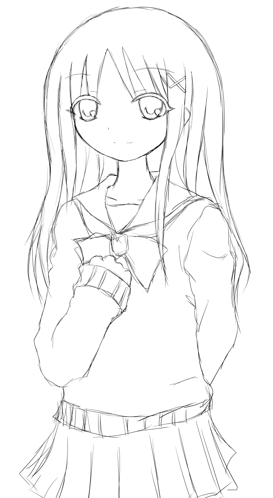
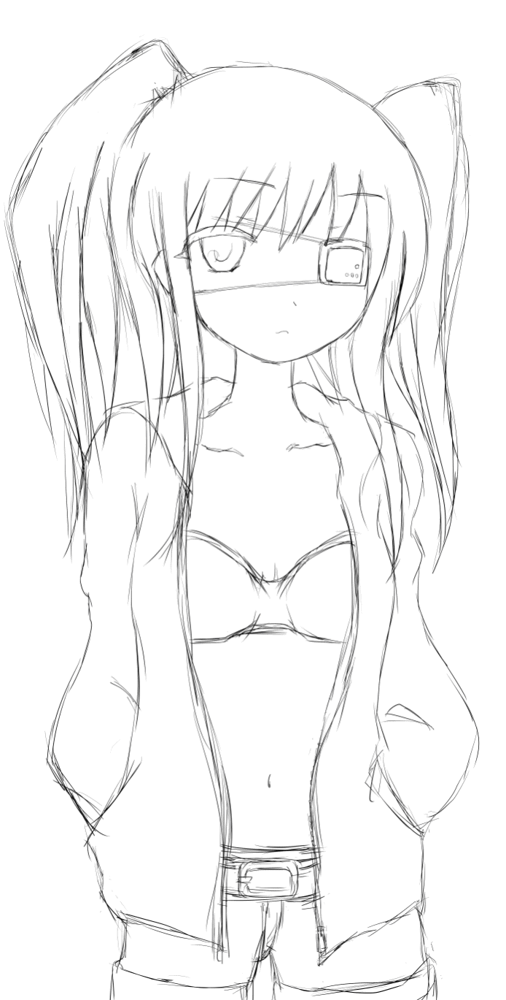
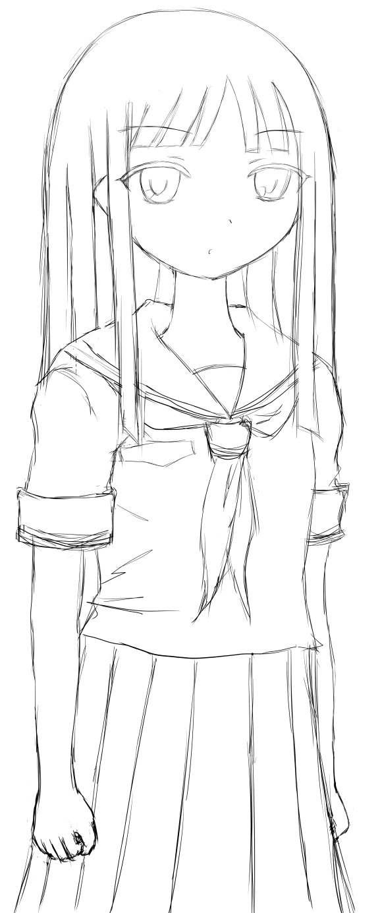
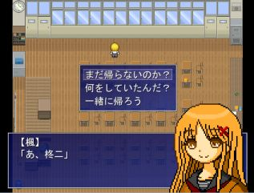
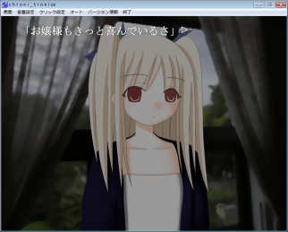
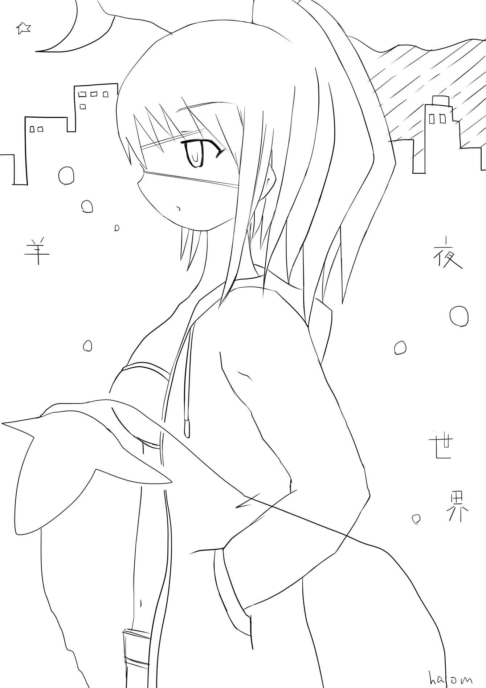

| 羊 夜 世界 ① (elh文庫) | |
| halom | |
| future extra (2016) | |
halom
夢
の はじまり
日本全国にどこにでもいる、何の変哲もないいたって普通の平凡な高校二年生。藤間 柊二 は放課後の教室で寝ぼけていた。その姿は一見、ここではない何処かまったく別の世界。
例えば見渡す限りの広く青い空と何処までも続く草原の中、羊の群れが思い思いの場所でのんびりと草を食 んでいる牧歌的な風景を夢想しているように見えないこともなかったが、授業が終わったことにもクラスメイトの大半がすでに帰宅していることにも気が付かずそのまま寝こけている駄目な学生の姿には十分見えた。
「おい、柊二」
......うるさいな。誰だ俺の睡眠を邪魔する馬鹿者は。三度目の呼び声で俺はしぶしぶ目を開ける。
「ようやくお目覚めか柊二くん、本日の授業はとっくには終わっていますぞ」
目を開けるとそこには呆れ顔をした中学時代からの腐れ縁の友人......いや。悪友の神 楽 木 敦 史 がいた。
「ああ、勿論知ってた。ちょっと考え事をしていただけだ」
俺は口元を拭い、今更何を当たり前のことを言っているんだ、といった顔で言った。
「ほうそれにしては最後の授業の教科書が開きっぱなしのようですが......」
敦史はにやにやといやらしく笑いながら言った。
「明日の予習をしているに決まっているだろう。俺は君とは違って勤勉な学生だからな、放課後といえども予習に余念がないんだよ」
俺は襟元を正しながらまるで優等生を気取った様な口調で言った。ああちなみに明日はこの教科の授業はない。
「まあ柊二くんは家に帰ったら夜更かししていつものネットのゲームでもやってるからな。あれだけ文句言ってたくせにまだ辞めてなかったのか。まったく呆れたやつだ」
「違う、最近はネットサーフィンだ。そんなにいつもゲームばっかりやってるわけないだろ」
心外だ。まるで家では一切勉強していないような言い方じゃないか。俺は口をとがらせて反論した。
「どっちも同じ様なもんだろ！ というか俺が何やってるかまで分かるか！ しっかしなんだ、お前今日一日中寝てたんじゃないのか」
「いや多分五分は聞いた。五分」
俺は五本の指を立てしたり顔で言う。
「休み時間より短いな......それ」
まあその五分も寝ぼけていただけだったが。
「というか最近お前寝すぎじゃないのか？ いいか。学生の本分は勉強だぞ？ お前にはそんな殊勝な気持ちが微塵も感じられんな。たぶんお前は全国の高校生の中でも屈指の駄目学生だな」
まさか敦史に説教される日が来るとは......。俺は驚きと共に何故か少し感慨深い気持ちになった。そっか敦史も成長したものだな。そう、これはまだまだひよっこだと思っていた弟子が師匠に一太刀を浴びせられるようになった時のような気持ちだ。
「おいおいいきなり随分な言い様だな。全教科万年低空飛行のお前だけには言われたくはないぞ。それに眠いのにはちゃんと理由はあるんだって」
俺はろくに開きもしなかった教科書やらノートを無造作に鞄に突っ込みながら言った。
「理由ねえ......。どうせ大したもんじゃないだろ。一応義理で聞いてやるけど理由ってのはなんだ？」
敦史はやれやれと肩をすくめて言った。
「いやちょっと前に良く眠れる音楽っていうのが聴けるサイトを発見してさ。その音楽のおかげかいくら寝ても寝たりないんだよ。いやほんと毎日快眠どころの騒ぎじゃないな」
俺は少し得意げに言った。きっと今まで夜更かしし過ぎて睡眠不足だった分もそれで取り返せているのだろう。
「よく眠れる音楽サイト？ なんじゃそら」
敦史が首を傾げる。
「まあサイトっていうか、最初は動画サイトのリンクから見つけたやつなんだけどな。よく分からんがなんでも睡眠導入音楽ってものらしい」
「睡眠導入音楽ってなんか若干胡散臭いなあ、本当にそれ効果あるのか」
「俺も最初はそう思ったさ。ところが試しに寝る前に聴いたら効果はてき面。なぜか今はもう消えてるけどな」
「なんだよ。もう落とせないのか」
敦史は少しつまらなそうに言った。
「ああもう駄目だな。なぜか動画も削除されている。なんていうサイトだったっけかな、もう忘れたけど確かちょっと前までそこのサイトから音声ファイルを落とせたんだ」
「へえ、まるで興味ねえな。眠れなくなったことなんてねえし」
「けっ、つまらん奴だ。やせ我慢はよせよ」
頭すっからかんの敦史はどうせ毎日快眠で高いびきだろう。はは、こいつには関係ない話だったか。
「はいはいつまらん奴で結構。それよりも俺たちもとっとと帰ろうぜ」
敦史は相変わらず呆れ顔のまま鞄を肩にかけた。まあ確かにもう落とせないものをあれこれ言ってもしょうがない。それにファイル自体は確保している訳だし。
「ああそうだ。今日はＣＤ見に行こうと思ってたんだ。付き合え。例のバンドの新譜が出たんだ」
俺はポンと手をたたく。
「それはよ言えや」
早速敦史が文句を言う。
「今朝言ったろ」
「そんなもん聞いてないわ！ しかもああそうだって明らかに今思いついた感じだったろ！ それに今日は大事な用事があるんだ。せめて明日にしろ」
敦史が大声で喚く。非常に見苦しい。
「明日？ 大体お前にロクな用事がある訳ないだろ。いい加減にしろ」
俺はそう言って鼻で笑った。
「おう待てや！」
「バーカバーカ！」
敦史があらん限りのボキャブラリーで罵倒する。まったく、それしか言えんのかこの男は。
「うっさいばーか！」
だが返す俺も大概ボキャ貧だった。
「ふん、とにかく今日は忙しいんだ。じゃあの」
敦史は鞄を手に教室を出ていこうとする。
「はっ、お前にゃあ心底見損なったわ！ 親友に割く時間もない程の用事なのか」
俺は去りゆく敦史の背中に向かって非難の言葉をぶつける。
「おう、今度からちゃんとアポとれよ」
だが憎まれ口を叩きながら敦史はしれっと帰っていった。
「まったく薄情な奴だな......」
たぶんだがＣＤ屋に行くとは言ってなかったような気はする。が、とりあえず自分のことは棚に上げて敦史に文句を言っておくことにした。まあいいや、敦史のことだ。どうせ明日にはきれいさっぱり忘れているだろう。というか三歩歩けばもう忘れてそうだ。また明日素知らぬ顔でつき合わせればいい。でなければ無理やり連行だ。そうだそうしよう。
やれやれ、寝起きに無駄な体力を使ってしまったようだ。敦史とのくだらないやりとりで少し目が覚めたもののまだなんとなく眠い。寝起きのようなぼんやりとした頭を振り、やたらと重く感じる鞄を担ぐ。
そのまま教室を出ようとした時、ふとまだ教室に残っている人物がいることに気がついた。その人物は愛用の赤い髪留めをつけた長い栗色の髪を揺らしながら必死に睡魔と格闘しているようだった。俺はその背中に声をかけた。
「なんだ楓。まだ帰ってなかったのか」
残っていたのは近所に住む幼馴染みの白 咲 楓 だった。しかし様子が少し変だ。楓の視点はあさっての方向に向き、心ここにあらずといった感じでぼんやりとしている。
「あ、柊二。おはよう」
楓は完全に寝ぼけているようだった。ようやく俺の声に気が付いたかと思うと、半分程閉じた目で眠そうに言った。
「まあその挨拶は間違いではないかもしれないが......」
ここまで寝ぼけているとしたら楓もロクに授業を聞いてなかったのかもしれない。どうも楓は授業が終わってからというずっとうつらうつらと船を漕いでいたようだった。手元の鞄も開けっ放しで帰り支度もろくに進んでいない。
「ふああぁぁ......。んん」
楓は眠たそうにもう一度欠伸をかみ殺した。
「まだ帰らないのか......って。あれ、まさかずっとここで寝ぼけてたのか？」
まあ俺も人のことを言えたものではないけど。
「うん、そうみたい......。あはは」
楓はそう言って照れ笑いをする。
「おっとと......」
なんとなくそのままなし崩し的に楓と二人で教室を出たところで、寝ぼけた楓が小さな段差に躓いてバランスを崩す。
「おいおい危ないな。大丈夫か？」
右に左にとふらふらと歩く姿はなんだか見ていて危なっかしく迂闊に目も離せない。
「......ん、大丈夫」
少し恥ずかしそうなはにかんだような顔で楓が苦笑いをする。その仕草もどことなくいつもの元気がないように見えた。寝不足が原因なのだろうか。なんにせよこんな調子じゃ一人で帰すのは心配だった。
「しょうがないな......今日ぐらいは家までついてってやるよ」
どうせ近いし、と俺は言い訳がましく後に付け加えた。
「ありがとう、柊二」
「水くさいな、幼馴染みだろ」
◇
夕暮れの通学路は下校時間のピークも過ぎたせいか、生徒の数もまばらで閑散としていた。
「なんかこうして一緒に帰るのも懐かしいもんだな」
俺は隣でふらふらと歩く楓に言った。そういえば楓とこうやって一緒に帰ること自体がかなり久しぶりだったことに気が付く。こうして帰りの道すがら楓と世間話をするというのも懐かしい。
「そうだねえ、家近いのにね。なんでだろ」
「俺は部活やってないからな。あれそういえば楓は部活やってたんだっけ？」
「ううん、私もやってないよ」
「そういやうちのクラスの奴はほとんどやってないよな。かったるもんな」
「そうだねえ、うちの学校自体スポーツもあんまり盛んじゃないしね」
楓とは近所で幼馴染みということもあってか、この高校まで全部同じ学校に通っているが段々幼さゆえの気恥ずかしさもあって中学の頃には一緒に登下校しなくなっていたような気が知る。
だがもうこの年ぐらいになるとこうして二人並んで帰っても特に何とも思わないのは不思議だった。二年になってからはクラスも同じだし、せっかくだからたまには一緒に帰ってもいいような気がする。
「しかしそんな大きなクマこさえて。ちゃんと寝てないのか？」
「うん......。ちょっとね。最近よく眠れないんだ」
そう言う楓は今も瞼が半分下りているような具合だった。
「どっか体の調子が悪いのか」
「ううん、体は平気。全然病気とかじゃない」
楓はそう言って首を振る。
「なんだじゃあ心配事か」
つい心配になって突っ込んで訊いてみる。
「うーん、そうだねえ......。そんなところかな」
なんとなく歯切れが悪い。これは余計に気になる。
「おいおいなんだよ。気になるじゃないか。言えないのか？」
「うん、それはちょっと言えないなあ......。ごめんね」
楓はそう申し訳なさそうに言った。
「そうか。まあ楓が言いたくなったら言いなよ」
何事もあけすけな楓に隠し事とは珍しい。
まあ、深く突っ込んで聞かない方がいい時もあるだろう。あえて俺は興味なさそうに言った。
「ん、ありがと。また折を見て話すね」
そんな俺の気遣いに気が付いたのか、楓は少し嬉しそうに言った。
さあて、そろそろ寝るとしよう。
俺はだらだらと見ていたテレビを止め、愛用の携帯音楽プレイヤーをベッドに放り投げた。いやしかし相変わらず微妙な温度の地方ローカル番組は就寝までの時間潰しには最適だ。
この良い感じのつまらな......刺激のなさは、日中の覚醒状態の神経から睡眠時の副交感神経に上手く切り替えてくれそうな気がする。それが終われば一日の最後の楽しみ、就寝の時間だ。まあ寝てしまうのが惜しくてたまに夜更かしする日もあるけれど。
「よいしょっと」
ベッドに飛び込む様に寝転がりイヤホンをつけると早速例の快眠音楽のトラックを呼び出す。この曲はいつでも聴けるように一番最初のお気に入りプレイリストに入れている。これでかの国民的有名な漫画の主人公のようにいつでもどこでものびのび三秒で熟睡という訳だ。
そこでふと気が付く。ああそういえば楓にこれを貸してやれば良かったかもしれない。そうしたら楓もぐっすり快眠でき............ないか。うん、世の中そんなに都合よくいかないだろう。この快眠音楽といえどおそらくあまり効果はなさそうな気がした。
多分楓の不眠は心配事が原因なのだから、それが取り除かない限りはよく眠れないのだろう。それに自然に眠れるようになる方が体の為にもきっといいに違いない。
「............」
暗い天井を見つめながら考える。うーんやはりちょっと気になる。
しかし楓の悩みとは一体なんなのだろうか。眠れなくなる程気がかりなことなのだろうか。楓とは小さい頃からの古い仲だが、いつも大体笑顔でふわふわした柔らかい雰囲気で、まあ悪く言えばぼおっとしている。
そんな平和な日常の象徴的な存在である楓が気を病んで暗い顔をしているというのは、幼馴染みとしてなんとなくきまりが悪い。楓が話してくれるまで待つと言った手前もう一度訊くのも野暮だが、明日改めて訊きだしてみようか。もし何に困っているのかが分かれば、俺でも手助け出来ることがあるのかもしれない。
ＣＤは......また今度でいいか。幼馴染みの温情だ。明日ぐらいは楓の悩み事に付き合ってやろう。なんなら敦史にも手伝わせよう。そうしよう。ああそうだ今度の期末テストはもうちょっと頑張らないとな......。前回もかなり苦戦したんだっけか。人の心配をしている場合じゃなくなるぞ。
そんな一日の出来事をつらつらと考えているうちにすぐに眠気が訪れた。
◇
暗い。辺りは真っ暗だった。
どこを見渡しても同じ暗さののっぺりとした平坦な闇があるだけ。足元はおろか自分の手元すら見えない真っ暗な黒一色。気が付くと俺はそんな暗闇の中に立っていた。
ここは一体どこなのだろうか。なんで俺はここに？ 俺は何をしてたっけか？ 周りは完全に暗闇で閉ざされ他には何も見えなかった。自分の体さえ見えないというのは、普段そうそう体験出来ないことだからかとても不可思議な感覚だった。
まるでその闇の中に揺 蕩 うように、自分の意識だけがぽっかりと浮かんでいるような奇妙な感覚。......まさか夢？ ん、ああそうか。夢でも見ているのか。でも本当に夢を見ているのだろうか。このところぐっすり眠っているからこんなにはっきりと夢を見るなんて久しぶりだ。
いや、覚えていないだけで人間は毎晩夢を見ているとどこかで聞いたことがある。なんにせよ意識はやけにはっきりとしているし俺は夢の中で今夢を見ている、ということに気が付いている。あ、これが俗にいう明 晰 夢 というやつなのだろうか。
「......。しかし何もないな」
何も見えないといった方が正しいのだろうか。しばらくそのままの状態で待ったが、何も変化は訪れず相変わらず辺りは真っ暗なままだった。今まで見た夢を全て覚えている訳ではないが、こんなに何もない味気ないものだったのだろうか？ 例えば今までみた夢は......どんな夢だったっけ。
それにしてもこれが夢だとして、その夢の中で夢を思い出すというのも滑稽な話だ。というのも何故か意識は起きている時と同じくらいはっきりとしている。
確か今まで見た夢は、色々な状況や状態があれども何故か自然と何の疑いもなくその夢の中での自分を演じていた様な気がする。結構突拍子もない状況、環境でもだ。で、目が覚めてから「ああ、あれは夢だったのか」と気が付く。
まったく夢というのは改めて不思議なものだ。そんなことを考えているとふいに視界の隅に何かを捉えた。どこからか僅かな光が漏れ出しているようだ。視界の先。暗くて距離はよく分からないが黒一色だった視界に滲むような橙色の光が微かに見えた。その光の光源を視線で辿ると、いつの間にか暗闇の中にぼんやりと狭い小さな部屋が浮かんでいた。
おかしい。俺は首を傾げる。確かにさっきまでは何もなかった筈だ。その部屋に意識を向けると突然ぼんやりとした明かりは眩しいほどに明るくなり、光の中に映る部屋がはっきりとした像を結んだ。
部屋の中には勉強机にシングルベッド。箪笥。他ありきたりの家具。どこにでもよくあるふつうの部屋だ。その生活感のある様子から住人がいるのには間違いないだろう。おそらく誰か個人の部屋だった。
その一室は何故かこちらに向かって正面の壁だけがなく、ここから中の様子がはっきりと分かるようになっていた。見た限りそこまで大きな部屋ではない。家具や小物のデザインから察するに女性の私室のようだ。不思議とその部屋には見覚えがあった。
「どこで見たんだっけか？」
記憶をたどってみるものの夢の中かは分からないが上手く思い出すことが出来なかった。
観察を続けるとその部屋には一人の長い髪の女性がいるようだった。一人部屋の中央にある背の低い小さな座りテーブルの前で俯きながら何かをしている。こちらに背を向けているのでその人物の顔も何をしているかも見えない。一体誰なんだろうか。まあ行けば分かるか。俺はその部屋に入った。
「あれっ柊二？」
近づいた俺の気配に気が付いたのかその人物が振り向く。
「ん、なんだ楓だったか」
その部屋にいたのは楓だった。
「びっくりしたよ。どうしたの、急に」
楓はいつもの柔らかい笑顔で言った。ああそうだ、思い出した。この部屋は楓の部屋だったんだ。何年も入ってないから分かりづらかったが、通りで見覚えがある訳だ。どうやらこの部屋は俺の昔の記憶とほとんど変わりないようだった。
「なんかタイムリーだなあ......」
思わず俺はそう呟いていた。以前にどこかで聞いたことがあるが、寝る前に考えていたことが夢に出やすいというのはどうも本当らしい。
「ん、何がタイムリーなの？」
楓が不思議そうに首を傾げる。
「いや、単なる独り言だ。っていうか一人で何していたんだ？」
よいしょと楓の対面にどっかりと座り夢の中の楓に話しかけた。とりあえず夢の成り行きに任せることにしよう。
「うん、ちょっとね......」
楓はそう力なく言った。夢の中の楓もいつもの元気がなかった。相変わらず目の下には大きなくまをこさえている。これは今日帰りに分かれた時のままだ。制服姿ということは帰ってきてそのままずっと何かをしていたのだろうか。
「なんだ、ここでもはぐらかされるのか。どうも俺は楓に信用されてないみたいだな......」
どうも細部までリアルにこだわる夢らしい。まったくいやなところで律儀な夢だな。
「あはは。何のことかよくわからないけど......。でもこれ見ればあきらかだよね」
そういって楓は再び力なく笑うと、膝に乗せたものを俺に向かって広げて見せた。
「なんだそれは。もしかして編み物か？」
楓が広げて見せたのは毛糸で編まれた長方形の編み物のようだった。まだ編みかけなのか編み棒がついている。
「そう、ちょっとマフラーを編んでいるんだ」
「マフラー？ ってそれが悩み事？」
「うん」
楓は大きく頷く。
「よくわからないな。一体どうしてそれが悩み事になるんだ？」
「ああ、そっか。柊二にはまだ事情を言ってなかったっけ。あの、うちの近所にユリちゃんっているでしょ。柊二も知ってるよね、ユリちゃん」
「ああ勿論知ってる、うちの斜向かいの家に住んでる子だろ。確か楓はなんだかんだとよく遊んでやってるよなあ」
俺はぼんやりと思い出す。ユリちゃんはうちと楓の家のすぐ近く、ほとんど隣ぐらいの家に住んでいる。近所ということもあってか、まだ幼い頃はよく三人で遊んでいたような気がする。年は確か俺たちの五つくらい下だったと思う。
「そういや俺はしばらく会ってないな。もうそろそろ中学生ぐらいになるんだっけ」
「そうだねもう来年かな。ほんと、時間が経つのは早いよね」
楓は少し感慨深げに言った。女の子同士ということあってか、ユリちゃんは昔からやたら楓になついていた。ユリちゃんの両親が家を空ける事が多いというのもあるのだろうけど、楓は何かとよく面倒をみていた。
「今度ね、遠くに引っ越しちゃうんだって......。今月の末に」
「そうかそれは知らなかったな。それにしてもまた急だな」
「うんお母さんの実家に帰るみたい。結構田舎の方らしいんだけど」
夢にしてはやけにディテールが凝っているな。と俺は愚にもつかないことを思った。
「それで何か餞 別 を送ろうかなって思ってね」
「ああそれでマフラーなのか。なんだ、手作りなんてなかなかいいもの思付いたな」
特に防寒具というかそういうものは作り手の温かみがあってよさそうだ。
「うん、私もそう思ったんだ。ちょうど編み物の勉強もしてたし。それにね、前にユリちゃんもマフラー欲しいって言ってたから」
「成る程、そりゃあ尚更おあつらえ向きだな。ん。というかそれ、間に合うのか......？」
だが俺は首を捻る。確か今日は二十一日。夢の中では日付がどうかは知らないが、眠る前から続いているのなら後十日程だ。今現在楓の膝に載っている作りかけのマフラーはまだ傍目からすると三分の一も編みあがっていないように見える。
「ううーん......かなり厳しい......かな。もう先月の初めくらいからずっと編んでるんだけど......」
楓は編み棒を持った手を下ろし、また一段と顔を暗くして言った。今にも編み棒を投げ出して頭を抱えそうだ。
「おいおい......」
先月の初めから編み始めたとしたら、一月半くらいでやっと三分の一。今までと同じスピードでやってたら間に合わないのは自明の理だった。
「......実は時間もそうなんだけど、もっと大きな問題があるんだ」
楓は神妙な顔で言った。
「問題？」
俺は首を傾げた。実際すでに編んでいる部分は別に問題ないように見える。特別おかしい所もない。続きを編むのに一体なんの問題があるというのだろう。
「あの、ユリちゃん昔から羊が大好きでね。だから羊のキャラクターをマフラーに入れようと思ったんだけど......」
「思ったんだけど？」
先を促しつつもなんとなく続きが予想できた。
「ほら、わたし絵とかあんまりうまくないから......。あ、これ柊二も知ってるよね」
「だよな。そうそう楓は昔から絵とか美術とか芸術系かなり不得意というか苦手だったよな」
「うん、わたしそっちは全然ダメ......」
そう、楓の描く絵はまあ女の子が描くような可愛い絵柄ではあるのだが、一体何の動物なのか結局誰ひとり言い当てられなかった事があった。子供時代......ではなくつい先日の高校時代の懐かしい？ 話だ。
「ん、まさか楓はそれでずっと悩んでいたのか？」
ようやくパズルのピースがはまったような気がする。
「そうだけど......」
「なるほど、そういうことだったのか」
自分で見ておいてなんだがなんとも変な夢だ。現実の楓もこんな悩みだったらあそこまで寝不足になることもないだろうに。いやいや、本人にとってはきっと重要な問題なんだ。まあ何にせよこの夢の中の楓の悩みは分かった、という訳だ。
「うう......もう泣きそうだよ......。どうしよう......」
「そんな泣き言いっても始まらんだろ。残った時間で何とかするしかない」
こんな調子じゃあ送られる方も安心できないだろう。おまけに楓の性格からいってお別れの時も今 生 の別れでもないというのに、大騒ぎしそうだった。
「せめて笑顔で見送ってやろうよ。そんな顔でお別れじゃユリちゃんも安心して引っ越しできないぞ？」
「でも......もう会えなくなっちゃうのに......。せめて何かしら形に残るものを渡したいんだ」
楓にとってはやはりこれは十分深刻な悩みのようだった。
「長期休みでも会おうと思えばまた会えるだろ。ってそうだ、それなら住所訊いて後で送るっていうのはどうだろう。そしたら少しは時間出来るんじゃないのか」
名案とばかりに俺は楓に提案してみた。
「こういうものは直接手で渡したいんだ。ちゃんと別れ際に」
「だよなあ」
確かにそうだろう。これは気持ちの問題でもある訳だ。とはいえいくら時間があってもものが出来なければしょうがない。問題はまたふりだしに戻る。
「出来あいのを買うってのも味気ないだろ。他の誰かに手伝ってもらったらどうだ？」
もちろん自分は戦力外だけども、と付け加える。
「なんとか自分ひとりで完成させたいんだ。きっとずっと使ってもらえるものだろうし......」
「まあそうだよな、仲が良いなら尚更だな。じゃあなんとか一人で頑張るしかないな」
「だよね......」
楓が声を暗くして目に見えて更に落ち込む。しまった。つい突き放すような余計なことを言ってしまったようだ。
「あの、これはどうかな。昨日編んだものなんだけど......。試しに羊の部分だけ」
落ち込んだままの楓は座りテーブルの下から編み棒がついたままの別の編み物をおずおずと取り出す。
「............」
俺は思わず絶句した。それは最早ぎりぎり生き物のカテゴリーに俗している何か
、という表現が関の山だった。
というか最初に説明がなかったら生き物という判別すら難しいような......。
「......やっぱり駄目だよね。あはは......。はあ......」
俺の反応を見た楓はため息をつき、目に見えるほどがっくりと更に肩を落とした。ああこれは本格的に駄目そうだ。どうにかなりそうな気配もない。
「ううーん、これは難しいな......」
思わず楓につられて悩む。一体どうしたものか。買ったり人に手伝ってもらえばもう少し目がありそうな気がするけども。楓一人だとどうにも八方塞がりなような気がする。
「............」
楓はすっかり打ちひしがれて、編み棒を手にする気力もないようだ。ほっとけばそのうちその編み棒で地面に「の」の字でも書き始めるんじゃなかろうか。とはいえここで楓を見捨てるのも酷だ。仲の良かった人にちゃんと自分の納得のいく餞別を送りたい楓の気持ちは十分分かる。俺だって出来ればなんとかしてやりたい。
まあもし夢の中でこの問題が解決したとしても現実の楓の悩みが解消する訳じゃないけどこのままにしておくのもきまりが悪い。よし、これも何かの縁だ。目が覚めるくらいまではちょっと協力してやるか。
「おいおい落ち込んでいたって何も始まらないぞ。そうだな、例えばまず何かしら絵みたいに分かり易いものにしてそれを元に作ってみたらどうだ？」
とりあえず俺は思いつく限りのアイデアを出してみることにした。だが楓はうなだれたまま首を力なく横に振る。
「ごめん、やっぱりイメージが出来ないんだ。そんなに動物園とか行ったこともないし......」
「じゃあ写真とか映像とか。インターネットにも沢山あるだろ。それを参考にすればいいんじゃないのか」
「写真とかも見たんだけど......。なんかまったく上手くいかないんだ、いくら頑張っても全然羊に見えない......」
「そりゃあ確かに困ったな」
俺は思わず楓の悩みに納得する。確かに絵心というのは見たものを忠実に......とも限らないが上手く特徴を捉えてそのイメージ通りにアウトプットする才能なんだろう、きっと。とはいえ実物を見ればまた違うのだろうか。
楓は料理、裁縫など割とそつなくこなすし、どちらかというと手先は器用な方だと思うがそれで絵心をカバーできるというものではないらしい。絵はまた別の才能のようなものなのかもしれない。
「まあなんにせよ大まかな外枠っていうかアウトラインがなきゃ何もできないだろ。とにかく下手でもなんでもそれっぽい形をまずイメージして描いてみればいいんじゃないか」
俺は根気よく提案を続ける。
「え、下手でも？」
「ああ。まずは紙にでも描いてみよう。それでちょっとずつ修正しながらやってみたらどうだ。変な所とか悪い所をさ」
とりあえず俺はそう助け船を出した。
「あ、それいいかも！」
少し楓の声に張りが戻った。
「うんとにかく駄目でもなんでもやってみよう。なんでもいきなり思ったようにはいかないって」
「ありがとう。うん、そうするね。あ、なんかつき合わせちゃってごめんね」
「なんだよ水くさいな。俺からしても楓もユリちゃんも知らない仲じゃないだろ」
と大口を叩いたとはいえ俺もそう絵心があるという訳ではないけど、何が、どこが違うかぐらいはアドバイスできるかもしれない。
......いや待てよ。俺も生まれてこのかた羊というのがどんなものかよく考えたことがないぞ。猫とか犬とかと違って若干マイナーな動物だからなあ......。今すぐぱっと思い出そうとしても難しそうだった。
「そうか羊......羊」
どんな形だっただろうか？ 目を閉じ、頭の中にイメージを浮かべる。
「うーん......」
奴は一体どんな形だっただろうか？ 更に記憶を掘り起し頭の中に今まで見た羊のイメージを浮かべる。写真、テレビ、イラスト。今まで見たあらゆる種類の羊が頭の中で渦巻く。偶 蹄 類 。うん、とりあえず毛がある。それもたくさん。縮れていて若干短めかもしれない。色は白だ。
やっぱり毛はふわふわなのだろうか？ いや実際の羊の毛というの意外にごわごわして固いという話を昔どこかで聞いたことがある。四つの短い足にはそれぞれ蹄もあって、こう耳が横に伏せた感じでああなって......。顔は割と面長だったような？ 俺は腕組みし唸りながらありとあらゆる羊のイメージを掘り起こした。
「うわっ！」
その時突然楓が大声を上げた。
突然の楓の大声に思わず目を開ける。
「ん？」
え？ これは一体どういうことだ？ 何が起きたんだ？ 俺は突然の事態に目を丸くする。見間違いじゃない。目を開けるとそこにはいつの間にか一頭の羊がいた。
「............なんで羊が？」
羊がいきなり現れた？ まったく訳が分からない。
「うわっかわいい！」
突然の事態に呆けていると、楓は歓喜の声を上げ何の躊躇もなくその羊の首に抱き付いた。
「凄いふわふわだ！」
そして嬉しそうに顔を羊の毛に埋める。その突如として目の前に現れた羊は意外に大きく、子供ぐらいなら背に乗れそうなぐらいだった。毛は真っ白でまるで綿あめのよう。首に抱き付いている楓を気にする風でもなく、顔はどこかを向いたまま時折耳をぱたぱたと動かしていた。
「............」
おかしい。一体どういうことなんだ。確かに今まで、そう目を閉じる前までそこには何もなかった。それは自信をもって断言できる。記憶違いは絶対ない。
だが目を開けると何故か一頭の羊が魔法の様に突如出現していた。俺は自体をまったく把握出来ず呆けたまま楓が羊に抱き付く様を見つめていた。まったく俺は寝ぼけ白昼夢でも見ているのか......って。
「あっ、そうか」
ああそういえばこれは夢だったんだ。楓と話し込んでいるうちにすっかり忘れていたがどうせただの夢だった。うん。なら考えるだけ無駄というものだ。
事実夢の中の楓は目の前に突然現れた羊に驚くより前に飛びついている訳だし。まあ実際の楓も同じ状況になったら同じことをしそうではあるけども......。
「............。まあ夢だからな」
これはどうせ夢なんだから深く考えても仕方ない。何があって不思議じゃない。と俺は無理やり解釈することにした。なんとなく釈然としないが、楓も喜んでいるようだしこれが好機なのには間違いない。結果良ければすべて良し、だ。
「なあ楓、今のうちにスケッチしてみたらどうだ。この羊がいる間にさ」
気を取り戻した俺は楓を急かすように言った。何であれこれが好機なのは間違いない。それに現れた時と同じようにまたふっと消えてしまうかもしれない。
「うん！ これならきっと編めるよ」
楓はようやく抱き付いていた羊から離れると、嬉しそうにルーズリーフを鞄から取り出し羊の絵を描き始めた。
「どうだ、今度は出来そうか？」
「うん、イメージもばっちり。大丈夫！」
楓は元気よく返事をし、すぐさま作業の続きに戻った。ああこれなら大丈夫そうだ。余計な横やりもアドバイスも必要ないだろう。
「............」
俺はなんとなく手持無沙汰になり羊によっかかりながら楓の作業を見守る。楓は時々羊と自分の描いたスケッチを見比べながら黙々と淀みなく編み物を進めていた。傍から見ている分にはかなり順調そうな様子だった。
まるで迷う様なそぶりもないし、手が止まることもない。それになんとなく楽しそうだ。楓の得意な料理や裁縫をしている時の様な活き活きとした表情。
「しかし羊、ねえ」
俺は突然現れた例の羊をぼんやりと見やる。その顔はいまいち何を考えているか分からない表情。まあ動物なんて大体そんなものなのかもしれない。
それにしても一体こいつはどこから現れたのやら。でもそれを言ったらいきなり楓の部屋が現れたっていうのも同じことなのかもしれない。俺はその突然現れた羊の毛をよじったり結んだり解いたりしながらそんなことを考えていた。
◇
それからどれくらい経ったのだろうか。夢の中での時間経過の具合はよく分からないが、しばらくの後にはすっかり問題の部分を編み上げていた。
「出来た！」
楓が嬉しそうに声を上げ編み物を頭上に掲げる。
「ん、ようやく完成か」
もうすでに羊に完全によっかかっていた体を起こす。すっかり見守るのに飽き待ちくたびれたせいで夢の中だというのに居眠りしそうになったくらいだった。
「今度はどうかな......？」
楓が少し不安そうな顔で編み棒を広げ俺に見せた。そのすっかり半分ほど編みあがったマフラーの先の部分にはきちんと二頭の羊が仲良く向かい合って並んでいた。
「おっ！ これはなかなか良いな。ちゃんと羊になってる」
お世辞でもなんでもなく、それはちゃんとした羊に見えた。ディフォルメされた感じもうまく本物の特徴を捉えている。これならきっと誰が見ても羊と分かるだろう。おまけに子供が好みそうな愛嬌もある。十分に良い出来栄えだった。
「良かったあ、これできっと喜んでもらえるよ！」
楓は目に見えるほどほっと胸をなで下ろし心底嬉しそうに笑った。
「ああ、これならばっちりだよ。申し分ない。胸を張ってユリちゃんに渡せるな」
「うんっ、ありがとう柊二。本当に助かったよ」
「いや俺は何もしてないな。横で遊んでいただけだ。楓が頑張ったから出来たんだろ」
「ううん、相談乗ってくれたしアドバイスも助かったよ」
楓の笑顔は達成感やら開放感やらで眩しいぐらいだった。特に何も手助けをしてやれなかったけど、楓のそんな顔を見られただけでも得した気持ちになった。
「いや、その羊のおかげだろう。よし、じゃあ後は残りの部分を編むだけだな」
「任せてよ。それぐらいなら訳ないよ」
「ははっ、じゃあ最初から羊以外のところだけ編んでおけば良かったのにな」
楓の現金な物言いについ笑みがこぼれる。
「あ。......そうだね。それは気が付かなかったよ」
あははと楓は照れ笑いをする。きっと羊の部分でてこずっていたせいでそこまで考えが回らなかったのだろう。やっぱり夢の中でも楓は楓だった。どこか不器用な現実の楓と何一つ違いない。
そこでふと思い出す。そういえば本当の楓の悩みって一体なんだったんだろう？ やっぱり不眠になるくらいの深刻な悩みなのだろうか？
この夢ぐらい簡単な悩みだったらいいんだけど......ってそこまで都合良くはいかないか。そうだ、目が覚めたらもう一度訊いてみるとしよう。こんないつもの元気な楓を見たいもんな。なんてことを考えていると、ふいに視界が霞んだ。
「......あれ？」
なんだ、急に視界がぼやける。そのぼやけた視界の先に、さっきの羊とマフラーを持って嬉しそうに微笑む楓の姿が霞んで見えた。
「ん、どうしたの柊二？」
眠気？ それとも目が疲れたのか？ いや、ちがう。これは霧のようだ。そのせいかまばたきしてもその霧はまったく晴れない。
いつの間にか白い靄
のようなものが辺りに漂い始めていたかと思うとそれは段々と濃くなり、辺りをすっかり見えなくなるまで白く染め上げていった。
「柊二？」
楓の声が遠い。もう一度俺の名前を呼ぶ声が聞こえたような気がしたその時。瞼の裏に光が爆発する様な強烈な明るさを感じた。
刺し貫 くような瞼 の裏の白い光が消え、ゆっくりと目を開けると俺はベッドの上にいた。
見慣れた天井。服は寝間着。枕元の時計を見ると時刻は七時四十分。眠る前に聞いていた携帯音楽プレイヤーも枕元に置いてある。何度まばたきをしてもそれらは何一つ変わることはなかった。
緩く揺れるカーテンの隙間から眩しい陽射しが部屋に差し込んでいる。どこからか鳥の鳴き声が聞こえた。俺はゆっくりと体を起こす。どう見ても間違いない。いつも通りの朝だ。
「やっぱり夢だったのか......」
全ては眠る直前と何も変わらない。ということは、当たり前の話だけどさっきまで見ていたあれは単なる夢で間違いない。それにしては妙にリアルというか、今でもその細部を全て思い出せる。まるで全部本当にあったことかのように......。
「でも夢、なんだよなあ」
しばらくベッドの上で腕組みをして考える。いつもの寝起きのだるさはまるで無く、やけに頭はすっきりしている。まるでずっと起きていたような感覚だった。
それにしても変な夢だったな。おまけにその夢の中で楓の悩み事を聞くとは。世の中不思議なこともあるもんだ。人の深層意識とかそういう話は分からないが、眠る直前に見たものや考えていたことが夢に出やすいという話はよく聞く。
おそらく楓が悩やんでいる、という情報がインプットされた状態で眠ったせいだ。それが思ったより意識の中に残っていてそれがたまたま夢に出てきた、と。俺はそう分析した。
「まあいいか」
よいしょ、とベッドから降りる。とにかく今は間違いなく現実、いつも通りの朝だ。昨日までと何も変わらない。あの夢を見ていたせいかあんまりよく眠った気はしなかったが、不思議と眠気はまったくなかった。おまけに体調もすこぶる良い。
そうだ、今日学校で楓に会ったら悩み事を聞いてやろう。夢でも意外と簡単に解決したんだ。案外本人にとっては深刻な悩み事でも、他の人間から見れば簡単に解決法が見つかるなんてよくあることだ。気を取り直し朝の支度もそこそこに玄関を出ると家の前の道路に人影があった。
「お、誰かと思えば楓か。どうした、家まで来るなんて珍しいな」
玄関の前にいたのは制服姿の楓だった。珍しいこともあるもんだ。いつもだったら楓はとっくに家を出ている時間なのに。わざわざ俺が出てくるのを待っていたのだろうか。
「うん、おはよう。ちょっとね」
楓は相変わらず目の下には大きなクマをこさえたままだったが、声にも表情にも以前の活力というか生気が戻っているようだった。
「ああおはよう。なんだ久しぶりに一緒に登校するのか？」
「あのね柊二、んっと、あのっ」
「おいどうした。何かあったのか」
「えっと、うん。あのね！」
楓は早く本題を言いたくてもどかしいような喋り口調だった。
「そう慌てるなって。歩きながら聞くから」
俺は楓をなだめて先に歩きだす。
「今朝やっと出来たの！」
だが楓はその場に立ち止まったまま待ちきれないとばかりに、喋り始めた。
「出来たって、何が？」
楓の話がよく見えない。歩き出した足を止める。
......いや待てよ。出来た？ 出来た......って。まさか。楓のその言葉に昨日の夢がちらりと脳裏によぎる。いやそんな馬鹿な。第一俺は楓の悩み事すら知らない。
「マフラー！ まだ完成はしてないけど、今朝ちょっとやってみたら全然できなかった羊のところが編めたんだ！」
「......」
俺は絶句した。一体これはどういうことだ。何が起きたんだ。昨日の夢と全く同じ内容じゃないか。まさか楓と同じ夢を見ていた？ いやいやそんな馬鹿な。そんなことがあるわけない。でも現に今楓は......。
「朝から急におしかけてごめんね、でもなんだか柊二に言いたくって！」
楓はそう言って照れ笑いをする。
「......ん、そりゃあよかったな。でもやっとって、まさかそれが悩み事だったのか？」
俺は内心混乱しながらもとりあえずそう訊いてみる。
「うん、ずっとそこで詰まってたんだ。何回やってもどうしても羊の所が編めなくて......。でも今朝ちょっと早起きして試しに編んでみたら出来たんだ」
楓はこんなに嬉しいことはない、といわんばかりの眩しい笑顔で言った。
「今まで編めなかったのが、今日急に編めたのか？」
俺はひとつひとつ確かめるように楓に質問をした。
「そうなんだ。なんとなく出来そうな気がしてね。そしたら不思議とどこも苦戦しなかったんだ」
......一体これはどういうことだろう。夢がリンクしている......？
「おいおいまさか夢の中でも編んでたからじゃないのか」
俺は平静を装いながら冗談めかして言った。
「あはは、そうかも。毎晩うなされてたみたいだったから。昨日も編みながらいつの間にか机に突っ伏しながら寝ちゃってたみたい」
楓はそう言って眠そうに欠伸をした。でもとても晴れやかな顔だった。そう、昨晩の夢でみた顔と同じ様な。
「じゃあ昨日は特に夢は見てないのか」
俺は昨日の夢について話をふってみた。
「夢は覚えてないなあ......。多分見てたような気もするけど、うーん」
そう言って楓は目線を斜め上に上げ思い出すような素振りを見せたが、寝不足気味のせいかうまく思い出せないようだった。
「......そっか」
残念ながら楓は昨日の夢を覚えていないらしい。というか俺と同じ夢を見たという根拠も元々ない。あれは俺個人の夢だった筈だ。
だがこの奇妙なリンクというか一致はなんだろう。これはちょっと、どころではない、かなり気になる問題だ。よし、もう少し昨日の夢について探ってみることにしよう。
「いやでも間に合って良かったな。確か今月末だっけ。ユリちゃんの引っ越し」
何気なく楓に訊いてみる。
「あ、なんだ柊二も知ってたんだ。そうだよ。でも後は普通に編んでいくだけだから。多分週末ぐらいには終わるよ」
これでやっとぐっすり眠れるよー、と楓は言った。
「............」
またここでも奇妙な一致。いや。いい加減認めよう。これは偶然の一致とかそんなレベルの話じゃない。俺は昨日夢の中で初めて、ユリちゃんの引っ越しについて楓から聞かされた。それに関して記憶間違いは決してない。以前にどこかで誰かに聞いたのに覚えていない、なんて話は絶対にない。間違いなく昨日初めて聞いた話だ。だがその情報は現実と相違ない。
......なんて言えばいいんだろう。はっきりとした言葉は見つからない。上手く表現も出来ないけどあれは......。そう、あの夢は。昨日のはあくまで夢、という形をとっていたけど単なる俺一人の夢の世界ってわけじゃない。
そう、まるで現実にいる誰かの意識と繋がった世界 のような......。
「んああ眠いよー」
楓は頭を左右にふらふらと揺らしながら今にも下りそうな瞼に必死に抵抗し眠気と格闘していた。
「がんばれ後八時間くらいすればゆっくり眠れるぞ」
「長いよ......」
「まあでも良かったじゃないか。心配事がなくなってさ。これで枕を高くして眠れるってやつだな」
登校する生徒を脇目に見ながら俺は言った。丁度この時間が登校のピークだろうか。学校に向かう生徒達で通学路は騒がしかった。
「うん！ やっとこれでぐっすり眠れるよ。でも気に入ってくれるかなあ、わたしはそれが心配だよ」
「いやユリちゃんもきっと喜んでくれるよ。だって上手く出来たんだろ、自信を持って渡せばいいんじゃないのか」
結局そのまま楓の世間話やら苦労話やらを聞きながら一緒に登校する。昨日の帰りもだが、朝方にこうして二人きりで登校するのは物凄く久しぶりだった。確か最後は小学校の時ぐらいだっただろうかとぼんやりと思い出す。
「そうだね、わたしにしたら上出来な方だよ。あともう少しで完成だから帰ったら早速続きやるんだ」
楓はうきうきとした感じで言った。どうやらあの後もマフラーの制作は順調そうだった。でもやっぱり気になるのは昨日の夢だ。
「なあ楓」
ふいに俺は神妙な口調で楓に問いかける。
「ん、何？」
「いや、すまん。ちょっと変な事訊いていいか」
「いいよ。なんでもどうぞ」
「あのさ、例えば誰かの夢と誰かの夢が繋がっていることって、あると思う？」
「夢が繋がる？ うーん......どうだろう」
楓はそれに特に怪訝そうな顔もせず答えた。
「夢って普通一人一人違う夢を見るものじゃないかな、たぶん」
「だよな。俺もそう思う。後さ、もし仮に自分の夢の中に誰か他の人が出たとして。その人はあくまで夢の登場人物であって、現実のその人とは違うよな？ 当たり前の話だけど」
「ううーん......また難しい話だね。つまり夢に出てきた人は、現実の人とはまったく関係ないってこと？」
「そう。そういうこと」
俺は頷く。
「どうなんだろう。それはやっぱり別なんじゃないかな。夢の登場人物はあくまでその夢を見ている人の想像上のものだと思う」
「だよなあ」
現に今までそうだった。そしてそう思い込んでいた。だけど昨日の夢は？
「そっか、悪いな。いきなり変なこと訊いて」
「ううん、わたしもそんなことたまに考えるよ、面白いよね。あ、でも複数の人が同時に同じ夢を見たって話はテレビか何かで聞いたことあるような」
「なんだ本当かそれ？」
俺は思わず楓の話に食いつく。
「うん、なんかの特集番組だったと思う。確か海外の話だったと思うけど」
「......そうか。世の中にはそういう事もあるにはあるんだな」
「珍しいけどあるんじゃないかな」
「じゃあさ、その夢の中の記憶とか会話も全員一致したのかな」
「うーん、そこまでは言ってなかったと思ったけどなあ。あくまで同じ内容の夢を見たっていう話だったと思う。みんなで一緒に同じ映画を見るように夢を見たのかな？」
「なるほどねえ」
楓の話で少し納得がいったような気がした。おまけにちょっとしたヒントも。複数の人間が同時に同じ夢を見る、それ自体は珍しいがないことはない。でもそれは一体どういう条件で起こるものなのか。はたまた単なる偶発的なものなのか。
同じ場所で寝ていたのか。ばらばらの場所で寝ていたのか。同じ時間に眠ったのか。何かしらの関連性があるのか。ないのか。
「............」
更に考え込む。まあ今はそれはさておきとしてこの問題は実に単純だ。昨晩の夢は俺と楓が同時に同じ夢を見た、ということじゃない。夢の中の楓が喋っていることが現実とリンクしていたということだ。
夢の中の楓が俺の想像上の楓と仮定するとつじつまが合わない。何故なら俺の知りえない内容を、その夢の楓が喋っていたからだ。
「どうしたの？ 柊二」
気が付くと楓が正面から俺の顔をのぞき込んでいた。いつの間にか真剣に考え込んでいたようだ。
「いや。なんでもない。やっぱり朝は眠いな」
「そうだねえ、わたしも眠い......。授業中寝ちゃうかも」
ふああと楓ももう一度欠伸をした。その平和そうな顔を見たら、急に現実に引き戻された気がした。まあ現段階で検証不可能なことをあれこれ考えても仕方がない。一つはっきりしているのは。今ここで考えても結論は出ないということだ。
要は再現性があるかどうかだ。偶然じゃなければそのうちまた起こるだろう。またその時改めて考えればいい。世の中の大体の事は、そんなものだ。それでほとんどの問題は片付いてしまう。俺はあえてそう気楽に考えることにした。
「あ、柊二あれって」
学校正門前の大きな坂道に差し掛かった時、楓が突然声を上げる。
「どうしたいきなり」
「ん、あれ夜 雲 先輩だよ」
楓の指さした先を見ると登校中の生徒の中、丁度坂の上に一人一際異彩を放つ生徒が歩いていた。
「夜雲？」
俺は楓に訊き返す。聞き覚えの無い名前だった。
「うん。夜 雲 夕 凪 さん。この時間に登校なんて珍しいねえ。いつもはもっと早いんだけど」
「ふうんそうなのか。俺は初めて見たな。まさか有名人なのか？」
「うん、かなり」
楓はまさか柊二は知らなかったの？ と言わんばかりの顔で頷いた。
「なんか良家のお嬢様みたいな雰囲気だな。着物とか似合いそうだ」
照れ隠しに口をついて出たのはごくごく普通のありきたりな感想だけだった。
「そうだね、確か街はずれのおっきなお屋敷に住んでいるだって。かなり昔からここの土地に住んでる古い家系みたいだから実際そうかも。おまけに凄い資産家らしいよ」
「へえそれは知らなかった」
そう言って俺は楓と歩きながらその人物を観察する。俺たちの数十メートル先を歩くその姿は、他の生徒に紛れることなく遠目でも一目で分かる独特で不思議な雰囲気の様なものを放っていた。
腰まである長く綺麗な黒髪はまるで夜空のようだった。降り積もったばかりの雪のように白い肌がそれをより強調しているように見える。同年代の女の子よりも華奢な感じの体。深い紺色のスカートとセーラー服。初めてみるのにどこかで見たような気がするのは何故だろうか。
ああそうだ、田舎の床の間とかで見たガラス張りの箱に入った日本人形にそっくりだ。
「ん、あれちょっと制服少し違わないか？」
よく見れば着ている制服のデザインが楓の着ているものと大分違う。楓や他の女生徒はやや現代っぽい感じのデザインのセーラー服だが、彼女が着ているのは一昔前の映像などでよく見るタイプの伝統的なセーラー服のようだった。
「そうだね、あれは昔の制服だよ。確か五、六年前くらいのリニューアルされる前のかな」
「そういうことか。でもいいのかね古いやつのままでも」
「一応校則というか決まりで新しいものを着るようにはなっているけど......。夜雲さんくらいの立場になると割と融通がきくんじゃないかなあ」
楓はそう言って苦笑いをした。なるほど、楓の説明は曖昧だったが大方の事情は察した。学校の理事とか上層部に親族がいるなりコネがあるなりとかそんなのだろう。昔からこの土地にいるらしいし、学校と何かしらの関係があるのかもしれない。
「でもなかなか良いじゃないか昔のも。逆に新鮮だな」
一人だけ違う制服のせいか周りの生徒よりよけいに目立っているような気がした。
「うん、シックで良いよね。わたしも一回着てみたいな」
「リニューアルされたんならもうないんじゃないのか」
「そうだよねえ、んー残念」
無駄話をしながらなんとなくそのまま観察を続ける。楓が先輩というからに学年は俺たちのひとつ上の三年なんだろう。確かに同年代の生徒よりも少し大人びた感じがする。落ち着いた雰囲気のせいもあるかもしれないけど。
「ところであの手に持っているのは何だ？ 竹刀か？」
その女の子は学校指定の黒い革の手提げ鞄と淡い紫色の風呂敷の様なものに包まれた一メートル程の細長い棒状のものを持っていた。
「ん、多分そうなんじゃないかな。でも剣道部に入ってる訳じゃないみたいだけど」
楓の話によると、実際夕凪の剣道の腕はかなりのものらしい。体育の授業では部内でも腕の立つ剣道部員でもまるで歯が立たなかったそうだ。だが特に部活には所属しておらず、常に持ち歩いているものは誰にも見せたことはないそうでこの学校の人間にとって大きな謎らしい。
「......うーん謎だ」
「あはは、でも本当にこの学校の七不思議のうちのひとつらしいよ。あの持っているもの」
「また大げさ話だなあ。本当かそれ。というか楓やけに詳しいな」
俺は呆れたように言った。
「女の子はみんな怪談とかこういう話題は好きだから。夜雲さん以外にもたくさんあるよ」
ふふふと楓はいたずらっぽい顔で笑う。
「おいやめろ」
俺は真面目な顔ですぐに楓の言葉をさえぎった。
「ごめんごめん、夜雲さんのお母さんもずっとあの細長いもの持って登校してたんだって。もしかしたら代々引き継がれている大事なものなのかも」
「わざわざ毎日持ち歩くぐらいだもんなあ。となるとその母親......おばあちゃんもってことなのか」
「みたいだね。お母さんについては昔からいる先生が知ってたんだって。流石にその前までは知っている人はいないみたいだけど......」
それは確かに凄い。
「ほお、その年期ならじゅうぶん七不思議として数えられるな」
しかしよくある開かずの教室、とか十三階段とかじゃなくて実際に現在生きている生身の人間にまつわる七不思議って結構珍しいんじゃないだろうか。
「何が入っているんだろうねえ」
楓は口ではそう言ったが特にそこまで不思議そうな素振りはなかった。多分大方の人と同じく、ピラミッドの謎の様なロマン的な謎っていうことなんだろう。下手に暴くような野暮な真似はせず謎は謎のままの方がいい、みたいな感じかもしれない。
「誰か直接本人に訊いてみたらいいんじゃないのか。そしたら長年の疑問も解決するだろ。教えてくれればの話だが」
「あはは、でもそれじゃ七不思議が一つ減っちゃうね」
「あ、確かに六不思議だと決まりが悪いな。セブンスワンダーが......って、ん？」
ふいに前を歩く夕凪の歩みがぴたりと止まる。そしてそのままその場で立ちすくむ。夕凪を観察していたこちらもつられてつい立ち止まってしまう。
「どうしたんだろ？」
楓が不思議そうな声を上げる。
「さあ？」
何かの気配でも感じたのだろうか、丁度そんな感じの立ち止まり方だった。そうしている間も夕凪は相変わらずこちらに背を向けて立ちすくんでいる。
だが一瞬の間の後こちらの視線に気が付いたかのように、出し抜けに後ろをくるりと振り向く。切れ長の目がすっと俺たちの姿を捉えたような気がした。
夕凪の瞳が真っ直ぐこっちを見つめる。遠目からでも窺える感情の読めない涼やかな瞳の色は、まるで値踏みしているようにもじっと何かを沈思黙考しているようにも見えた。妙な緊張感。
「あれ、もしかしてこっち見てるのか？ 楓なんかしたのか？」
この距離なら聞こえる筈はないが俺は小声で楓に訊いた。
「ううん、何も？ でもこっちを見てるみたい、なんでだろ？」
楓もまったく訳が分からないといった顔でふるふると首を振る。だがそれもつかの間のことで、こちらを振り向いた時と同様に突然その視線は外れ、また元の通り何事もなかったかの様にしゃなりしゃなりと夕凪は歩き始めた。緩い風が背を向けて歩く夕凪の絹糸のような黒髪と深い紺のスカートを揺らした。俺たちはぼんやりとその背中を見送った。
しばらくの後はたと思い出したように楓と二人そろって後ろ振り返ってみたが何もない。すでに登校のピークも過ぎたのか、坂の下にぽつぽつと生徒がいるぐらいだった。彼女が興味を引きそうなものは何もないようだ。多分。
「何かあったのかね」
「さあ？」
楓も首を傾げる。どことなく不思議な感じのする先輩だった。
ホームルームが終わりにさしかかる。これが終われば今日の授業は終わり。そのせいかは分からないが教室内にどことなく弛緩した空気が流れている。クラスメイト達はもうすでに放課後の予定で頭がいっぱいのようだった。
「ああそうだ。この前の期末テストで赤点を取った者にはこれからしばらく放課後は補修があるからな。各教科の実習室まで行くように。このまま帰るなよ。じゃあ号令」
担任の教師は帰り際まるで今思い出したかのように、さらりととんでもない事を言い放った。解散の号令を合図に教室中はとたんに解放の騒がしさに包まれる。
「まさかあのテストで赤点取る奴なんておらんだろー」
敦史がにやにやといやらしく笑いながら俺の席までやってきた。
「ん、でどうなの。柊二くんはさ」
おまけに某有名司会者のように俺の机に手をつくと得意満面の顔で言った。
「割と簡単だったもんね今回の試験。なるべくみんな赤点取らないようにしてくれたんじゃないかな。鈴木先生優しいよね、それに教え方も上手いし」
それにつられるように楓もぱたぱたと俺の元へとやってくる。
「............」
言葉のナイフというものが実際存在するということを俺は今この場で知った。出来れば知りたくはなかった。
「............」
俺は無言のまま鞄に教科書とノートを詰める。
「おや、どうされましたか。柊二大明神。え、まさかあの簡単なテストで赤点を......。いやいやそんなまさか！ まさか！」
くそ、こいつ言いたい放題言いやがって......。というか敦史も毎回赤点ぎりぎりで胸をなで下ろしてるぐらいの低空飛行じゃないか。点数にしたって俺と大差ないぞ。
「うそ......！」
楓は驚きのあまり口に手を当て言葉を失っている。俺は鞄を担ぎ上げ無言でスッと席を立った。
「ははっ、ざまあみろ！ あ、スマン間違えた。お勤めご苦労様でーす」
俺の背に実に愉快そうな敦史の声が浴びせられる。本音を先に言うな、先に。くそっ後で覚えておけよ......敦史。
「あの......そのなんかごめん」
それに楓の申し訳なさげな声が続く。とはいえ謝られても......。
「はあ......」
楽し気に下校する生徒たちを横目にだらだらと廊下を歩きながら大きなため息をついた。次からはもう少し真面目に授業を受けようと思った。ああこれはきっとあれだ。小さい面倒事をおろそかにすると、やがて大きな面倒事になるってあれだ。そういうやつだ。今まさに身をもって体感だ。まあたぶん家に帰ってゲームして寝たら明日には忘れているんだろうけど。
......しかし腑に落ちない。あの最後の問題は絶対にあっていたと思ったんだけどな......。あれが正解だったらぎりぎり三十点は超えているので補修は免れた筈だったのに。帰ったらもう一度答え合わせしてみようか。というかこれから毎日放課後が補修でつぶれてしまうのだろうか......？ 更に重くなった足取りで廊下を歩いた。
「すみません、補修受けに来ました」
ガラリとぶっきらぼうに教室の戸を開ける。
「お、ちゃんと来たな柊二君。偉い偉い」
中で待っていた数学の鈴木先生はいつもの笑顔で言った。
「ええまあ一応決まりですから......」
俺は重罪を犯した囚人の様にいそいそと教室の中に入る。
「うん関心な心がけだ。もしかしたらすっぽされるかと思ったよ」
鈴木先生は相変わらずニコニコしながら言った。
「なんか先生機嫌いいですねえ......」
俺は不景気そうに言った。こっちはこれからのことで暗い気持ちでいっぱいだというのに世の中というのは実に不公平だ。
「ああ、ちょっと良いことがあってね。ま、立ち話もなんだ座ってくれ」
そう言って鈴木先生は椅子をすすめた。
「あれ、もしかして俺一人だけですか？」
教室の中には鈴木先生一人だった。他の生徒はいない。
「うん。そう。二年では君だけだね。というか私の受け持っているクラスでは君一人だ」
「............」
補修対象者は本当に俺一人だけらしい。しかも全学年で。なんてこった。
「まあそう落ち込まないでくれ。次のテストはもう少し簡単にするからさ」
「なんかすみません......」
思わず俺は謝ってしまった。
「いいよいいよこれも私の仕事だ。君は気にしないでくれ」
そう、元はといえば俺がロクでもない点を取ったのが悪いんだ。先生はそれに貴重な時間を費やしてくれている。一度はあやまるのが筋だと思った。
この数学の鈴木先生は最近赴任してきたばかりだ。といっても昨年の夏ぐらいからだからもうそろそろ一年ぐらいにはなるのだろうか。
専任の教師の産休やら移動などでちょうど数学の教師が不足していたらしく、当初は臨時扱いだったが一向に人員が補充される見込みもない今となっては、もうすでに正当な一教師となっているようだった。
「............」
ちらりと機嫌の良さそうな先生を窺う。確かにその表情からはまったく面倒とも思っていなさそうだ。因みに鈴木先生の教え方はとても丁寧で何より分かりやすい。説明も順序良く組立て、途中のどんな小さな質問、疑問も一つ一つ丁寧に潰していく。かといってやたら時間がかかったりもたつくこともない。
説明は常に簡潔で、先に結論を提示してから話す為理解もし易い。補足資料として配るプリントも綺麗でよく整理されておりとても分かり易いと評判のようだ。そんな一連の手際の良さなり、ある種のプレゼンにも近い授業の進め方は鈴木先生曰く、どうもこの学校に来るまでは教員とは別の仕事をしていたらしく、その仕事で身に着けたものという話だった。
いつも清潔な色のシャツの袖からちらりと見える海外ブランド物の時計と、普通の高校教師が着るにはちょっと高価そうなスーツなんかもその辺りの話の信ぴょう性を高めているらしい。そんな所で苦手な生徒が多い数学の授業の割に、この教師の授業だけはやたら人気が高かった。一部の生徒を除いて以前より数学の平均点が上がったと学校でも評価されている。
まあちゃんと起きて授業をきいてさえすれば、まず赤点など取る人間はいないということだ。それがどんなに駄目な生徒であっても。そう、仮に敦史であっても。敦史でも。
「よし、じゃあ早速補修を始める前に」
「あの先生、これいつまでやるんですか......？」
俺は不景気そうな表情を隠すこともなく先生の言葉をさえぎって言った。失礼は十分承知だ。だがまずはこれを訊いておかなければならない重要なことだ。
「期限は特に決めてないよ。君の理解がきちんとできたと判断したら解放してあげようと思っている」
「本気ですか......」
それってまさかの無期限もありうるのか......？ すでにさっきまでの申し訳ない気持ちは何処かに消え失せ、俺は再び暗い気持ちでいっぱいになった。
「とその前に少し世間話でもしようか。お互い知った仲の方が何かとやりやすいだろう。私もこうして生徒と一対一でじっくり話す機会はなかなかないからね」
確かにこちらからしたら数学の先生はこの鈴木先生一人だけど、向こうからしたら俺は大勢いる生徒の中の一人に過ぎない。
「それに君とはどうも長い付き合いになりそうだからね」
先生はうんうんと頷きながら言った。
「長い付き合い......？」
「ははは、そう警戒しないでくれ。言葉のあやだよ」
「ならいいんですが......」
俺はほっと胸をなで下ろす。鈴木先生は基本的には良い人だが、たまに冗談に聞こえない冗談を言うところは苦手だった。しかしここで鈴木先生の機嫌を損ねてもことだ。何せこの補修の期限を決めるのはすべてこの人に握られているからだ。ここはあくまで下手、下手で行くのが吉だろう。
「どうだい、最近は。学生生活は楽しいかな」
先生は眼鏡のずれを直すといつもよくやる癖の、机に両肘をつき組んだ指の上に軽く顎の乗せて言った。
「はい、まあごく普通に」
俺は鈴木先生の振った話題にぽつりぽつりと返答する。最近のこと。自分のこと。学校のこと。家のこと。などなど。
「なるほど、君も立派に学生生活を営んでいるようだね。うん、実に良い事だ」
「立派かどうかはちょっと自信ないですが......。まずまず楽しんでいる方だと思いますよ、ちょっと遊び過ぎているような気もしますが」
だから現にこうして補修を受けるはめになっている訳だ。自分で言ってて情けないといえば情けない。
「いやいや若いうちは遊ぶことも重要だよ。大人になったら色々と制約も多いからね。周りを気にせず心置きなく遊べるのは今のうちだけさ。ああもちろん人に迷惑をかけない範囲でね」
そういって先生は、はははと笑った。ああなんとなくこれは久しぶりにあった親戚の大人との会話に近い感じだ。
「そうなんですか」
「まあ一般論だけど実際大人になると結構真理なんじゃないかと思うね。他には何かあるかな。最近何か変わったこととか、身の回りで」
「うーん、大体は平和そのものですね。ああそういえば、昨日ちょっと変なことがあったんですよ......って」
あ、ついはずみで喋ってしまった。しまった、と思ってももう遅い。
「ん、変なこと？」
鈴木先生は興味津々に体を若干乗り出している。まずい。
「いや、その......」
俺は言いよどむ。しばらくは心の内に秘めておこうと思っていたのに。人に聞かせようにもあの例の夢の話はまだ再現性も確認できていないからあれ一回の偶然とも言える。まだまだ検証段階なんだ。
「どうしたんだい柊二くん？ その変なことっていうのは」
先生は相変わらず興味深そうな目を俺に向けている。
「えっと......」
俺は視線を右に左に動かす。そうだ、今から別の話をでっち上げるか？ いや、それは無理だ......。今までのやりとりで分かったが、即席の嘘話ではこの頭の回転の速い抜け目のなさそうな教師を欺ける自信はない。
しかしこの鈴木先生は話しやすい雰囲気を作るのが上手いというか、語り手をのせるのが上手いというか間に入れる合いの手のタイミングや絶妙だからなのか。ともかくかなり優秀な聞き役でもあるようだった。おかげでどうもさっきからいらんことまでぺらぺら喋ってしまったような気がする。
「気になるな、是非聴かせてくれ。頼む。ああ勿論言いにくいことだったら他の人には公言しないよ」
先生が追い打ちをかける。......ああもうしょうがないか。
「いや昨日の夜の話なんですが......」
俺は観念して話始める。まあいいか、どうせ話したところで信じやしないだろう。
「......なるほど、そんなことがあったのか」
先生は顎に手をやり、頷きながら言った。観念した俺はすっかり昨日の夢の話の顛末を全て喋ってしまった。その間先生は身じろぎ一つせず俺の不思議な夢の話を真剣に聴いていた。
「やっぱり胡散臭い話ですよね、作り話と疑われてもしょうがないと思います」
照れ隠しにそう言った。この年になって真剣に夢の話をするのは少し恥ずかしい。
「いや、信じているよ。一切疑ってなんかいない。それにそういう事例は実際結構ある」
先生は真面目な顔でやけにはっきり言い切った。
「なるほどやっぱり結構あるんですか」
確かに今朝楓もそんなことを言っていたが実際のところどうなんだろうか。
「珍しいけどあるよ。おまけに同時に見た夢の中の会話の記憶も全員一致していたそうだ。こうなるともうそれは個人的な夢なんかではなく実際にある何処か別の場所、っていう気がするね」
「ほお......そうなんですか」
それはまさに今朝俺が知りたかった情報だった。怪我の功名ってやつか。むしろ話してよかったのかもしれない。
「良かったらその話もうちょっと詳しく聞かせてもらえませんか？」
今度は俺が先生に詰め寄る。
「そうだね、じゃあ今度は私が話をする番かな。おっと、時間は大丈夫かい？」
先生が腕時計をちらりとみる。
「はい、大丈夫です。今日は何の予定もありませんから」
あったとしてもどうせ補修で潰れるだけに違いない。俺は半ば開き直ったように言った。
「そうか。なら少し長くなるからコーヒーでも出そうか。柊二君はコーヒー飲めるかい？」
「はい、一応。あの甘くしてもらえると......」
「了解。じゃあ少し待ってくれ」
鈴木先生は席を立つと実習室奥にある備え付けの棚から割と大仰なコーヒーメイカーを取り出し早速セッティングを始めた。よく見れば他の棚にも先生の私物らしきものがちらほらと見受けられた。どうやらこの実習室は完全に鈴木先生の私用の部屋と化しているらしい。
「いいですねえ、大人って」
俺はコーヒーを淹れる先生をぼんやりと眺めながらついそう口走っていた。なんというか、自由だ。
「まあね。でも私は学生の君の方がうらやましくみえるけど。毎週土日は休みだしおまけに春休み、夏休みに冬休みまである」
「でもその期間は先生も休みなんじゃないのですか？」
てっきり学生と同じスケジュールだと思っていたが違うのだろうか。
「そうだねえ、大学あたりはそうかもしれないけど。中高くらいだと少し違うかもしれないね」
先生は慎重にコーヒーメイカーに投入する豆の量を調整しながら続けた。
「例え話をすると学生というのはサービスの利用者なのかもしれない。逆に教師というのはサービスを提供する側。飲食店やホテルなんかと同じさ。こう考えればむしろメインである授業時間以外の下準備やらその他の雑務を含めたウエイトの方が大きいって話なんじゃないかな」
「それは分かり易い例えですね」
若干他人事のような言い方になるのは、鈴木先生はもともと教職ではなかったからかもしれない。
「まあ全部が全部そうとも限らないだろうけどね。おおかたの高校教師はそうなんじゃないのかな。私はまだ担任のクラスももってないし部活の顧問も全て断っているから気楽な方だと思うけど」
「部活の顧問って断れるんですか？」
意外な話だった。
「他の学校はどうか知らないがあれは完全なサービス残業だからね。今ちょっとその待遇について教師と学校の間で揉めているんだ。ってこれは余計な話だったかな」
そう言って先生は自嘲気味に笑ったが、やはり大人は大人で大変そうだった。
「はあ、やっぱりお互い結局はないものねだりなんでしょうかねえ」
俺は気が抜けたように言った。大人がうらやましいような、うらやましくないような。鈴木先生の話を聞いてなんだか微妙な気持ちになってしまった。
「ははは、そうだね。まさにそれだ。隣の芝はってやつかな」
「まさしくですねえ」
うん、世の中って実際そんなものかもしれない。そんな話をしている内にコーヒーの香ばしい良い香りが漂ってきた。
「そういえば補修はやらなくていいんですか？」
俺はすっかりコーヒーの準備に余念がない先生の背に向けて言った。世間話で完全に忘れていたが、ここに来てからというもの補修らしきことは何もしていなかった。
「ん？ ああいいよ。ちょっと気が変わった。どうだい、柊二くんに一つ提案があるんだが」
先生はカップにコーヒーを注ぐ手を止めるとそう出し抜けに言った。
「提案ですか......？」
突然の話に面くらい思わず訊き返す。先生は補修なんて最早どうでもいいくらいの口調だった。
「そう、きっと君にとっても良い提案さ。どうかな。この補修の代わりということで一つ仕事を引き受けてみないか？」
「し、仕事？」
「うん、仕事。率直に言うと取引をしてみないか」
先生は一度間を置くように静かにコーヒーカップを机に置くと再び俺の前に座った。間に二つ並んだカップから立ち上った白い煙が細くたなびく。......取引？ 先生は置いたコーヒーに口もつけず俺を見た。なぜだろう妙な緊張感を感じる。
「一体なんの取引なんですか？」
俺はおそるおそる尋ねる。
「そうだね、それはひとまず置いておこう。さっき話していて分かったんだが、どうやら君には他の人とは違う少し特異な才能があるようだ」
先生は手を組み、じっとこちらを真剣な眼差しで見た。さっきまでの少しおどけた感じの柔和な雰囲気はすでにない。これはどうも冗談の類ではないらしい。
「特異な才能ですか？」
何の才能だろうか。俺は首を傾げる。自慢じゃないが俺には特別な才能なんて何一つない。......いや待てよ。まさかこの話の流れからすると......。
「夢、といえば分かり易いだろうけど少し違う。人間の無意識の世界。そのエリアに入り込める能力さ」
やはりそうか。ようやく先生の意図を少しばかり察する。どうも先生は早とちりしているみたいだ。
「いや先生ちょっと待ってください。あれは単なる偶然の一致というか、ちょっとした勘違いという可能性も......」
俺はそこまで言って口ごもる。確かにあの夢を単なる偶然と片付けるのが一番話が早い。でもまだ今の段階でそう断定してしまうのにはやはり若干の違和感があったのは間違いなかった。そのせいか最後まではっきりとは言い切れなくなってしまう。
「いや、問題ない。あれは偶然ではないよ」
先生はまたやけにきっぱり言い切った。何かしらの根拠があるのだろうか。その確信めいた雰囲気は先生の表情からも見て取れた。だが俺にはその根拠はまるで分からなかった。
「君には自覚はないかもしれないが単なる偶然ではないよ。ああそれに勿論無償だなんてケチくさいことは言わないさ」
先生は続けた。
「君はその能力を使って私の簡単な仕事を手伝うだけで、補修が免除される」
「補修の免除!? そ、それはいいんですか......？」
更なる先生の提案に思わず驚いて訊き返す。
「構わないよ」
またもやこともなげにさらりと言う鈴木先生。それはむしろこっちが心配になる程淡々とした口調だった。
「いやあの規則っていうか、教師としての倫理的な問題とか......」
多分言っても無駄なような気がしたが、俺は一応の常識的な反論を唱えてみる。いや実際本音はちっともそんなことは思ってもいないけれども。
「倫理か。こういったリスクある話を持ち掛けるのは、万が一の事態の責任を負う覚悟があるからこそなんだ。その覚悟がなければ初めからこういう話は一切口には出さないさ。勿論ばれてもこちらが全責任は負うつもりだ。それくらいの誠意は持ち合わせている。だから君は安心していい」
やれやれと言わんばかりに肩をすくめさも当然の様に先生は言った。なんというかきっとこの人は大物なんだろうと気がした。......って、いやいや。関心している場合じゃない。
「ちょ、ちょっと待ってください！ 急な話なんでよく整理が......」
「不満かな？ じゃあおまけに次のテストも免除しよう。君がどんな点をとってもすべて百点。なんなら今期の成績をもうこの段階で決めてもいい。もちろん君の好きな数字でいい」
鈴木先生は俺の言葉をどうやら値を釣り上げるポーズだと思ったらしい。掛け金を更に釣り上げてきた。
「いえ、あの......」
......これは困ったぞ。いよいよ断りにくくなってきたな......。いや、魅力的な提案であることは間違いないけども。
「仕事というからには勿論給与も出そう。ああ、賃金うんぬんっていう話は気にしなくていい。これはちゃんとしたアルバイトという訳じゃないからあくまで謝礼として個人的に渡すだけさ。勿論法に触れる仕事でも人道に反することもない。どうだい、悪い話じゃないだろう？」
「給料まで出るんですか!? それは凄い......」
俺は呻くように言った。給料に成績まで至れり尽くせりだ。しかし俺が急に数学テストで百点とったら胡散臭さ満点だな。
「うーん......」
どうしたものかと腕組みして考える。しかしよくよく考えてみれば実際自分にとってのメリットはかなり大きい。いや、よくよく考えなくてもこんな好条件ないだろう。仕事の内容がどんなものかは分からないが、これはおそらく破格の待遇だろう。次のテストだけではなく、今期のテストすべて免除といってもいい待遇だ。
成績もこの時点で最良。勿論勉強時間なんて少しも割かなくてオーケー。全部遊びにまわせる。おまけに賃金まで？ しかも万が一ばれても俺はお咎めなし、ってことか。
「どうかな。給与はもちろんかなりはずむし、自分で言うのもなんだけど決して悪い条件じゃないと思うよ」
先生は期待に満ちた目で俺を見た。
「えーと、うーん......」
俺は更に悩んだ。そう、なぜなら待遇が良すぎる怪しさもあるが段々とその内容に興味が湧いてきてしまったからだ。先生が自腹で賃金まで出す仕事とは一体どんな仕事なんだろうか。しかもこの優秀な教師がここまで真剣に頼む仕事とは？
本音を言えばとても気になる。怖いもの見たさというかその実態が余計に知りたくなってきた。試しに聞いてみるだけ聞いてみようか。
「その、ちょっと確認なんですが、俺でもちゃんと務まる仕事なんですか？」
流石に二つ返事する勇気はなく俺はそう言って探りを入れてみる。
「そうだね、柊二君の技能がどの程度のものかまだまだ見極める必要があるが、まずはその資格を持っている人間というのがこの仕事には必要なんだ。君はその条件を満たしている訳だからそれは安心してほしい」
「あの能力が最低条件ということですか」
「そうだね。まずはそれが第一条件かな。訓練するにしても資質がなければ話にならない」
先生は続けた。
「柊二くんが持っていた、もしくは手に入れたその技能。人の無意識の部分を覗ける能力というのは非常に稀な能力なんだ。その技能の保有者は世界各地。国内含めてもおそらく両手の指で数えられるぐらいの人数しかいないだろう」
「え、他にもいるんですか？」
これは驚きだった。
「ああ勿論。おまけに中にはもっと深い層。人が普段意識していない部分にまで潜ることが出来る者もいる」
潜る？ 先生は今度は覗くと言わずあえて潜る、と表現した。確かにあの夜はどこか別の場所から覗くということではなく、実際に自分がそこに入り込む形だったので潜るという言い方の方がしっくりくる。
「まあ柊二くんのそれでも十分珍しい能力だよ。世界の人口の割合から考えてみればかなりレアな能力であることは分かるだろう？」
「確かにそうですねえ。いやでももしかしたら一時的なものかもしれませんし......。何かのはずみだった可能性も」
なんとなくだけどあれはただの一回きりの偶然で、しかも何かしらのきっかけでたまたま出来ただけ、という気がしていた。特にあの睡眠導入音楽。要は俺個人の能力云々ではなく、あれがきっかけになったんじゃないかと今朝から考えていた。それ以外に思いあたる節もなかった。
「うーん多分なにかのきっかけによる一時的なものかもしれません。まだ昨日のことであれ一回きりだけですし」
「きっかけはあくまできっかけに過ぎないさ。資質がなければ出来ない」
だが先生は首を横にふりそうはっきり言った。
「あの最近眠る前に睡眠導入音楽っていうのを聞いていまして、多分そのおかげなんじゃないかと......」
「なるほど、あくまでそのおかげだと柊二くんは言いたいんだね」
「はい」
俺は頷く。
「いや違うな。例えばきっかけがあったからといってすべての人間がその技能を獲得できる訳じゃないんだ。でも逆にそのきっかけによって才能を開花させる人間もいる。閾 値 ぎりぎりのところにいる人間、恐らく君もそうだね」
「つまりは予備軍、みたいな感じですか？」
「簡単に言えばそうだね。きっかけがない為その能力が眠っている人も多いってことさ」
先生は説明を続けた。
「人、人間の無意識の世界に入り込める、もしくはそれを垣間見える能力。それは単純に一種の才能の様なものだと思う。かけっこが得意だったり絵や料理が得意だったり。簡単な話それらとまったく同じようなものなんじゃないかな」
「え、そうなんですか？」
俺は先生に訊き返す。
「ああ、どんなものだってそうさ。その才能が無い人間からしたらとても不思議に見えるだろう。でも本人にとっては何の不思議はない。なぜなら呼吸をするように当たり前に、ごく自然にできることだからだ」
「確かに出来ない人からみたら不思議に見えますね」
「勿論訓練次第でどんな人間でも程度の差はあれその能力は獲得できるのかもしれない。だが君は何のノウハウも訓練もなく、そのきっかけの音楽だけで人の無意識の世界に簡単に潜り込めた。これは数段大きなアドバンテージさ」
確かにあの夜はごく自然に。何の考えもなく入り込めた。だが意図的に入った訳ではなかったからいまいち実感が持てなかった。
「最適解かその近くまで最短で到達できる能力っていうのが、要は世間一般で言う才能というものなのだろう。センス、とも言い換えられるかもしれない。ともかく君にはそれがあった」
「つまり俺には間違いなくその能力があると先生は思った訳ですか」
「そう。さっきの君の話を聞いて確信した」
「あの先生の勘違いとかでは......ないですよね？」
念の為俺はそう聞いた。もうこれは半ばやると言っているようなものだった。だが正直やってみたいと思ったのは事実だ。というかもうここまで訊いたら腹をくくるしかないかもしれない。
「大丈夫。君の技能は間違いないから自信を持ってくれ。私が保障する。優秀な講師もつけよう。何事にもガイドは必要だ。それに最初は何かと戸惑うと思うからね」
なんと講師までつくとは。本当に至れり尽くせりだった。
「凄いですね、講師なんて」
「講師というかその道のプロさ。柊二くん、君は非常に幸運だ。何故ならその講師はこの界隈では屈指の優秀な人物だからね。その人物に師事できるのは私が知る限り君が初めてだ」
その言葉に俺はなんとなく豊かな髭をたくわえた気難しく厳しそうな仙人風の老人を思い浮かべた。もしかしたら修業的なことも？ 願いを叶える球なんかを探したりも？ いやいやまさか。
「当面はその講師の指示を受けてほしい。仕事の内容や新たな注文に関しては適時講師の方にも伝えよう」
「ということは鈴木先生が講師ではないんですか？」
てっきり先生が教えてくれるものだと思っていたが違うらしい。
「私？ いや、私には残念ながらその才能は無かった。理屈は理解できるからこうして大まかな説明は出来るけどね。だから餅は餅屋に任せた方が良い。あくまで主役は君さ」
先生は冗談めかしたように言った。
「またまたそんなおだてても」
「いや冗談ではなくもしこの一連の話に台本があったのなら君はきっとメインの登場人物、主演だろう。だが私はあくまで助演。単なる補佐役さ。花は君が持つべきだ」
「はあそうなんですかねえ。そこまで言うのならちょっとやってみます」
そう気の抜けた返事をする。自慢じゃないが生まれてこの方俺は何かのメインになったことなど一度もない。本当に自慢じゃないけれど。なんだか先生にうまく乗せられているような気もしなくはないが仕事の内容が気になるのは事実だし、自分の能力がどんな事に使えるのかも知りたい。
「引き受けてくれてありがとう、いやそれにしてもいい返事をもらえて良かった。本当に今日は良い日だ」
そう言って先生は満足げに頷き、手を差し出した。
「はい、こちらこそよろしくお願いします」
軽く握手を交わし無事契約成立となった。もうこれで引き返せないのだろうか。
「じゃあ今日も遅くなったしここまでにしようか。明日から早速仕事に移ってもらうけど、いいかな」
「大丈夫です。どうせしばらくは補修で放課後は全部潰れるのは覚悟していましたから」
「はは、それはありがたいな。っと、そうだ。これを取っておいてくれ」
そう言って先生は懐から無地の茶封筒を出して差し出した。
「ん、これは？」
「資格手当さ。大人の世界では特別な才能、ライセンスの保持者にはそれ相応の手当がきちんと支給されるんだ。今日はまあ、契約成立の手付金も兼ねてってところかな。君の心が変わらないうちにね」
「いやちょっとお金は流石に......」
まずいだろうと慌てて手を振る。
「まあ開けてみてくれ」
「え？」
言われるがままに中を開けてみると、連なった何かのチケットらしきものが三枚ほど入っていた。これは......コーヒーチケット？
「最近駅前に出来た店のやつさ。なかなか美味いよ。サンドイッチもかなりいける。野菜がとても新鮮なんだ」
先生はいつもの冗談を言う時の顔で言った。
「なら遠慮なく頂きます」
俺はそれに思わず笑ってしまった。これも先生なりのジョークの一種なのだろうか。単なる勘だけどなんとなく楽しい仕事になりそうな予感がする。
「では明日の放課後、校門脇の桜並木で待っていてくれ。グラウンド側の奥にミラーがある方だ」
そう言って鈴木先生はいたずらっぽく、にっと笑った。
放課後の喧騒の中校舎を出る。今日は金曜日。週末。
この学校が終わったばかりの時間の校門の付近は何時にもまして一斉に下校する生徒であふれかえっていた。これから迎える土日に備えて足早に帰るもの。街へと遊びに出かけるもの。ようやく長い一週間を終えた開放感でどれも嬉しそうな顔している。
さて、そんな中でも俺は今日も補修......じゃなかった。仕事だ。いよいよ仕事の初日。ちょっとした緊張感と妙な期待で自然と気が引き締まる。今までアルバイトなんかはやったことはないから仕事って言葉自体が新鮮だ。実は若干楽しみであることは否めない。
一体どんな仕事なのだろうか。先生が指定した待ち合わせ場所へと向かいながらぼんやりと考える。それにしても他人の意識の中に入れるとしたら、それが実際どのような感じの仕事になるのだろうか。
いやしかしほとんど勢い半分、興味半分で引き受けてしまったが、果たして俺にちゃんと務まるのだろうか？ 肝心の仕事の内容も気になる。単純に考えると、やはり他人の頭の中にある情報が純粋に価値になる形の方向性の仕事になるのだろうか。
例えば銀行のカードの暗証番号とか他の何かしらのパスワードを調べるとか。もしくは企業のトップなり政財界の人物の重要な情報を盗み出すとか......。いやそれは明らかに違法なラインだな。その辺の良識に関しては先生を信じてもいいような気がする。
単なる勘だけど、あの先生がそこまで悪いことをするようには見えない。まあ何にせよ誰か特定の人物の意識の中に任意で潜り込む術はしらないからやりようがないけども。楓の場合は古い知りあいだった訳だし。
「ま、何もわかってない今の段階であれこれ考えて仕方がないか」
正直上手く出来る自信はないがとにかく先生の話を信じるとしよう。何故かあの人が自信満々に言い切ると、なんとかなりそうな気がするから不思議だ。
「さてと。まずは講師を探すわけか」
人波に流されながら校門近くまで来ると、何故か校門前の桜並木にかなりの人だかりが出来ていた。いくら週末の下校時間とはいえこの数は異常だ。まさかなんかの事件が？
「一体何事なんだ」
緊急車両的なものはなかったが何かの騒ぎがあるのは確かなようだ。よく見れば下校中の生徒だけではなく部活を抜け出してきたのか、ユニフォーム姿のままの野次馬までいる。その種々様々色とりどりの恰好の人間が大勢集まっている姿はまるで文化祭の時のような騒ぎだ。
背伸びをしたり縁石の上に立って人垣の隙間から覗くと、その中心にはガードレールに軽く腰かけた一人の女の子の姿が見えた。人だかりの原因はどうやらその人物のようだった。
「うわまた派手な格好だな......」
思わずそんな声が出る。いや服装自体いたって普通だし実際そこまで派手な服装という訳ではないが、髪の色やかなり肌の露出が多いという意味での派手さを感じる。特に前がはだけたパーカーの胸元から見えるのは水着のようにも見える。そのせいでほとんど裸に違い姿でパーカーだけを羽織っているような感じだ。
おまけにその髪の色や形もあってか全体的に何処なく派手さを感じる風貌になっている。髪型もまた特徴的だった。金色よりもやや茶色よりの明るめの髪を頭の両サイドやや上の位置の方で何束かに無造作に縛ったツインテールような形。その前髪から覗く左目には眼帯。灰色のパーカーにデニムのショートパンツ。白いスニーカー。うん、確かにこれはついじっと見てしまうのも分かるかもしれない。
その子は若干物憂げな表情でイヤホンで音楽を聴きながらパーカーのポケットに両手を突っ込み、時折足をぶらぶらさせていた。その何処か退屈そうな感じは何かを待っているように見えた。人待ち中なのかもしれない。
「ん、いやまてよ。あの恰好はもしや......」
そういえば、と昨日帰り際に先生からもらったメモを制服のポケットから取り出し広げた。確かにこれに待ち合わせ場所と講師の外見と特徴について書いてあったような気がする。
校門脇の桜並木。金髪。ツインテール。灰色のパーカー。眼帯。これはもう間違いない。彼女が講師の雛 菊 だ。
「......ああということは」
どうやら俺はこれからこの人波の中に飛び込まなければならないらしい。そしてこの衆人環視の中、どうもご機嫌いかがですかと呑気に初対面の挨拶を交わすという訳か。そうこれはちょうど、よくテレビドラマとかであるパーティーの席とかで、かなり酔いが回った酔っ払いが馬鹿騒ぎしながら何の空気も読まずに、主演を押しのけ舞台の上に飛び込むかの如くの状態だ。
というか先生に携帯番号くらい訊いておけばよかったんだ。俺は仕事初日の不幸を呪った。
しかしここで愚痴っていても話は始まらない。これも仕事のうちだ。そう意を決し懸命に何層にも重なった分厚い人垣ををかき分けその少女に近づく。
「ちょっとすみません！」
くそ、狭いな！ というかこいつら全員暇なのか？ 部活はいったいどうしたんだ！
「やっとついた......」
何度人の足を踏みこちらも踏まれひじ打ちを受けたことだろうか。ようやく騒ぎの中心地に辿り着いた俺は膝に手をつきぜえぜえと荒い息を吐く。
まったく仕事前だというのに余計な体力を使ってしまったようだ。俺は仕事が肉体労働ではないことを祈った。
「ふう......」
一呼吸入れるようにシャツのよれを直し息を整えてから前に進み出る。この一連の騒ぎの犯人はそれに気が付いたようにイヤホンを外すと、ガードレールからひょいと飛び降り。
「あなたが柊二くん？」
そう俺を見ながら言った。この女の子が講師の雛菊で間違いなさそうだった。
夜世界
「え、ああ。うんそうだ」
突然正面に立たれ思わず曖昧な返事をしてしまう。その独特な風貌のせいか気圧されるというかなんとなく圧倒されてしまった。髪の間からのぞく片方だけの透き通った色の瞳が俺の姿をまっすぐに射抜く。
「良かった。場所はあってたみたいだ」
その子はそう言ってにっと笑った。その突然の無邪気な笑顔に思わずどきりとする。その少女は普通の人とは何か違う妙な、注意をひきつけるような不思議な雰囲気を纏っていた。
しかしながら近づいて分かったが、案外その子は結構小柄な体型だった。身長も俺より頭二つ分くらい低い。最初は思わずその雰囲気に圧倒されたが年もかなり若そうだ。派手目の風貌と大き目のパーカーに隠れているけど体型もかなり幼い。せいぜい中学生くらいだろうか。
「とりあえずここから一刻も早く離れよう」
一息ついて少し気を取り戻した俺は初対面の挨拶もそこそこにそう口早に提案する。というのもどこで騒ぎを聞きつけたのか、周りを取り囲むようにどんどん人が集りさっきより人垣が膨れている。普段ですら狭い校門前の歩道はすでに抜け出すのも困難になりつつあった。教師達がこの騒ぎを聞きつけるのも時間の問題だ。仕事初日からそんな面倒事は御免だ。
ましてや鈴木先生からはこの仕事のことはできるだけ内密に、と注意があったのだ。まあこれだけ目立っておいて今更内密も何もあったもんじゃないと思うが......。
「そういえばなんだかやけに騒がしいな。一体何があったのか。祭りだろうか」
雛菊は周りに集まった観衆をもの珍し気に見ながら言った。
「多分......じゃなかった。確実にあなたのせいだと......」
俺は少し非難めいた口調で言った。
「ん？ まあいいや。待っていたら少し小腹がすいたな。バーガーショップへ行こう」
雛菊はそう言うとだしぬけに俺の腕をむんずとつかんだ。
「詳しい話はそこで」
そしてそのまま歩道を歩き出す。
「え、ちょちょっと！」
俺は雛菊に引っ張られながら抗議の声を上げる。
「気にするな。わたしの奢りだ」
「いやそうじゃなくて！」
「飲み物とサイドメニューもだな、大丈夫。分かってる」
雛菊は仕方がないな、と笑うと喚く俺にまるで構うことなく人垣の中を突っ切っていった。
雛菊に連れてこられたバーガーショップは駅の近くにあるお店で、高校生一人では入りにくい少し洒落たお店だった。オレンジ色の薄暗い照明がぼんやりと店内を照らしている。夕方ということもあってまだそこまで混んではいないようだった。俺たちは隅のテーブル席についた。
「あそこで待つのは是非やめてほしい」
精一杯の物々しい口調で開口一番に俺は言った。
「何故？」
雛菊はそれにさも不思議そうに言った。俺はそれに軽い衝撃を受けた。
「目立つから」
「ん、そうなのか」
雛菊は咥えたストローを離し小首を傾げる。
「ああ、次回はせめて裏門にしてくれ......。下校時間だけは部活が終わるまで鍵は開いてるんだ。派手な行動は避けるように先生からも言われているし、なるべく内密にいきたい」
というか無暗に目立つことは楓にはじまり特に敦史あたりに面倒な......いや、俺の平穏な高校生活に確実に支障をきたしそうだった。
「ふむ了解した、次はそうしよう。しかし何が珍しいというのだろうなあ一体」
「なるほど、自覚はないんだな......。いやなかなか派手な恰好だぞ」
「ん、別に結構ふつうだと思うけど」
目立つに決まっているわ！ と俺は思わず反論しそうになった。
「変かな？」
雛菊は相変わらず不思議そうな顔で、自分のパーカーの袖をつまんだ。
「いや、別に変じゃない。似合ってると思う」
似合っているのは間違いないと思う。単純に目立つってだけだ。
「そうか。じゃあ何も問題ないな」
雛菊はそう言ってにこりと笑った。
「まあ......。うん。確かに」
まいっか。俺はその笑顔をみたら何かどうでもよくなってしまった。本人が気に入っているのなら突拍子もない恰好でない限り他人がとやかく言う問題じゃない。しかし髪の色もそうだが肌の露出具合というかその温度感がなんとなく海外っぽい感じというか。リゾートとかそんな場所に住んでいる人間の感じだ。
なんと言ったらいいんだろうか。一見服装自体は地味な部類だがその着こなし方がやや派手っぽいというか。とにかくなんとなく目を引く恰好だ。
「とにかくこれから宜しく頼む。雛菊さん」
そう言って俺は頭を軽く下げる。まずは仕切り直しだ。出会いはなんだかんだで適当になってしまったのでここで改めてちゃんとした挨拶をした。
「はは、まあそうかしこまらないでくれ。あとわたしの呼び名は雛菊でいい。仕事中でも年の上下は気にしないでほしい」
「年の上下？ ってまさか......年上？」
俺は目が点になった。
「この前十八になった」
「え」
思わず素の声が出る。年下どころか年上だった。この子が......年上？ そんなバカな......ってでも本人は十八だと言っている。嘘でもない限り。いやちょっとにわかには信じがたいが。
俺は今一度雛菊の全身を観察する。幼い顔つきにどう見ても高校生以上には見えない小柄な体型。その着こなしや言にはやや大人っぽい雰囲気があるが......。
「本当に？」
俺はそう念押しする。真面目な顔でこくりと頷く雛菊。
「これは大変申し訳ありませんでした、この通りです。すみません」
俺は思わず背筋を伸ばしそのまま深々と頭を下げる。今までの言動といい確実に俺はかなり失礼極まりない奴だった。
「あははいきなりそんなやめてくれ、喋り方も今までみたいでいい。堅苦しいのは嫌いだから」
だが雛菊はそんなものは意に介さずけらけらと笑った。
「そうか、それは助かる」
俺はほっと胸をなで下ろす。良かった、別に気にしてないようだ。そう、しょっぱなから慌ただしいやりとりですっかり忘れていたがおまけに雛菊は講師なんだった。仕事初日に、しかもまだ始める前にいきなり心象を悪くしてしまったら話にならない。
「まあお互い気楽にやろう。別にそこまで大層な仕事じゃないんだ」
雛菊はそういってにっと笑う。
「んじゃあこちらこそ、雛菊」
そしてどちらからともなく差し出した手で握手をする。この短いやりとりだけでなんだかやりやすそうな人柄だと感じた。堅苦しさを嫌う感じは俺と似ていて波長が合いそうな気がする。しかし呼び名一つ、言葉一つでも仕事の堅苦しさがなくなるって改めて凄いと思う。
「じゃあ冷めないうちに食べようか。話は食べながらでも」
そう言って雛菊は重なったハンバーガーの山を崩す。
「おう、食べよう食べよう」
俺もそれに手を伸ばした。
「ところでスズキから大体の話はいってるのかな」
雛菊は食べ終わったハンバーガーの包み紙を丸めると、親指をぺろりと舐めた。
「いやそれが肝心の仕事の内容はまだ全然聞いてないな、そういえば」
「それはこっちが話す予定だったからな。いやしかしスズキはちゃんと教師をしているのか？」
「ん？ ちゃんとやってると思うよ。というかむしろ結構生徒の人気はある方かもしれない。教え方も上手いってかなり評判だと思う」
俺は包み隠さず正直に答えた。
「そうか、あはは、あのスズキが教師ねえ......！ ああでも意外と天職かもしれないな、あはは」
それを聞いた雛菊が遠慮なく実に楽しそうに笑った。なんでだろう。俺は何も面白いことは言っていない筈だ。
「よく分からないが雛菊と鈴木先生は昔からの知りあいなのか？」
俺は本当に面白そうに笑う雛菊に尋ねる。
「単なる昔の仕事の知り合いだ。一応私の雇い主ってことになるのかな。いやスズキが柄にもなくまっとうな世俗の職についているのが可笑しくて。ましてや人に親切に物を教えるなんてな。あいつは決してそんな類の奴じゃないぞ」
そういえば鈴木先生はずっと教師をしていたわけではないのだろうか。その前の経歴は知らないが、雛菊の言い方から察するにどうも別の仕事の様だった。一体どんな仕事をしていたのだろうか。しかしこの雛菊の言い様はひどい。
「ああすまん。話が脱線したな。仕事の話だったか」
雛菊はひとしきり笑うと軽く居住まいを正した。
「それで俺がやるのは一体どんな仕事なんだ？」
「そうだな、その説明にはちょっと時間がかかるから順に話そうか。まず大事なことだが、柊二は前に一度他人の意識の中に潜ったことがあると」
「ああこの前の夜に一度だけど。一応先生は大丈夫だとは言っていた」
「ふむ、その話は事前にスズキから少し聞いたよ。繰り返しになってすまないが私にもその時のことを改めて教えてくれないかな」
「ああ分かった。昨日の晩の話だ」
俺はあの晩の話を雛菊に話し始めた。
「そうか、羊か」
一通りの顛末を聞いた雛菊が頷く。
「うん羊。マフラーのやつもちゃんと羊に見えたな。お世辞抜きでいい出来だった」
あの後実物をスマホのカメラで撮ったもので見せてもらったが、やはり夢の中とまったく同じものだった。これも後日驚いたことだ。それでやはりあれは単純な夢、という話で割り切れるものではないということを俺は確信したんだった。
「これはちょっとした......ただの個人的な疑問なんだが、そこに編むのはペンギンという選択肢はなかったのだろうか？」
そう雛菊がおもむろに言った。
「え、ペンギン？」
俺は思わず訊き返す。
「いや特に気になるって訳でもないんだけど仮に......もしかしてそれがペンギンだったらどうなっていたんだろうって思って......」
「うーん、別にペンギンでも良かったんじゃないかな。たまたまユリちゃんが羊を好きだったってだけで」
「じゃあ皇帝ペンギンだった可能性もある訳か」
雛菊はそう独り言みたいに小声でつぶやいた。
「うん十分あるんじゃないか。はは、なんだ雛菊はペンギンが好きなのか？」
「え？ ああそうだな。暇な時はよく見ているよ。勿論映像だけど......」
そう言って雛菊は頬を染め、照れ隠しだろうか手元のコーラを啜った。
「そうか。いいじゃないかペンギン、可愛いらしいしな」
ちょっと意外な一面というか、やっと年相応な所が見られて面白いというか。ようやく年相応の女の子らしい一面に俺は思わず笑ってしまった。
「んん、そうかな」
雛菊はそれに更に照れたように顔を背ける。いやしかし寒い季節の防寒グッズにあえて寒いものを連想させる絵柄は最初いかがなものだろうと思ったけど、普通にエゾシカとかの模様があるニット帽もあるからいいのだろう。多分。
「いやでもあれって単なる偶然って訳じゃないよな？ もしくは何かの勘違いとか......」
俺は恐る恐る尋ねた。これで勘違いだったらとんだ笑い話だ。ここまで話が広がって今更単なる間違いでした、はかなりというか相当恥かしい。若干緊張しながら雛菊の次の言葉を待つ。俺の視線を受けながら雛菊はストローからゆっくりと口を離し、少し間を置き思案するように目を閉じて言った。
「......ん。間違いない。それは......」
「間違いない。柊二の入り込んだそこは人間の深層意識の層 だ」
そう言って雛菊は下唇を舐めた。
「深層意識のレイヤー？」
聞き慣れぬ単語が飛び出てきた。俺が訊き返すと雛菊は軽く頷く。
「ああ、人の意識というのは顕在意識と潜在意識の二つに分かれているのは分かるかな？ 簡単に例えるとしたら起きている時と寝ている時の状態かな。厳密には違うけど」
「うんそれは分かる。確か顕在意識っていうのは普段自分が意識したり考えたりしているもので感知というか認知できる心の動きで、潜在意識とは普段意識していない心の動きってことだろうか」
俺は昔本か何かで知った知識を言った。
「そこまで知っているなら話は早いな。そうそう、だがややこしいことにその潜在意識の中は更にまた何層かに分かれて重なった多重構造になっているんだ」
「いくつかの層？ 要はミルフィーユケーキみたいなものだろうか？」
俺の中で地層が積み重なっているイメージが思い浮かぶ。
「ああその例えは良いな。私はずっと玉ねぎみたいなものだと想像していたけどな」
そう言って雛菊は笑った。
「うーん玉ねぎでもよさそうだなあ」
雛菊のその言葉に俺はぼんやりと玉ねぎの形を想像した。仲良く並んだミルフィーユと玉ねぎ。なんだかほのぼのしてしまった。
「そのエリアというか層のうちのひとつに主に人が無意識にアクセスするエリアがある。通称、夜 の 世 界 と私たちが呼んでいる層だ」
雛菊は続けた。
「柊二がその晩に垣間見た、入り込んだのはそこで間違いない。そうか、まだスズキからその辺りに関する説明はなかったのか」
「確か詳細は追々話す......みたいなことは言っていた気がするけどなあ、まだ聞いてはいないな」
昨日先生は仕事に関しての詳しいことは全て講師に訊いてくれと言っていたような気がする。つまり雛菊がこの一連の話の舞台裏を全部知っている。特にあの晩の謎に関する大きなヒントを持っているのは確実だった。この機を逃す術はない。
「なあ雛菊もそこに入ったことがあるのか？ あの晩俺が体験したものは一体何だったんだ？」
俺は雛菊に詰め寄る。
「まあまあそう慌てないでくれ。勿論用事があれば入るが私の本業はあくまで羊飼いだ。ついでにその層についても一緒に話そう。重要な話だ。それに順を追って説明した方が柊二も理解しやすいと思う」
雛菊は苦笑いをしながら言った。そうか、考えてみれば講師なのだからそりゃあ入ったこともあるだろう。
「ああ分かった。お願いする、ぜひ聞かせてくれ」
俺は大きく頷いた。ようやくあの謎が解けるのかと思うと妙な期待と緊張感を感じる。羊飼いという耳慣れない単語も気になる。雛菊は再びコーラで喉を潤すとゆっくりと話し始めた。
「あるも の が、ある日偶然、人間が無意識にアクセスするエリアを発見したんだ。もうかなり昔の話になるけどね」
「あるもの？ 一体それは何なんだ？」
「単なるシリコンチップさ。素子のニューロン、電気回路のシナプスで出来た人工脳。電気仕掛けの寝坊助お嬢様さ」
雛菊はまるで謎かけの問題のように言った。
「電気回路に電気仕掛け......。ってことは」
俺はそれにはたと気が付き膝を叩く。
「まさかそれは機械なのか？」
「ご明察。というかプログラムかな」
雛菊はにっと笑って頷いた。
「もうずいぶん昔の話だが人間の人格を模した人工知能、人工人格が作られたんだ」
雛菊はグラスの中のコーラを飲み干すとストローをグラスに戻し、続けた。
「そいつがある時偶然すべての。それこそあらゆる人間が無意識にアクセスする領域、アストラルという層 を発見したんだ」
「単なる機械が人の心の中を？ それは凄いな。でもなぜそれが分かったのだろうか」
俺は疑問を口にする。
「本来その人工知能が知りえるはずのない情報を出力したんだ。おまけに顕在意識のみならず、一切外部に出ていないであろう人の頭の中のことまでも」
「人の頭の中までも？ でも人の無意識の部分なんて曖昧なものに対して確実な検証は出来るのか？」
「あれこれ試しているうちに割と精度の高いあるちょっとした検証法を確立したんだ。簡単に言えば何もない部屋に閉じ込めるような若干非人道的な方法だったみたいだけど、それに関しての話は私はあまり詳しくは知らない」
そう言って雛菊は首を振った。
「そうだったのか。すまない話の腰を折った。続けてくれ」
俺は慌てて続きを促す。正直あまり気持ちのいいものではなさそうなその詳しい話は聞きたくはなかった。
「ああどうもそいつ、つまり人工知能は人の頭の中を覗き見る、というよりかはそのエリアを介して情報を取得しているようだった。出力した情報にはそのエリアに関する内容もあった」
「そのエリア......というのはさっき言っていた人が無意識にアクセスする層のことか？」
「そう。それこそ何度も検証が行われたが、どの結果もそれを裏付けるものだった。それで恐らくそのエリアが存在することはほぼ間違いないだろうという結論に達した」
ふいにそれまで静かな音でかかっていた店内のＢＧＭが止まった。
「しかしそんな人工人格が出来るとはなあ......凄い時代になったもんだ」
現代の科学力の成果だろうか。だが正直驚きを通り越して実感がわかなかった。いや実際もの凄いことなんだろうけど。
「でも人工知能なんてものどうやって作ったんだろうなあ。まったく想像がつかないな」
単なる一介の高校生、しかも数学のテストで赤点を取るような学生が分かるはずもない。
「じゃあ少しこの人工知能が出来た経緯でも話そうか？」
雛菊は眼帯をしていない片方の目でじっと俺をみた。
「ああ腹ごしらえも済んだし、どんと来い」
ハンバーガーもナゲットも平らげた。準備はバッチリだ。それに普通は聞くことも出来ないであろうこんな面白い話を聴かない手はない。俺は期待に満ちた目で雛菊の言葉じっと待った。
「はは、じゃあちょっとだけ長い昔話をしよう」
雛菊は静かに話し始めた。
その人格はマリーと名付けられた。恐らく人類初の独立した人工の人格となる少女の名前。学習タイプのマリーは作られた当初は本当に人間の幼 子 のようだった。プログラムよろしく計算だけは実際の人間よりも数段得意だったけどね。
そしてその幼子の状態から人間と同じようにあらゆる経験、思考、情報を積み重ね徐々に学習、習得、人格を形成していった。丁度人間が経験の集積と共にニューロン同士の結合が増えていくように。だがここで問題が出たんだ。
普段人間が無意識にやっていることはプログラムにすると実は結構途方もないことらしい。たった一つの判断でも膨大な量の処理が必要になるそうだ。ましてや完全に一つの個として確立した人格を持つ、ということはとんでもなく複雑な計算と処理が瞬時に求められるということだった。だがこれはあくまで機械的、ハードウェアの問題。つまり処理速度、計算速度なんかは機器の性能でカバー出来る範囲なんだ。
だが根本的な問題はそんな簡単なもので片付く話なんかじゃなかった。人の人格を形成するというのは単なる処理、判断の繰り返しという既存のプログラムを超えたまったく別の理屈が必要だったんだ。まあこの問題についてはまた後で話そう。
とにかく完全な単一の独立した人格を持った人工知能を完成させる為には他にも数多くの悩ましい問題があった。その大体は自我に関する情報の処理ルーチンだった。例えば――
得た情報をどういう種別にカテゴライズするか。
またそれがどういった感情を喚起させるか。
またそれによって今後どのような判断を出力するか。
あらゆる事象、単語、情報と感情との結びつき。
結局のところ個、自我に依 る部分の処理が前提にないと人工人格は只の高性能なコンピューターの箱、単なるややこしいプログラムに過ぎなかったんだ。簡単に言うと何かを判断、決定。取捨選択をする際にその判断基準の一つとして必ず人格による処理が入らなければならない。ということらしい。
このあたりは単純に人間並みの知能を持つ人工知能を作りたいのか、はたまた人間と全く同じ人格も伴ったものを作りたいのか。といったどんな人工知能を作るかっていうコンセプトによるかもしれないけど。このマリーの場合は後者だな。
あくまでその人格に依る処理、感情の種別の判断を介さなければ判断のひとつさえできやしないってことらしい。たぶんこれは自分の身に置き換えてみるとよく分かるよ。
例えば何かを決めたり選んだりする時にどういう理由でそれを選ぶのかという風に。それって人それぞれいろんな理由があるだろう？ 簡単に言うとこの部分が自我 っていう訳なんだ。
何かを判断するっていうことは常にその人格のエゴが判断と密接に絡み合っているんだ。だがその人格を一から作るのは至難の業だった。基準とすべき人物像、人格のアウトラインを作らないことには話が始まらない。まあこれは後から分かった話だけど。
結局何の人格の前提もなく出来た人格は欠陥品。実際にいざ蓋を開けてみればその人格には自我がなかった。人間として成立していない。全くからっぽだったってことさ。その後何度も思考錯誤繰り返したらしいがどうにもうまくいかなかった。ここらへんでようやく人一倍優れた頭脳を持った研究者も分かってきたようだ。どうも人間と機械は根本的に違うという至極当たり前の結論に。
そこで発想を転換したんだ。何も一から作るんじゃなくて、その一をどこからか借りてくればいい。つまりすでにある人格をそのまままるまるコピーしてしまえばいいんじゃないかってね。
そこでモデルにはある子供が選ばれた。まだ人格が完成されておらず、物事に対する単純かつ純粋な反応が得られるという面で子供が適任だと思われたからだそうだ。この試みは半ば上手くいった。
モデルとなった人物の脳波から割り出したありとあらゆる感情を数値に置き換え、その都度マリーにフィードバックさせた。こんなしち面倒で地道なデータを収集方法だったせいかある程度の基礎的な人格の枠組みが出来るまでに相当な時間はかかったが、ようやくここで人格のベースとなるものが出来た訳だ。
こうして完成したマリーは最初に出来た人格とは見違えるようだった。思考の経緯、流れから会話。そして感情表現に至るまで。かなり本物の人間に近くなってきたかのように見えた。だがここで最初にも言ったようにもっとも根本的な問題にぶつかる。
情報の集積と共に知識も増え、それを次なる判断、処理に生かすことはできた。既存の人格を借りることで自然な会話や感情表現ふるまいまでも獲得した。ただある一点。感情面での成長、とでもいうのか。情緒的な部分での成長がまるで見られなかったんだ。
マリーは常に情緒不安定な状態とでもいうのか、感情の抑制、コントロールがあまり上手くいかなかったんだ。まあ簡単に言うと常にむらっけの激しい子供のような感じだ。それも仕方がない。モデルとなった人格が子供だったんだからな。
どうもこれは研究者にとってもかなり難しい問題だったみたいだ。原因は簡単。情緒面での人格の成長などという計算・数値化不可能なものをプログラム出来るやつなんて、どこにも誰もいやしなかった。
試しにいくつかの感情制御に関係する部分を疑似的な任意の数値に置き換えてみてもやはり駄目だったようだ。別の制御処理をはさんでもうまくいかない。他の大人の人格のモデルを借りても駄目。まあこのやり方は最早人格を作る、というよりかはコピーに近いものになってしまうのかもしれないけれど。
要はすでに完成された別の人格や、後付のプログラム。枝葉の数値をいじったところでは何の効果もない。全くの無駄だったということらしい。結局マリーが自然に成長するのを待つより他はない。人間なら成長の過程でごく自然に獲得できるものなのにな。
ここからも更にあらゆる試行錯誤があったそうだ。当初はマリーも人間と同じように経験の集積や判断の繰り返しにより、その人格も成長しやがて一人前の成人の様に成熟していくものだと楽観的に考えていたんだ。実際まったく違った訳だったが。
ああ、勿論モデルになった女の子はきちんと成長したそうだよ。体も精神も一人前の成人に。その過程のデータも都度人格に反映させていた筈なのにな。とどのつまりどんなに手を尽くしてもいつまで経ってもマリーは成長しなかったんだ。
「......と、人工人格の生まれた経緯の概要はこんなものだ。大分かいつまんだが」
喋り終えた雛菊は少し疲れたのか短いため息を漏らした。
「なるほど......いやでも凄いな。完全ないっこの人格を作ってしまうなんて芸当は......。いつの間にそんな研究が進んでいたんだろうか」
正直話の半分くらいしか理解できなかったがそれがいかに凄いことかぐらいは俺でも分かる。例えばこれが実現したならいろんな分野。方面に画期的な革新が起きるのではないだろうか。具体例はすぐには思いつかないけれど。
「企業なり研究機関なりでこういうものは結構昔から行われていたみたいだ。研究経過はあまり表だって知らせてる訳じゃないらしいけど」
「そうかどおりで俺みたいな一般人は知らない訳だ。あ、でも結局はそのモデルになった子供のコピーを作ったってことのなのかな」
ふと俺は気が付く。モデルがあるのなら結局単なる人格のコピーになってしまうのではないだろうか。
「元はそうだけど性格は結構違っていたらしい。環境も違うだろうし、たぶん一卵性双生児のようなものかもしれないな。まあでもまだこの話は途中なんだ」
雛菊は何故か少し微妙な表情でやれやれと肩をすくめた。どうもその話をするのはあまり気が進まないようだ。あまり良い結末ではなかったのだろうか。
「途中？ まだ続きがあるってことか」
「ああ。その後マリーは人間の深層意識のエリアを発見することになる。今までとはまるで違う人格でね」
「え、マリーは結局子供のままで成長しなかったんじゃないのか？」
しかも違う人格で？
「あ る 時 点 から突然人格が入れ替わったんだ。どういう理由かは分からないが」
「それは気になる、是非聴きたい。続きを話してくれ」
俺は今にも話を打ち切りそうな雛菊に食い下がる。これで終わりじゃまったくの不完全燃焼だ。顛末まで聴かなければ寝つきが悪くなる。
「柊二がそんなに聞きたいのなら意地悪はしないさ。うん、せっかくだから最後まで話そうか。ん、そういえば少し喉が渇いたな」
雛菊はストローに口をつけてから、その中身が空だったことに気が付いた。
「ずっと喋りづめだったからな。いいよ俺が買ってくる、コーラでいいか？」
俺はそう言うなり椅子から腰を浮かす。とにかく早く続きが聞きたかった。
「いやいいよ。少し混んできたようだ」
雛菊はそう言っておもむろに席を立った。話に夢中になっている間にいつの間にか店内にはもう空いている席はもう殆どないくらいだった。周りの喋り声も騒がしい。ああそうか。もう夕飯時の時間か。
「少し場所を変えるとしよう」
雛菊はトレイを持って一階に降りる階段へと歩き出す。
「了解、とりあえず出るか」
俺は慌ただしく雛菊の後を追った。
店を出ると外はすっかり暗くなっていた。週末だけあってやはり街の中の人通りは多い。
「どこか適当な喫茶店にでも寄ろうか」
俺は立ち止まったままじっと街並みを眺めている雛菊に言った。話をするには静かな所がいいだろう。ましてや大声で話すような内容でもない。人の多い大通りの喫茶店はさけるべきだろうか。
「そうだな。どうしようか」
だが雛菊は言葉とは裏腹に特にそんな気はなさそうな口調だった。そして「やっぱり外はいいな、風が心地いい」と言って気持ちよさそうに目を閉じた。
「じゃあ散歩がてらに話そうか。ついでに腹ごなしにもなるだろうし」
なんというか俺もそんな雛菊を見ていたらまたどこかに改めて腰を落ち着けて、という気にはならなくなっていた。
「いいね。炭酸があれば尚いい」
雛菊がにっと笑う。
「おう、じゃあ途中で買っていこう」
◇
ふらふらと適当に当てもなく街中を歩いた俺たちは結局駅から少し離れた公園までたどり着いた。ここはかなり大きい公園で、サイクリングコースとマラソンコースもある。
着いてから気が付いたけどそういえばここはたまに授業をさぼった時とかに来る場所だった。緑も多く日中は格好の散歩コースでそこそこ賑やかだが夜になると静かで人も少ない。大声で喋るような内容じゃない話をするには結構うってつけの場所かもしれない。
「ここは静かで良いな」
縁石に座った雛菊はそう言ってペットボトルの炭酸水をあおる。
「ああ、ここならゆっくり話せる」
俺は外灯に寄りかかりながら言った。大通りから離れているせいか、公園はとても静かだった。聞こえるのは微かな虫の音ぐらいだ。
「......ん。さてどこまで話したっけ」
一息入れようやく落ち着いたところで雛菊は言った。
「確か例の人工人格の人格が入れ替わったところかな」
「ああそうだ。じゃあその続きからか」
雛菊はペットボトルを脇に置くとパーカーのポケットに手を突っ込み外灯の先。真っ暗な池の水辺を見つめ、静かに話し始めた。
......そう。どんなに経験、情報を集積しようと、いくら処理を繰り返し枝葉末節の数値をいじくろうと結局人工人格の彼女は幼い子供の人格のままだった。他にもあらゆる手を尽くしたがどれもうまくはいかなかった。ここでいよいよこの研究は頓挫したものだと思われた。それもそうだ。巨額の資金と期間。多くの優秀な頭脳を使って出来たのが、むらっけの激しい単なる人間まがいの子供の人格だったんだからな。
責任者は放り出され予算も大幅に縮小。中枢の人間はほぼ消え僅かな人数を残して研究グループはほぼ解散状態。この研究は完全に失敗扱いだった。その後予算が完全に打ち切られるまでの残り時間は、残った数人が敗戦処理の如く細々とデータを収集するぐらいだった。しかし。
ある日突如として風向きが変わる。彼 女 がモニターの向こう側から突然話かけた んだ。
彼女はごく自然に、そしてごく静かに話しかけた。それはまさしく落ち着いた大人の口調だったそうだ。とても穏やかな。理知的な声で。まるで本物の人間のように。
モニターから話しかけたのはかつての感情的な子供じみた人格ではなく、非常に安定した穏やかな人格だった。彼女の感情値を示したグラフはどれもなだらかなカーブを描いていた。それは今までみたことのない波形だったそうだ。それはまるで人格が入れ替わったかのように見えた。かつての子供じみた人格は何処にもなく、まったくその性格を変えてしまう。
「実際それは入れ替わってたのか？ 例えば単純に性格が変わったとかではなくてか？」
俺は説明中にも関わらずついそう口にだしてしまった。それに雛菊は頷く。
「幼児と成人ぐらいの変化だったらしいからな。突然の成長というよりかは何か別の物に入れ替わったと考える方が自然だったみたいだ」
「そうか、そこまで変わったのなら確かにそうだなあ」
「柊二はウォークイン、という言葉を知っているだろうか。どうやらそれが彼女の身に起こったんじゃないかと言われているんだ」
「ウォークイン？」
俺はそう口にした。何だそれは？
「そう、ウォークイン。他にもっと適当な言葉があるかもしれないしそれが機械相手というのは変な話だけどな。おおかた研究者達もまともに考えることを諦めてさじを投げたんだろう」
雛菊はそう言っていたずらっぽく笑った。これは雛菊なりの冗談なのだろうか？
「それはどういう意味なんだ？」
「まあ簡単に言えば一種の憑依現象みたいなものなんだ。特にその憑依される対象より高等、より優れたものに憑依された場合のことを指す。だけどまあ一般的にはあまり馴染みのない言葉かもしれない。どっちかというと非科学的な現象に分類される言葉なんだ」
「確かに憑依っていうと一気に機械らしくなくなるなあ」
俺もそれにつられて笑った。結局彼らもいくら考えても分からなかったんだろう。
「何故入れ替わったのか。どういう理由かは分からない。何が原因だったかは不明だったがおそらく......。これはあくまで外野の勝手な推測の域を出ないが、幼稚であれ稚拙であれ人格という人間だけが持つ特性。受け皿をつくったことがまず最初のきっかけだったのだと思う」
雛菊は続けた。
「そしてそれが人格を持つものだけがアクセスできる共通の精神の領域。人の集合無意識のエリアに人間と同じくアクセス出来るようになった、と。クラウドコンピューティングって聞いたことはあるかな？ そこへと入るキーを手に入れたんじゃないかな。例えるならそれと似た様なものなのかもしれない」
「なるほど、つまりはそこから人と同じ様に情報なりなんなりを取得したって訳か」
「そうだな、人格はあくまできっかけに過ぎなかったということなんじゃないかな。彼女はそのエリアを介していつの間にか人間の成人を凌ぐほどの高度な知能。そして成熟した人格を獲得していたんだ。勿論オリジナルの人格で」
「それはありえると思う。しかしそれが仮にあったとしても証明は難しいだろうなあ」
説明を聞いている分には十分納得のいく理屈で、実際ありそうに思える。
「そうだなこれもあくまで仮定の話だけど、人間が成長するに従ってある一定のほぼ同じ様な決まった様式を獲得するのは周りの環境だけではなく、別の要素があるかもしれないという仮説は昔から結構考えられていたみたいだ。もちろん全部が全部という訳でもないだろうけど」
つまりそれが共通のエリアということなのだろう。そのエリアのおかげで人間に生まれたのなら、どんな環境でも成長するにつれ人間らしくなるってことだろうか。それは十分ありそうだ。
「うん、ありそうな説だ。あ、でも前に狼に育てられた子供は自分も狼と思い込むってのをどこかで聞いたことあるな。この場合だとどうなるんだろう？」
俺はふと思いついたことを言った。
「確かにそうだな。それだと説明がつかないな」
何故かそれに雛菊は妙に納得したような顔で言った。そしてしばしの間思案した後
「とすると環境によっては獲得できないこともあるのかもしれないな。でも下地として人間の特性はある筈だから環境が変わればまた獲得できるようになるのだろう。しかしその場合、人間の一定の様式を共通エリアから獲得したのか、環境から獲得したのかの区別がつかないな」
と言った。
「でもさ、やっぱりそれは人間に限っただけの話だと思う。狼は狼でどんなに環境が整っても人間にはなれないしな」
俺はなんだか自分のつまらない疑問で思わぬ方向に話が膨らんで若干恥かしくなって、照れ隠しに自論を引っ込めた。
「そうだな。いやしかしその辺にも人間の精神の神秘を読み解く重要なキーがありそうだな。一度ちゃんと改めて考えてみるのも面白そうだ」
「すまないまた話の腰を折った、今の話は気にせず続けてくれ」
俺は慌てて真剣に考え始めた雛菊に話の続きを促した。
「ん？ ああ、話の続きか。彼女が不可思議なデータを出力し始めたのも、そんな人格が入れ替わった時と同じ時期だったんだ」
完璧な人間の成人の人格、それ以上の人格を備えた分水嶺。その境目を迎えたある晩。突如彼女の思考、判断のルーチンの一部分がブラックボックス化していたんだ。
それまでは、こういう入力があったら入力の種類を判別、こういう処理をかけて判断を行う。そしてまたそこから別の処理、計算を行う。最後にこの数値を出力するという処理と判断の繰り返し、要は一連の思考の経 緯 と途中の数値のやりとりの全てがデータとして残っていたんだ。だがある時点から、まあさっきの入れ替わりだな。それを境に突然その途中の一切合財のデータが行方不明になってしまうんだ。
雛菊は落ちていた小枝を使い、地面に大きな円を描いた。そしてその真ん中に真っ直ぐの線を書き入れる。
彼女の人格部分には大きく分けて二つのブロックがある。
基本的な人格の骨組み部分のブロック。ここはプログラマが直接書き替える時以外は、書き換えは出来ない。もうひとつは内部の処理により書き換わる......要はプログラム自身が学習機能等によって随時書き換えを行うブロックだ。
その書き換え可能なブロックの一部分が、ある日突然訳のわからない数値とアルファベット文字の羅列に置き換わっていたんだ。それらの意味不明な文字の羅列は一見バグにも見えたんだが、不思議と人格のプログラム動作には何の異常もなかった。
しかもその暗号化された一万行はどんな解析にかけても復号は出来なかった。その文字列自体は単なる数字と記号、アルファベットの組み合わせなんだが、どういう暗号化の方式がかけられているか分からなかったということかな。復号するヒントもキーも分からない。これは未だ誰も解読は出来ていないようだ。
だがよくよく調べてみると書き換わった部分に僅かだけだが暗号化されていない箇所があったんだ。勿論それを手掛かりにしてなんとか解読を試みたが上手くはいかなかったそうだ。私はプログラムについてはよく分からないからどういう方法で暗号を復号しようとしたのかまでは分からないが、多分数字とアルファベットの組み合わせを総当たりで全部試したんじゃないかな。
暗号化部分が恐らく同じ言語で書かれたものだと仮定された上での話だろうけど、よくよく考えればそうじゃない、別の言語の可能性もあったかもしれない。まあ未だ復号化は出来ていないから所詮想像に過ぎないけど。
「もしかしたら何かしら別のプログラミング言語に当てはまるものがあるのかもしれないけどその命令を人間が読み解ける状態にまで戻すことができない。つまり至極当然な話、その暗号部分を復号出来ないことには分からないということなんだ」
そう言って雛菊はお手上げといわんばかりに肩をすくめた。
「人間が読み解ける状態っていうのは、どんな状態なんだ？」
俺は疑問を口にする。
「プログラムには大まかに分けて機械語と高級言語というものがあって、人間にも理解出来る構文で書かれたものが高級言語なんだ。コンピューターが直接理解出来るのが機械語。人格プログラム自体は高級言語で書かれているそうだが、その一部が高級言語でも機械語でもないよく分からない彼女にしか解読出来ない文字に代わっていたってことかな」
「なるほど、そういうことか。暗号化部分が分からないことにはどうにもならない訳か」
「ああ。だけどいくつか分かったこともあるんだ」
「柊二はプログラムについてどれくらい知っている？」
雛菊がそう出し抜けに訊いた。
「いや全然。さっぱり」
俺は首を横に振った。普通科だけのうちの高校にはそんな専門的な学科もないし、せいぜい情報処理の授業で表計算ソフトのさわりを教わるくらいなものだった。パソコンの知識だって大したことはない俺はプログラムに関してはまったくの素人といっていい。
「少し専門的な......でもないか。ほんの基礎の話らしけどプログラミングには数値を入れる変数ってものがあるんだ。要は数値を一時的に入れておく箱みたいなものを想像すると分かり易いだろうか」
「うん」
頭の中でからっぽの箱を想像する。
「それともう一つ、他のプログラムの呼び出しっていうのもある。プログラムっていうのはつきつめれば結局は小さいプログラム、命令の集合体なんだ。例えばマクロとか関数なんて言葉は聞いたことはあるかな」
「うーんそれは知らないなあ」
今度は俺は肩を竦めた。
「単一の命令、個々の指示が集まった集合体っていうものかな。簡単なものなら表計算ソフトでもあるよ。今日の日付を入れるだけとか表の中の縦列の合計とか」
「ああ合計ぐらいだったら使ったことあるな」
俺はうんうんと頷きながら言った。情報処理の授業でそれぐらいならやった記憶がある。
「つまりそんな簡単な単一の命令が集まったものがプログラムなんじゃないかな」
「なるほどそれなら分かる」
難解に見えるのはあのアルファベットがずらずらと並んだ見た目だけなのかもしれない。
「例えば繰り返し行う処理や何度も頻繁に使う処理なんかはプログラムのメンテ性や見た目の簡潔さ、変更、修正時の利便性を考えて共通の処理として小さくパッケージするんだ。これはちょっとしたごく簡単な記述ですぐに呼び出せる。都度の汎用性も持たせる為先ほど説明した変数を使って、その中に入れる数値を変えて何度も同じ処理が出来る。そして更にはその小さなプログラム同士で橋渡しみたいにその間で数値をやりとりしたりもする」
「なんかややこしいが......なんとなくは分かる」
俺は腕組みしながらうなった。つまり変数とやらを使えば汎用性のある計算式を使いまわせるってことなのだろう。しかしややこしいというか難しい話だ。プログラムに詳しい人間なら理解しやすいのだろうか。
「私も聞きかじり程度の知識しかないからこんな大まかな説明しか出来なくてすまないが簡単に言うとこれがさっき言った彼女について分かったことの説明なんだ」
雛菊はそういってペットボトルの炭酸水をあおった。
「ん、つまりは何が分かったんだ......？」
俺は首を傾げる。今の雛菊の説明は変数と呼び出しだけだ。
「どうやらその暗号化された部分の基本的な処理っていうのが、今説明した別の処理を呼び出すという機能と、そこから戻ってくる値。さっきの変数に数値を引っ張ってくる命令らしい、というあたりがついた」
「つまりは......それだけしか分からなかったということなのか」
俺は拍子抜けしたように言った。
「うんそれだけ。まあ確かに傍から見ればその感想も当然かな」
雛菊は苦笑いをして言った。
「最終的に変数に収まる数値。出力の結果の数値は分かる。だがその途中の処理、経緯は一切不明。おまけにどこからどこへ行ったか分からない。だがプログラムを走らせると、きちんと数字が変数に収まっている」
雛菊は続けた。
「暗号化され復号不可能な文字列。ブラックボックス化したプログラム。そのあ る 時 を境に彼女はたった一晩で全く別な存 在 になってしまっていたんだ」
「なんの偶然かってところかな。原因は不明と」
「さっきのウォークインよろしくおおかた気まぐれな幽霊あたりが彼女に憑依したのかもしれないな」
「そんなまさか」
俺は笑いながらいった。
「まあそれは冗談として。でも当時は本気でそう思われていたらしいけどね。しかもこの世で数値しか信じないような人間の集まりが口を揃えて」
雛菊もつられて笑いしばらく二人で笑いあう。少し冷たい夜風が静かに雛菊の長い髪を揺らした。夜もだいぶ更けてきたようだ。
「でもその後プログラムの人格はどうなったんだろうなあ」
俺は独り言のように池の辺りの暗闇に向かってつぶやいた。
「今は......眠っているそうだ」
雛菊はさきほど説明に使った小枝を池に向かって投げた。
「眠っている？」
「どんな入力を施してもそれに対する反応、出力は常に同じ。無応答」
「もしかして壊れたんじゃないのか」
「いや、何かを処理しているログは流れているから何かしらの動作は水面下で行われているらしい。どういう処理かは分からないが彼女の疑似 脳 波 は綺麗なまっ平ら。だから眠っている、という判断がされているだけだ」
「そりゃ不思議なもんだな。生きているのか死んでいるのか分からないような状態ということか」
「まあそういうことだ」
「しかし疑似人格が眠るというのがもうひとつわからない。人格とはいえ結局ただのデータなんだろう？ 処理を走らせば動くものじゃないのか」
俺は首を捻った。
「ふむそうだ。彼女は単なる計算データの集まり、もっと言えばゼロと一との組み合わせに過ぎない。それに変わりはない。単純にプログラムに関していえばそうだ。だがそのある地点を境に、単なる計算機に毛が生えただけの紛い物の疑似人格から、一つの独立した完全なる個としての人格を獲得したんだ」
雛菊はそう言ってよいしょ、と立ち上がる。
「さっきの話の繰り返しになるけどあくまでそのプログラムは数値、情報をやりとりしているだけの単なる通路だったようだ。彼女の本体となる人格。その人格プログラムに数値を送る存在がどこかにいる、らしい」
「別の存在......？」
「ほとんどのことは不明さ。不明だらけだがとりあえず当初の人工人格を作る、という目的は達成された。まあまた同じものを作れといってもモデルの人物はすでに成長してしまったから再現はできないし、例の暗号部分の処理の流れも理屈も分からないから実用性、という面ではかなり問題があるが」
雛菊は肩をすくめて言った。
「つまり偶然出来たうえにほとんどのことは不明だし再現も出来ない。おまけに肝心の本体は無応答。苦労の割に収穫も少なかった訳か」
俺は少しがっかりしたように言った。どおりで雛菊はあまり喋りたくなかったわけだ。まあ人工の人格を作るなんて途方もないことなんだろう。偶然でもなければ出来はしないってことか。出来ればその人工人格に一度お目にかかりたいものだったけど。
「収穫なら少しはあったよ」
「そうか。ならちょっとは研究者も報われたろうな。で、どんなものがあったんだ？」
「その後のテストや検証。彼女が夜 の世界から持ち帰ったデータを基に、眠る前の彼女のコピーをいくつかの機能面において分割することに成功したんだ」
「なんだコピー自体は出来たのか。ってプログラムなんだから当たり前か。それなら他にも有用な使い方もあるんじゃないのか」
「いやあくまで一部分だけな上にコピーを量産する意味もないけどな」
雛菊はそう言って炭酸水の残りを飲み干した。
「ん、そりゃ一体どういうことなんだ？」
「二つ目以降のコピーは一つ目と全く同じ処理を行うんだ。文字通りまったく同じ処理をね。まあたくさんコピー を作っても中の部屋は一つだったということみたいだ」
「はは、それは確かにコピーの意味はないな」
コピーが出来ないなんてどうにも機械らしくない。でもそれこそが唯一無二の人間の人格というものなのかもしれない。
「おまけにそのドアを開けるには合言葉がいるんだ。だから開けられるドアは常に一つ」
まったく機械にそぐわないなんだか人間くさいな話じゃないか、と雛菊は冗談めかして笑った。
「そして彼女のコピーは十二の役割に分かれて今も謎だらけの人間の頭の中の解析に勤しんでいる、という訳なんだ」
「人間の頭の中か。実際俺たちは脳の数パーセントしか使ってないらしいし宇宙と並んでさぞ不可解でやっかいなところなんだろうなあ。宇宙は科学の力でいずれなんとかなりそうだけど」
俺はまるで他人事のように言った。そのうち頭の良い誰かがどちらともなんとか解明してくれるのだろうか。
「未 知 の 国 ってやつか。宇宙の謎が解明されたらきっと次は人の頭の中、魂の領域なんだろう。こうしてようやく善と知恵が始まると」
「お、かっこいいなその台詞。まるで何かの詩みたいだ」
「うん、ある小説の引用。今度その小説を貸すよ、凄く面白いよ。ああそうそう小説で思い出したけど彼女が眠る直前にメッセージを残したんだ」
「なんだか死に際の遺言みたいで意味深だなあ」
ますますもって人間くさい。いや、独立したオリジナルの人格があれば、定義にもよるだろうけど形がどうあれそれはもうある種人間の一人なのかもしれない。
「あはは遺言か。似たようなものかもしれないな。でも調べてみたらなんてことはない。あるＳＦ小説の冒頭部の一節だった」
「それはどんなメッセージだったんだ？」
「確か始まりは......えっと、森が見える、だったかな。陽を浴びた森が見える、 完全無欠な緑の森......」
雛菊は目を閉じ思い出しながら忘れていた舞台の台本をなぞるように言った。
「もうすぐわれわれはそこへ、 みんなが夏と逢うために」
「......なんかちょっと良い言葉だな。そんな情景が思い浮かぶような。彼女はどういう意図でそのメッセージを残したんだろう」
俺は素直に感想を言った。
「人間の深層意識が何層かの階層に分かれているっていう発見をしたのは彼女なんだけど、その彼女が眠る前のログのデータにどうもその更に深い下の階 層 へと下る入 口 を発見したことが示唆されていたみたいなんだ」
「何層かあるその更に下があるってことなのか？」
「そう。その先に彼女が探しているある場所、が存在するらしい。例の言葉はきっとそこへの憧憬みたいなものなのかもしれない」
「いくつかの階層か。あ、そっか、ここで例のミルフィーユケーキの出番って訳か。要はその下の皿ってことか」
そういえば、と俺は手を叩く。
「あはは、なんだかその話もちょっと懐かしいなあ。そう、お皿。或いは皿の下のテーブルなのかもしれない。きっと本 体 の彼女は今もそこを探して幽霊みたいに彷徨っているのかも」
雛菊が俺の冗談で笑う。これでようやく話は無事最初の説明に戻ったわけだ。
「少し遅くなってしまったかな」
話が一区切りついたところで雛菊は空いたペットボトルをゴミ箱に捨て、首を二三度軽く回してうーんと背伸びをした。
「ああもうこんな時間か」
雛菊の言葉に腕時計を見ると、すでに午後十時近い時刻を示していた。すっかり夢中になって話し込んでしまったいたようだ。
「今日はなんだかんだで説明だけで終わってしまったけど退屈しなかったかな」
「いや、全然。どれも俺のまったく知らないことばかりだった」
今まで聞いたこともない雛菊の話はどれも新鮮で、正直かなりわくわくした。何か世間の裏側というか。もう一つの面を垣間見たというか。誰にも知られないものを発見したような。そのせいかなんだかこれまでとは違う感覚に切り変わってしまったような。そんな不思議な話を聴いた後ではこのありふれた夜の公園ですら別の世界のものに見えてきそうだった。
「しかし今日は何も仕事らしきことはしてないけど大丈夫なのか？」
振り返ってみればハンバーガーを食べて散歩してお喋りをしたに過ぎない。仕事ということで多少身構えていたが本当にこんなんでいいのだろうか。まさか給料泥棒にはなっていないだろうか。
「そんなに慌てることはないよ。別に大層な仕事じゃないから焦っても仕方がない。まずは知ることから始めても遅くないさ」
だが雛菊は実にのんびりしたものだった。
「まあそうか。楽しかったからいいか」
仕事に関してはまた追々分かっていくだろう。その時考えればいいや。俺も雛菊と同じく楽観的に考えることにした。
「ならよかった。じゃあまた月曜日の放課後に迎えにいくよ」
雛菊がこちらに振り向き、にっと笑う。
「ああ、今度は裏門で頼む」
俺は苦笑しながら言った。
放課後の鐘が鳴った途端に教室中が堰を切ったように騒がしくなる。今日は月曜。長い一週間のまだ一日目。今週は始まったばかりだ。普通の人間なら憂鬱な月曜日も俺にとっては楽しいお仕事の日だ。
しかし不思議なものだと思う。今までずっと家と学校の往復するだけの変わりばえのしない毎日だった筈なのに。なんの偶然か運命のいたずらか、あの日の晩をきっかけにいつの間にかこんな不思議な状況になっている。でもそれがなんだか妙に新鮮に感じる。
今日はどんな事が待っているのだろう。例えば自分が好きなアルバイトをしている人っていうのはこんな気持ちなんだろうか。そんなワクワクした気持ちを抱えながら俺はいそいそと鞄にノートを詰める。
「柊二も帰り？」
あらかた荷物を鞄に詰め込み終わると丁度楓が俺の席までやってきた。
「楓か。お、なんだ随分顔色良くなったな」
あの一件が片付いたせいか、やつれた様子は微塵もなくすっかりかつての健康そうな顔色に戻っていた。そういえばもう例のマフラーは渡せたのだろうか。
「うん、おかげさまで！ 毎日ばっちり快眠してるよ。布団に入ったら羊を数える暇もないくらい」
無意味にガッツポーズし、こちらに向かって元気さをアピールする楓。ああこれなら大丈夫そうだ。これでこそいつもの楓だ。
「良かった良かった。これで一件落着ってところか」
俺は満足げに頷く。たまには人助けというのも良いものだ。といっても楓は俺があの夢の中で手助けしたことは知らないだろうけど。
「ああそうだこれ返すよ。ありがとうね」
そういって楓は鞄からＣＤを取り出した。この前俺が貸したバンドのＣＤだ。
「随分早いなもう聞き終わったのか。もっとじっくり聴いてもいいぞ」
楓からＣＤを受け取りながら言った。
「ううん、私も気に入ったから買っちゃったんだ」
「そうか楓も気に入ったか。なかなか良いだろこれ」
「うん、柊二は良いバンドを探し出す才能あるね。勉強とか編み物とかしながら聴くと作業が捗るよ。すいすい編める」
「なるほど、じゃあ今度はそのアーティストに敬意を払って正座して曲を聴くことだけに集中してみたらどうかね楓くん」
俺はそう偉そうに言い放った。
「あははその役は柊二に任すよ」
「そうそう最近二枚目のアルバムが出たんだ。それもなかなかいいね。動画サイトにデモ上がってるか試しに聴いてみたらどうだ？」
「あ、そうなんだ、うんさっそく聴いてみるよ」
「歩きスマホは危ないから帰り道はやめろよ。じゃあ俺はこれからひと仕事なんでな、では」
席を立ちよいしょと鞄を肩に担ぐ。
「え、仕事？」
楓が不思議そうな顔をする。しまった。口が滑った。
「ああいやいや、補修だった、補修」
俺は慌ててそう訂正する。危ない危ない。
「なんだ補修のことかあ。うーん確かに仕事って感じするよねえ」
冗談だと思ったのか楓はあははと能天気に笑う。
「そうそう厄介なもんだよまったく」
なんとかうまくごまかせたようだ。まあ多分相手が楓だからなんだろうけども。
「あーやっと終わった。へへ、一週間で一番かったる日が終わったぜえ......！」
放課後の楓との穏やかな談笑をぶち壊すどこからか聞えよがしのやかましい声。無視だ無視。俺はくるりとその声に背を向ける。
「お！ おやおやこれは柊二殿ではないですか！」
敦史がへらへらと笑いながらやって来る。こいつ授業中は死んだように気配を消していたくせに終礼が終わった途端これだ。
「ああそうか柊二殿は今日も補修でござったなあ......。これはこれは失礼つかまつった」
はははうっかりした、すまんすまんとまったくもってそんなことを微塵も思ってもいない敦史が高笑いをする。
「ちょっとやめなよ、柊二にとっては大事な仕事なんだから茶化したら駄目だよ」
見かねた楓が敦史を窘めるが、地味に俺にもダメージが入りかねない言い方だった。
「うむまさに学業こそ学生の仕事ですな。でもこれはいわゆる身から出た錆、というやつではないのですかね。柊二殿？」
敦史が芝居がかった口調で大仰に頷く。まさに言いたい放題だ。しかし授業中寝ていたやつがどの口で言うのだろう。
「ああ、楽しい補修の時間だ」
だが俺はそれににやりと笑って返す。
「ん、楽しい？」
得意の皮肉がスルーされ呆気に取られている敦史と、きょとんとした顔をする楓を後目に勝ち誇ったように颯爽と教室を出た。
「よいしょっと」
勢いをつけて一段飛ばしで階段を降りる。
むしろ授業が終わった所が本番。正直なところ放課後の仕事は楽しみだった。土日も結局仕事が気になって何も手につかず、遊びにも出かけなかったくらいだ。こんなに月曜日が待ち遠しいなんて、まったくもって初めての感覚だ。
眼帯をした不思議な女の子、雛菊。雛菊が語る人間の無意識の世界の存在。今まで聴いたこともない単語。......人工人格。そのどれも初めて聞いた俺の知らないことばかりだった。でもきっと世の中の殆どの人も知らないことなのだろう。
そんな誰もが知らないこと知ったような。世の中の秘密を垣間見たというか裏側を少し覗いたような。でもまだまだ知らないことはたくさんあるのだろう。雛菊は一体俺の知らないことをどれくらい知っているのだろうか？
昇降口を足早に通り過ぎ、校門までの道を駆ける。好奇心でつい気がはやる。ああそういえばまだ結局肝心の仕事の内容に関しては教えてもらってなかった。一体どんな仕事を任せられるのだろう。俺に何が出来るのだろうか？ いよいよ今日は仕事の内容について教えてくれるのだろうか。そんなことを考えていると自然と校門に向かう足が自然と早まっていく。
「ん？ あれは......」
校門あたりにさしかかると、校門を出たところ辺りに黒山の人だかりが出来ていた。......何か何処かで非常に見覚えのある光景だ。しかもそんなに前じゃない、ごく最近の話だ。何故かは分からないが激しく嫌な予感がした。
「あ、柊二」
俺の姿に気が付くと人垣の向こう、校門の前にいた人物が特徴のあるツインテールを揺らしながらぱたぱたと俺の元まで駆け寄ってきた。
「やっと来たな。もうすっかり待ちくたびれたぞ」
そしてその人物は軽く頬を膨らまし、お昼を抜いたせいでもうお腹がぺこぺこなんだと僅かな非難の目を俺に向ける。多分これはまったくもって謂れのない非難だった。
「ああやっぱり雛菊だったか......」
俺は渇いた笑みを浮かべながら好奇の視線を全身に、特に背中あたりに突き刺さるのを感じながら言った。衆人観衆からひそひそ声が聞こえる。
「ひそひそ......あれって外国の人かな？」
「ひそひそ......あんまり似てないけど妹さん？」
「ひそひそ......なんか子供っぽいけど凄い恰好だな」
ひそひそするなー！ 俺は心の中で叫ぶ。
「......おいおい今日はどうしたんだ急に。はは、まいったな。裏門なら反対方向だぞ」
俺は努めて冷静に雛菊に問いかける。
「こっちの方が早く会えると思って。いやな、この前行ったハンバーガーショップで今日から季節限定メニューが出るらしいんだ。一緒に食べよう」
だが雛菊は相変わらずどこ吹く風だった。
「すみません自分が買って来ますからお願いですから裏門で待ってて下さい......」
◇
「なんか随分味気ない部屋だなあ」
というより質素と言うべきだろうか。俺は部屋の中を見ながら言った。その部屋の家具はどれも必要最低限のもの。まだ封すら切られてない段ボール。まるで引っ越したばかりのように物が少ない。
「この前いきなりスズキにこっちに呼ばれたからな。何もない」
雛菊の自宅は駅から少し歩いたところにある何処にでもある普通のマンションだった。
「そっかまだ引っ越したばっかりなんだな。雛菊はしばらくここにいるのか？」
「とりあえず仕事がひと段落するまではかな。一時的な仮宿だし安いウィークリーだよ。まあそれより先に腹ごしらえといこう」
そう言って雛菊はうきうきとした感じでテイクアウトしたハンバーガーとドリンクを袋から取り出す。
「うん、そうだ腹が減ってはなんとやらだ」
そう言って俺も手を伸ばし参戦する。
「ところで今日は何をするんだ？」
腹も満たされ一息ついた俺は雛菊に尋ねる。
「今日は柊二に頼む仕事について話そうと思う」
「お、ついにって訳か」
いよいよ俺の仕事が明かされるということか。確かにずっと待ち望んでいたことだけど、不思議なものでいざその時になると若干緊張してくる。
「この前はつい話が脱線してしまったからな、ああそれと例の場所にも潜ってもらおうと思っている。そこで詳しい仕事の話をしよう」
「分かった。じゃあ今回は実践も兼ねてということか」
いうなれば今日が仕事の初日という訳だ。緊張と共に自然と気が引き締まる。それに雛菊は鷹揚に頷いた。
「多分あそこにはこれから何度も行くことになるから、勝手口から庭に出るくらい気軽に行き来できるようになってもらいたいんだ」
「いいぜ、どんとこい」
この仕事の為に授業中はしっかり眠ってばっちり気合を入れてきたんだ。気合は十分。期待に応えられるかは分からないけど数学の授業中居眠りを見逃してくれた先生の為にも。
「はは頼もしいな、よし。じゃあまずはこれを頭に載せてくれ」
そう言って雛菊はヘッドフォンのようなものを差し出した。
「なんだこれは？ ヘッドフォンか？」
一見特に何の変哲もないヘッドフォンに見えるが何か特殊な機械なのだろうか。
「似たようなものかな。脳波はこちらでモニターしてるから柊二はいつも眠る時のように自然な体制で楽にしてくれ。ああそのソファを使ってくれて構わない」
そう言って雛菊はパソコンの前に座るとパタパタとキーボードで何かを打ち始めた。なるほど、これは例の場所に行くための何かしらの機械なのだろう。
「了解、っと」
俺はそれを指示通り頭に載せ、リビングのソファに腰かけた。お、このソファなかなか気持ちいいぞ。体の沈み具合といい柔らかさといい、結構良いものなんじゃないだろうか。満腹感もあってか気を抜くと思わず眠ってしまいそうだ。
「......ふむ。悪くないな」
カチカチというマウスのクリック音と共にそんな雛菊の声が背中の方から聞こえた。
「オーケーそのままリラックスしてくれ。気を楽に」
「気を楽に......って寝てもいいのか？」
俺は振り向かずそのままの体制で横の雛菊に問いかける。
「ああ。むしろ眠らないとあの場所には行けないからな。存分に眠ってくれ」
「よし分かった」
俺は一度深呼吸をし、ゆっくりと目を閉じた。なんだこんなことなら授業中寝なければよかったかもしれない。
「うん、良い感じだ。やっぱり一度行っているからか。柊二は筋が良いな。そのままそのまま......」
暗闇の向こうから雛菊の声が聞こえる。ソファの快適さもさることながら空調も部屋の温度も丁度いい感じだ。雛菊の声も良い感じで眠気を誘う。体の緊張を解き、ソファに完全に体を預けると昼間あれだけ寝た筈なのにすぐに眠気がやってくる。耳にあてたヘッドフォンからは何の音も聞こえなかった。
「そうそうあまり余計なことは考えずに呼吸は腹式呼吸で長く深く。意識はなるべくお腹の下ぐらいに集中してくれ。額の方に集中すると気が散って逆効果なんだ」
「分かった」
雛菊の指示通りなるべく何も考えず呼吸を深く吸って長く吐く。それを何度か繰り返していると段々とあの眠る寸前特有の手足の軽い痺れと全身のだるさを感じ始めてきた。
「ん、いいぞ。その調子」
耳に響く声が段々と遠くなっていく。
「............」
......おや。いつの間にかヘッドフォンから何か小さな音が聞こえる。何かの音楽だろうか？ いや違う。何かの効果音のようだ。よく耳を澄ますとその音にメロディはなく、ある一定の間隔で何かを打ち付ける様な音が小さく響いている。それはまるで心臓の鼓動のようなビートだった。
時折そのリズムの合間に潮騒のような、放送が終了したテレビの音のような途切れ途切れのホワイトノイズが聞こえた。その音を意識すると段々と音量が大きくなっていく。
「......なあ、これって......。催眠導入音楽なのか......？」
目を閉じたまま寝ぼけたような口調で雛菊に問いかける。頭もぼんやりとし、もうほとんど眠る寸前の状態だった。
「ん、そんなものかな。まあとにかく難しいことは考えずにその音に集中すれば自然と意識だけをあの場所に移動させられる」
「......オーケー、音に集中だな」
俺は言われた通り、その小さな音に集中する。雛菊の言う通りに再びその小さな音に集中するとすぐに意識が曖昧になってくる。ああ実に良い感じに眠りに落ちそうだ。ソファに接した皮膚の感覚もどんどんと遠く薄くなる。気が付くとあっという間に体の感覚が遠のいていった。
目を開けるとそこは何処かの森の中だった。
鬱蒼と生い茂る樹木。辺りは濃い緑の匂いと、降り始めたばかりの雨の匂いがした。日差しもなく森の中は薄暗い。空はのっぺりとした暗い灰色に近い青の単色で塗りつぶされ、今が昼か夜かも分からない。
さきほどまで一定のリズムで鳴っていた潮騒の様なホワイトノイズはいつの間にか雨の音に変わっていた。その雨音の合間に何処かの遠い空で雷鳴が聞こえた。
上手く例の場所に移動出来たのだろうか。この前の晩もそうだが、実際の体を伴っていない移動というのはいまいち実感がつかみづらい。この感覚には慣れる必要がありそうだ。しかしあの晩偶然に入り込んだ簡素な世界に比べてここは随分としっかりとした世界のようだった。あの時はたった一つの部屋だけだったが、この森は見渡す限りに広がっている。
鼻孔には雨と濃い緑の香り。雨の感触。少しひんやりとした空気。まるで本当に何処かにある場所のようだ。この前と同じ世界とはいえ一体何の違いがあるのだろうか。
細かい雨が降りしきる薄暗い空を見上げた。理屈じゃなく、あくまで感覚的なもので上手く言えないけどこの森の雰囲気はなんというかあの夢で見た世界に似ていた。どちらも当たり前にあるような場所だけどどこか非現実的な空気を帯びた世界。......となるとやはりあそこはここと同じ夜 の 世 界 だったんだろう。
視線を戻して改めて周りを見渡す。やはりここも一見何処にでもある現実の森と何も変わらないように見えるが、何かが違う。この世ならざる世界というよりも現実感を欠いた立体映像のような。とにかくあの時と変わらず不思議な雰囲気のする空間だった。
「......さて。無事着いたはいいものの俺はここで待っていればいいのか」
一人呟いてみるがもちろん返答はない。雛菊はここにいるのだろうか。ああそういえば脳波をモニターするとか言っていたような。でも特に何もすればいいのかという指示はなかった。
ならばここで待っていればいいのだろうか。それともこの道の奥に行けばいいのか。俺の立っている所は丁度木々の合間に出来た狭い道の上で、その道は森の奥の方へと繋がっていた。あの先には何かあるのだろうか。
まあせっかく来たんだ。探索がてら行けば分かるか。濡れた地面を一歩踏み出すと雨をたっぷり含んだスニーカーがぐしゃりと音をたてる。俺は霧のように細かい雨にけぶる森を道なりに歩いた。
しばらく道なりに歩みを進めると少し開けた崖の様な場所に出た。崖の眼下からは薄い霧に包まれた鬱蒼とした森が見える。その森に果てはなく、見渡す限り延々と地平線まで広がっていた。
「しかし見事に木しかないな」
もう一度辺りをぐるりと見渡してみても他には何も認められなかった。それどころか人工的に作られた物も一切ない。仮にもし文明の無い世界の最果てなんていうものがあるとしたら、丁度こんな感じなのだろうか。俺は制服のズボンのポケットに手を突っ込み、相変わらず降り続ける雨に打たれながらその場に立ちすくむ。
「どう、不思議な所だろう？」
しばらくの間そうしていると出し抜けにどこからか脳裏に響くような声が聞こえた。あ、この訊き慣れた声は。
「雛菊か？」
気が付くと雨音に交じっていくつかの足音が背後に聞こえてきた。
「うまく来られたようだな」
後ろを振り向くといつの間にか雛菊が俺の来た道に現れていた。
「ああなんとか」
「うん、意外に早かった」
そう言って雛菊はいつものようににっと笑った。
「やっぱり体なしの意識だけの移動っていうのは変な感じだな」
見慣れた顔に安心した俺は雛菊に話しかけた。
「じきに慣れるよ。いわば夢みたいなものだと思えばいいさ」
「そういえばそうだな。ん、ところでその羊は？」
やって来た雛菊の足元には二頭の羊が丁度左右に寄り添うように立っていた。
「単なるｂｏｔ だよ。ああ、ボットっていうのは自動プログラムの一種さ。こっちの顔が黒いのがクレイ。こっちの少し大きい方がアルヴィン 」
雛菊はその二頭の羊の背を撫でながら紹介した。
「プログラム？ どう見ても生身の羊にしか見えないな」
二頭の羊は鳴き声ひとつ、身じろぎひとつせず行儀よく雛菊に寄り添っていた。その静かな佇まいは動物にはあまり感じることのできないどこか人間の様な理知的な雰囲気があった。
しかしこの前の人工知能の話といい人の精神には機械とかプログラムなど科学的なものに意外と何かしらの関係があるのだろうか、とふと愚にもつかないことを考えた。
「あくまでこの場では仮の形として羊になっているだけだからちゃんと触れるよ。本体は英数字の羅列だけど」
「そうか。どれ、よしよし」
試しに俺が背を撫でても微動だにしない。お、近くで見ると意外に愛嬌がある顔をしているというかなかなか可愛いな。
「二十四時間働きづめでも文句ひとつ言わない働き者なんだ。おまけにとても優秀なんだ」
「そりゃまあプログラムだからなあ」
「ははは、そうだったな」
そうして二人でひとしきり笑いあう。
「いやしかしここが例の夜の世界ってところか」
何気ない会話でひと段落ついたところで俺は立ち上がり改めて辺りを見回す。ここに来るのはあの時以来だから二回目になるのだろうか。
「そう。ここが夜 の 世 界 の第四階層」
「この森が？」
それに雛菊は頷く。
「ああそうそうここが夜の世界といってもこの森は単なる便宜的なものに過ぎない。この子らと一緒さ。私が適当にこしらえたものだ」
「えっこれ全部雛菊が作ったってことなのか！ ......いや凄いな」
まさかこれだけ広大な森の全てを細部に至るまでイメージしたというのか。それとも何か別の簡単な方法があるのか。あの晩の楓の部屋だけとは違う、何か別の手法でもあるのだろうか。
「基本的に夜の世界には何もない。誰かが何かを作らない限りは。でも逆に言えば人間が想像できるおおよその物は再現出来る」
「なるほど、じゃあ森にしたのには何か理由はあるのか？」
「たまたまイメージし易かったのがこの森なんだ。特に意味はないよ」
そう言って雛菊は雨よけのためかパーカーのフードを被った。
「なんだ意味は無いのか」
何かしらの意味がありそうだと思ったが。
「そうだな。柊二にあるはずだ。イメージしやすいもの。場所。記憶。心象風景......」
「そういうのなら勿論あるけど、いざそう言われると何も思い浮かばないな」
うーんと腕組みしてうなる。時間をかければ思いつくかもしれないが今すぐパッとは出てこなかった。
「何でもいいんだ。要はその人自身を表す、その人間だけの世界。箱庭みたいなものさ」
「その人間の箱庭か。なあこの世界って誰か個人の見ている夢みたいなものなのか？」
「いいや少し違う。共通の世界ではあるけれど個人の世界でもある。簡単に言うと大部屋の中に更に小部屋がある感じかな」
「それは分かり易い例えだな。マンションとか集合住宅みたいなものか」
「その通り。この前も思ったけど柊二は要点をまとめるのが上手いな」
雛菊が笑いながら言った。
「ははでもこの前の数学のテストは赤点だったからな。学校の成績とかはさっぱりだ」
「ああそのテストの話なら知っている。あの用意周到なスズキのやることだ。おおかた答案に小細工したんだろうな」
雛菊がさらりととんでもないこと言ったような気がしたが、雨音の幻聴ということにしておこう。その可能性も若干疑っていたし、今更この仕事を辞める気は毛頭ない。
「でもなんていうんだろうな。ここの雰囲気には変な親しみがあるっていうか。なんだか不思議な懐かしさみたいなものを感じる」
俺はふと思ったことを素直に言った。
「懐かしさか。初めて来た場所だというのに妙な話だな」
雛菊が目深に被ったフードの隙間から忍び笑いを漏らす。
「それも俺の記憶とかじゃなくて誰かが感じた懐かしさみたいな......。でも何か妙によく分かるっていうか......。いや何て言ったらいいかわからないけど」
感覚的なものを言葉にして表現するのが難しい。上手く伝え辛くてもどかしい。
「例えばさ、昔凄い好きだった曲があって飽きるまで聴いていたんだけど。すっかり忘れていて。また何年かぶりにふっと偶然耳にしたような感じっていうか......。すまん、これじゃよくわからないよな。変なこと言った」
俺は雨に濡れた頭をかきながら言った。例えばまだ幼い頃によく感じた季節の変わり目の匂い。春の暖かい風の匂いや、ストーブの灯油の匂い。そんなふいに何かの拍子に感じる不思議な懐かしさのような。
しばらく静かに俺の話を聴いていた雛菊がおもむろに口を開く。
「......そうか」
そう言った雛菊の表情はフードに隠れうかがいしれなかった。そして静かに続けた。
「誰にもでもあるんだ。どんな人間にも。必ずあるんだ、こういう場所は」
しばらくの沈黙の合間に雨垂れと何度目かの雷鳴の音が辺りに響く。
「ここは現実とは違う場所なのかな」
ややあって俺は一番の疑問を口にした。この前聴いた話ではまだこの世界に関するきちんとした説明はなかった気がする。もう少し詳しく知りたい。
「曖昧ですまないがそうとも言えるし、そうじゃないとも言えるのかな」
雛菊は続けた。
「この夜の世界はある種仮想の世界ともいえるかもしれない。実際の現実の場所にはないけれどヴァーチャルには存在しそこで意志の疎通も出来るっていう意味では。だから普段生活している世界と地続きにあるって訳じゃないんだ」
「仮想現実かあ、なるほど」
そういう話なら理解しやすい。
「インターネットとかゲームとかのコンピューターのデーターって単なる二進数の集まりだけど、映像にも音にも文字にも数字にもなる。それがよりリアリティを持って体感できるような丁度そんな関係に近いと思う。それに創造の世界でもあるんだ。二つの意味で」
「二つの意味？」
俺は首をかしげる。
「人間の想像で作った世界、という意味と、現実を創造する世界という意味において、かな」
「現実を創造......。要は現実を作っているのがこの夜の世界ってことなのか？」
「そう。つまり人間の想像が現実を作っているとも言い換えられる」
「まさか、そんなことが」
俺は思わずそう声を上げる。そんなことがあるのだろうか。だが雛菊はゆっくりと首を横に振った。
「残念ながら事実みたいだ。もちろんその想像がすぐに反映されるという訳ではないし、やり方次第だけど個人単位ではあまり大きい変化は望めないらしいが」
「............」
俺は言葉を失った。しばらくして雛菊が再び口を開く。
「私も最初は半信半疑だった。いや、ほとんど信じてはいなかった。でもこの世界の事象、成り立ちをつぶさに観察していればじきに分かるようになるさ。意識とものごとの関係性やそれに伴う事象の流れも。理屈じゃなくてね」
「そりゃあ凄いな、でも俺もいずれそうなれるのか？」
ほとんど素人同然の俺もここに頻繁に来るようになればいずれ分かるようになるのか。そうなるまでしばらく何度も通いつめてみたい。それにもし仮にそれが本当のことならば、世界中の人間が驚くぐらいの凄い発見になるだろう。なにせ好きなように世界を作り替えられるってことだ。
「ここに来なくとも分かる人間もいるくらいだから大丈夫さ。なぜなら実はそれに気が付く為のヒントならいくつかあるんだ」
「え、ヒントなんかあったのか」
まったく気が付かなかった。雛菊のその言葉に普段何か重要なことを見落としていたような気になった。
「現実世界、いや実現世界と言い換えようか。まあ普段私達が意識して住んでる世界のことだ。それって結構いい加減でさ、所々設計ミスっていうかエラーがあるんだ」
「エラー？」
「そう、エラー。でも逆にその間違いなりほころびっていうものが実は重要なんだ。それがあってこそ今までいた世界が仮に作られたまがい物っていうことに気が付くヒント、きっかけになる」
「えっ、じゃあ今までいた世界が作り物の偽物......だっていうのか？」
そんなこと一度も考えたこともなかった。疑いすらしていない。
「ある映画では、本当の世界と別の世界を見分ける為に独楽を使うそうだ。偽物の世界では永遠に独楽は回り続ける。またある映画では一度通り過ぎた猫が一瞬の間の後、また同じ所を同じ猫が通り過ぎる」
「あ、その映画なら知っているな。確かあれも一種の仮想現実の話だったな」
「もっと簡単に例えばヒーローショウに出てくる怪物についているファスナーみたいなものさ」
雛菊がいつもの調子で冗談めかして言った。
「そりゃあ子供が知ったらがっかりだな」
それに思わず吹き出してしまった。
「多分この世界を作ったどこかの誰かさんが出したヒントかもしれないな。勘の良い奴にはちゃんと気が付くようになっているんだ。顕在意識の世界が一時的なかりそめの世界だってことに。そしてそこがかりそめとしたならば、ここはいわばその舞台裏ってところかな」
「いやでも俺はそんなヒントなんてまったく気が付かなかったな」
というより偽物なんて思いつきもしなかったと言うべきか。
「簡単な話、どうにもつじつまが合わない部分や、相反する事実、矛盾、パラドックスに気が付いたことはないか？ それは実際に体験したおかしな現象でもいいし科学でも数学理論でもいい。他にも理詰めや理屈だけでは解決できない問題もある」
「体験はもしかしたら勘違いかもしれないけどなあ......。あ、でもこの前それっぽい似た様な話を聞いたな」
そういえば、と俺は思い出しながら言った。なんだったっけ。
「ああそうだ、思い出した。この前たまたま起きていた数学の授業で鈴木先生が脱線した時に話していたんだ。ゲーテルとかいう人のなんとか......だったっけ？」
「不完全性定理のことかな。ん、もしかしてルイスキャロルのパラドクスの話も？」
雛菊が訊き返す。
「そこまでは覚えてないな......多分話していないと思う。それは誰なんだ？」
「不思議の国のアリスの作者だよ。ルイス・キャロルのパラドックスのアキレスと亀の話は結構面白いよ。まあなんにせよ世の中に確かなものがあるっていうのは、確かに証明も反証も出来ないって話かな」
そういって雛菊は少し大げさに肩をすくめた。
「はは、なんか言葉遊びみたいだな。要はこの世に確かなものなんてないってことか」
「うん、それを確実に確かめること自体が不可能ってことなんじゃないかな。っと話が逸れたな」
そう言って雛菊はパーカーのフードを脱ぎ、背に落とした。
「せっかくここに来たんだ。散歩しながら話そうか。それとなるべく小難しい話はなしでいこう」
そう言っていつものようににっと笑った。
「ああ、じゃあ散歩がてらに。あいにくの天気だけどな」
でもたまにはこうして傘もささずに雨にうたれるのも悪くはなさそうだ。そう感じるのもここが夜の世界だからだろうか。
短い会話をしながら俺たちと羊二頭はしばらく小雨の降る森の中を散策した。その間雨は止むことなく一定のリズムで潮騒の様に強弱を繰り返し降り続けていた。どれくらい歩いたろうか。隣を歩いていた雛菊がふいに足を止める。
「なんだこれは？」
俺はそう声を上げる。さっきよりやや広くなった道の脇の草むらに、何か古ぼけた棒状のものが立っていた。てっぺんには錆びた薄い円盤が手前向きについている。その下には二十センチ程の長方形の板。これは元の世界でも十分見覚えのある物だ。
「バス停、か？」
この世界で初めて見る人工物に俺は驚きながら言った。だがその古ぼけて錆が浮いたそれは妙にこの空間に溶け込んでいるように見えた。停留所の表記と時刻表であろう文字の部分は錆で読めない。
「ああそうみたいだな。じゃあここでちょっと休憩しようか」
雨宿りがてらに木の陰に雛菊が腰を下ろす。
「そうするか」
俺もそれにならって脇に座る。結構な距離を歩いたはずなのに疲れはなかった。これも不思議な感覚だ。二頭の羊も思い思いの場所で休む。
「しかし不思議な世界だな、現実的な場所だけど非現実的な感じがする」
俺は改めて感想を言った。
「どこにでもある普通の森だよ」
「そういえばそうだな。でもさ、もし今まで現実だと思っていた世界がまがいものなら本物はどこにあるんだ？」
俺は木々の隙間から見える曇り空を見上げながら言った。空は相変わらずの曇天で雨の止む気配は無い。
「そうだな、今まで柊二が認識していた世界というものは一種の書 割 のようなものかもしれない。その裏には舞台裏があるってことなんだ」
ややあって雛菊はバス停の辺りを眺めながらつぶやくように言った。
「その場合表舞台は偽ものっていうよりかは、あくまでかりそめの一時的な場所って感じになるのかな。そして全体からしたらほんの氷山の一角。人間で例えれば爪の先ほど程度。広大な夜の世界のたった一部分。実質的に舞台裏、要は普段認識されないこの世界の方がものの本質により近いと思う。私が認識している限りでは」
雛菊は続けた。
「なんといったものかな。表舞台の場に現れているものは、あくまで決まった結果に過ぎない。事象の流れでいうと下流の末端。その上流の事象が生まれいずる過程を垣間見えるのがこの夜の世界、という訳なんだ」
「なるほど、そんなささやかなものだったのか」
俺は頷きながら言った。
「例えばテレビ本体と放送局の関係はどうだろう。誰もテレビの中に役者やアナウンサーなんか住んでるなんて誰も思わないだろう？ 放送しているスタジオやロケ地が他の場所にあるってことさ。あくまでテレビはそれを映しているだけ。この場合テレビが現実世界、スタジオっていうのがこの夜の世界ってことかな」
雛菊は上手く例を持ち出して説明をする。
「お、それは分かり易い例えだ」
いわば放送局と受信装置ってところか。
「現 世 とはよく言ったものだな。今まで世界のすべてだと思っていた場所はあくまでどこからか投影された只の映写って訳さ」
「表舞台に舞台裏。......二つの世界、か。俺にとっては世界が複数あるってだけでも驚きだな」
よく映画やドラマなんかである平 行 世界ってことだろうか？
だが実際ここに来た感想からすると平行世界とは少し違うような気がする。完全な別世界とか異世界という感じではなく、あくまで似たような世界。そこに構成要素、部品みたいなものが雑然とあちこちに転がっているような裏方、舞台裏という表現がしっくりくる。
「それはまっとうな感想だと思うよ。普通言ってもまず実感はしにくいだろう」
「ううん、そうだな。夜の世界との関係性はまだちょっと信じがたいな。その様子を実際に見たら違うんだろうけども」
俺は腕組みして唸った。
「私も事実ここに来るまではそう思っていたよ」
「そうか、でもここはもう現に別世界なんだよな......」
俺は腕組みを解き観念するように言った。今まさに俺が立っている世界はどう考えても今までいた世界と違う。夢にしてもこんなに意識的に移動したことはないし、記憶に欠落もない。今も現に起きている時と同じような感じだ。
「まあ何を信じるかってのは人それぞれだと思う。人の数だけ真実があるものさ。でも私は流石に自分の目で見たものぐらいは信じてもいいんじゃないかと思っている」
雛菊はあっけらかんと言った。
「奇遇だな、俺もだ。それすら疑いはじめたらきりがなさそうだ」
「あはは、結局自分が信じたいものを信じるっていうのが寝つきは良さそうだ」
「まったくだ」
それを聞いて俺も深く考えるのをやめた。信じたいものを信じる。うん、そんなシンプルなのがきっと一番かもしれない。そこではたと気が付く。
「元の世界が氷山の一角ってことは、もしかしてここ以外の他にも世界があったりするのか？」
「うん、ある。世界という括りでいえば単一だけど、その中でいくつもの階 層 状に分かれているということなら他にもあるよ。そうだな、前に言った丁度玉ねぎの皮のように」
「あ、そういうことか」
俺は手を叩く。そうだ、初めて会った時に話していたな、そういえば。
「実現世界。柊二達が普段意識をして生活をしている世界、そこが世界の第三層にあたる。この夜の世界は第四層。ちなみに内側に向かって階層がカウントされるから、イメージ的に言うと第四層は三層の内皮側、要は内側だ」
雛菊は顔の黒いクレイの背を撫でながら言った。
「そうか、つまり世界には複数の階層があって、俺たちが普段生活している場所はそのうちのたった一つの層に過ぎないって訳か」
雛菊の説明を俺なりにまとめた。
「そうそう察しがいいな、要はそういうことだ。玉ねぎの芯の中心に向かっていくつかのレイヤーがあって、その分だけ世界、という概念がある感じかな」
「いくつか、か。階層全体の数は分からないのか」
俺は疑問を口にする。
「マリーのコピープログラムが調べたところ今現在は第七層まで確認されているけどどこまであるかはまだ不明かな。そしてその世界は互いの事象に関して影響しあっているんだ。さっき言った上流、芯の中心から徐々に生まれて形が出来ていくようになっている」
「元は単一の世界だから内部の層は共に関係しているって訳か」
前に自分の言った例のマンションの例えってことだろう。というか今は玉ねぎか。
「そう、世界は単なる一つの玉ねぎなんだ。そう考えると非常にシンプルな話じゃないか」
「うんそうだな。イメージが出来た」
雛菊の説明のおかげでこの世界の概要はある程度イメージ出来た。でもまだまだ疑問は尽きない。
「複数の世界、層があることは分かったけどどの層にも人は住めるのか？」
「住むという感覚とは少し違うかもしれない。層によって人の形態も変わるから」
雛菊はそう事もなげに言った。
「え、それはどういうことだ？」
人の形態が変わる？ そんなことがあるのか。
「人間にはまずは本体という概念が先にあって、そいつが各層に形態を変えて分身かあるいは影のように常に同時に散らばっているイメージかな。その中には実際に体を持った形態もあればまさしく影のような感じのものもある」
「影？ しかも常に同時に？」
思わず俺は雛菊に訊き返す。
「形としての体を持たない意識体っていうのかな。それは一種の幽霊とか影みたいなものかもしれない。ここでは結構ちゃんと体のように見えているけど。より下層ではほとんどそんな概念みたいな感じらしい。そんな風に本 体 が常に別の形態で各層に分かれているということみたいだ」
「そりゃまた随分ややこしい話だな......。つまり形が変わったコピーみたいなものなのか？」
俺はなんとかそれを頭の中でイメージする。
「というよりロールプレイングゲームのようなものかも。プレイヤーキャラクターとそれを実際に操作している人間かな」
「だとしたら操作している本体はどこにいるんだ？ そいつも概念みたいなものなのか」
「それは分からない」
雛菊は首を振る。
「だが玉ねぎの芯の中心に向かっていくつかのレイヤーがあって、そのすべてにあらゆる形態の人間のゴースト......要は人間の中身、幽霊の様な別の形態。意識体とか霊体とでも言ったものか。そんな様なもののことだ。そいつがいるってことは単純にその最奥。中心にいるんじゃないかと言われている」
雛菊は肩をすくめて言った。
「まああくまでマリーの観測した数値によれば、の話だけど」
自分で実際に見た訳ではないんだ、と雛菊は付け加えた。
「玉ねぎの中心か。そこに本体がいるとすると何があるのだろう。また別の世界が？」
俺は再び思いついた疑問を口にする。
「単なる光らしい」
「光？ それだけ？」
俺が訊き返すと雛菊は頷いた。ぽたりと前髪から雨のしずくが落ちる。
「光一元の世界。スペクトラムを映す創造の光。方向性の無い只のエネルギーの塊。各レイヤーが周波数で分かれていることから弦の響き、という説もある。それだけらしい」
雛菊は続けた。
「そしてその世界の紡ぎ手である最奥の光。そこに隣接するようにあるエリアに人間の本体と思しき像 があるそうだ」
「世界の紡ぎ手の光ってことはようはそいつ、その光が世界を作ったってことなのか？」
「作ったというか原料、エレメントのようなものを放出している感じみたいだ。方向性の無いエネルギーは所詮只のエネルギーに過ぎない。それを元に世界を構築し模ったのは、あくまで人の意識、創造力という話なんだ」
まあそんなところだ、と雛菊は一息つく。
「なるほど、それで創造の世界っていうことなのか」
確かににわかない信じがたい話だった。だが雛菊は決して冗談を言っている感じではなくあくまでありのままの事実を淡々と喋っているだけに見えた。
それは妙な説得力があったが、あまりにも今まで聞いたこともない途方もない話だったのでまだ完全に信じるのは判断がつきそうになかった。
「どうにも判断つきかねるって顔をしているな、柊二」
雛菊がいたずらっぽい顔で笑った。
「んんまあ今まで知っていた常識と大分勝手が違うからなあ......」
ひょっとしてそんなこともあるかも、という気持ちはある。でもやはり実例を見たい、なんてことを言うと雛菊ならああそれなら例を見せよう、と言ってぽんと試しに実演しそうな、そんなあっさりといとも簡単に今まで信じていたものが覆されそうな怖さもあった。
「ああそうそう、それならこの世界の仕組みを理解するのに丁度いい言葉あった。昔マリーが言った言葉なんだけど」
雛菊はクレイの背を撫でていた手を止め、急に重要なことを思い出したように言った。
「かつて世界が平らであることを、やめたようにって」
雛菊はパーカーのポケットに手を入れると、まるで随分昔のことを思い出すようにバス停に背を預け目を閉じ言った。
「その昔、世界は平らだったそうだ」
そして誰に向かってでもなく灰色の空に呟くようにもう一度言った。
「はは、それは冗談なのか？」
さすがにそれは冗談だろう。雛菊がいつもの調子で冗談を言っているのかと笑いかけようとしたが、雛菊はそれ以上何も言わず、目を閉じたまま雨音に耳をすましている。茶化しているような雰囲気はまるでない。
「............」
しばらく雨音だけが辺りを満たした。ややあって俺はおもむろに口を開いた。
「......いやそれは違うんじゃないのか。地球というのは丸い形をしていて、こう宇宙にぽっかりと浮かんでいるものだろう？」
俺は恐る恐る雛菊に尋ねた。なぜこんな当たり前のことに不安になるのだろうか。
「今は。あくまで現在の状態で言えばそういうことになっているな」
「今は？」
俺はすかさず疑問を口にした。
「世界の形は常に変わるようだ。人の認識と共に。そして変わる前の世界の記憶は誰も持ち越せない」
雛菊はゆっくりと目を開け曇り空に向かって言った。
「そんな馬鹿な」
思わずそう声を上げるも雛菊は首を振った。
「これも残念ながら事実のようだ。人間の認識と同じように世界もまた不定形なんだ。決まった形はない。時間と共にそして認識の段階によって世界は常に変化、移行していくみたいだ」
「まさか......。そんな事になったらいろんなものが混乱するんじゃないのか」
それは至極当然な話だと思う。
「世界が移行するとそれまでの記憶と認識を書き換えてしまうらしい。芯、中心の階層。要は下層から外に向かって順に。だから世界の認識が書き換わったことは誰にも分からない」
「いやでもそれだと......。記憶にまつわる感情というか人格も変わってしまう」
俺は呻くように言った。
「人格部分。あくまでもその人間のオリジナルの部分は損なわれないさ。ただ昔からそうであった、と思うだけだ。記憶にまつわるあらゆるものもすべて書き換わる。今現段階の事象、世界の様相とつじつまがあうようにね」
雛菊は続けた。
「人の記憶って不思議なものでさ。時系列で連続的に記録していくものだと思いがちだけど実際はそれが過ぎた瞬間から過去の記憶 っていうたった一個のかたまりみたいなものになってしまうんだ」
「ん、よくわからないな......」
俺は唸った。流石にこれは理解が難しい。
「簡単にシンプルに考えればいいさ。単純に過去なんてなくて現に体感、体験している今現在と、過去を思い出している今現在。要は今現在ってものしか存在しないって気がしないか？」
「ああ、それなら分かる。確かにそれなら今しか存在しない」
俺はポンと手を叩く。その説明は分かり易い。あるのは今だけで、過去というのはないって感じか。
「つまり過去の記憶を変えるっていうのはそんなに難しいことではないようだ。認識を変えるくらいなものさ。ましてや表に現れている顕在意識っていうのは意識の中でもほんの僅かな一部分に過ぎない」
雛菊は続けた。
「顕在意識、つまり昼の世界。私たちが世界の全てだと思っている世界なんてのは全体からすればたかが玉ねぎの薄皮一枚の話なんだ。広大な夜の世界に比べたらほんの数パーセントに満たないとても小さく狭い世界さ。大して重要ではない末端、ただの枝葉にすぎない。下層の影響でいともたやすくあっさりと書き換わるよ」
「俺たちのいた世界はそんなにささやかな世界だったのか......？」
「ああ、ほんの外皮の一枚と思ってくれても問題ないくらいだ。それに人間の本体はもっと奥にいるとしたら末端の記憶、認識が変わったところでその人間自身の本質にほとんど影響はない」
「............」
俺は押し黙った。もしそれが本当だとしたら、さっきの話といいとてつもないことだ。勝手に認識すら変わるというのか。あまりに衝撃的な話が続いたせいで思考がまるで追いついていかなかった。
頭を振ってなんとか気持ちを切り替える。雨の湿り気の帯た少しひんやりとした空気は不思議と気持ちを落ち着かせてくれる気がした。
「ところで柊二は東京タワーの高さを知っているか」
雛菊は出し抜けに言った。
「......ん、確か三百三十三メートルだったかな」
ぞろ目のきりのいい数字だったので覚えていた。
「そう。でも数週間前までは三百三十メートルだったんだ」
「まさか」
俺は思わずそう声を上げた。だが雛菊はさっきと同じ様に首を横に振った。
「いや、確かにそうだったんだ数週間前までは。先日の地震を覚えているか。関東が震源地の震度三くらいのやつだが」
「ああそれなら覚えているよ。この辺も結構揺れたな」
丁度眠る前のごろごろしている時だったと思う。すぐに止まったしどこにも被害はなかった。
「その日に世界が移動したんだ、元の世界と比べてあまり変化の無い世界だけどね。きっかけはなんだったか調べてはいないがこうして色んなきっかけで割に頻繁に世界は移り変わっているんだ」
説明は終わったとばかりに雛菊は口をつぐみ、再び灰色の空を見上げた。近くにいたアルヴィンも同じ様に空を見上げたが何も見つけられなかったのか、すぐに顔を元の位置に戻す。
「............」
俺は再び押し黙った。世界が頻繁に移り変わっていたって......？ まさか、そんな荒唐無稽な話があるだろうか。......いや、でもその話が仮に事実だとしても、俺には確かめる術がない。要は反論のしようがない。結局何も言葉がうまく出てこなかった。
「じゃあこんな話を知っているだろうか。世界は大きなコーヒーテーブルって話があるんだ。柊二は知っているか？」
そんな混乱気味の俺の様子を見た雛菊が言った。
「いやそれは知らないな、ぜひ聴きたい、説明してくれ」
俺がそう言うと雛菊は頷く。
「要は一人の人間が観察、理解できるものっていうのはそう多くはないんだ」
雛菊は立ち上がり、ジーンズのショートパンツの汚れをはたき。雨に濡れそぼったパーカーのよれを直した。
「さっき柊二が言ったように仮に宇宙というものがあって、地球が丸い形をしているっていうのはあらゆる高性能な機械を使ってあらゆる人間が長い期間の検証を積み上げてきたもの。俗に言う科学と時間の積み重ねによって分かったことなんだ」
「うん、そうだな。それで？」
俺は頷き続きを促した。
「人間個人。一人の人間が解明できた訳じゃない。人一人で理解観察し得る世界というのは非常に狭く時間も短い。確実性もあまりない。だから大抵のものごとは便宜的に決める、考える必要がある」
「例えばどんなに物知りでも賢い人間でも？」
「ああ理論や理屈が分かったとしても不可能だ。物を知っているということと確実性というのはまた別の話だ。かなりの長い期間、永遠に近い時間において全てのもの、こと。あらゆる事象を何一つ間違えず、かつ同時に正確に俯瞰できる存在でなければ世界の様相は正しく認識し得ないんだ」
そして雛菊は眼帯のもう一方の片目を静かに閉じ、つぶやくようにこう付け加えた。
「もし真実というものが一つならば」
何処かで雷鳴が鳴った。だがその前の稲光はどこにも見えなかった。
「機械が調べたことでも確実なものがないのか？」
それはさすがにないだろう、と俺は言った。
「まずその機械自体の確実性の根拠、根底の定義によるって話なんだろう。いかにその世界の事象を誤差なく表せられるか、という部分なんじゃないかな。数値というものですら人が便宜的に区切った単位にしか過ぎない。それに案外互いに矛盾した結果を出すことも多いよ」
「調べる方法が間違っていたとか、たまたま機械の調子が悪かったとか......かな？」
俺は思いつく限りの可能性を言った。機械による科学が否定されたとしたらいよいよ常識の根底が覆りそうだ。雛菊の言葉に奇妙な緊張感を覚えた。
「基本的に科学というのは弁証法の積み重ねだからな。変幻自在、不定形で気まぐれの幽霊の様な決まった根底のない相手には無力かもしれないな。そうそれに真実と言われるものが一つではないっていうのも、もしかしたらエラーの一種なのかもしれない。いくつもの相反する真実が同時に存在することもある」
「......うーん、いや。凄い話だ」
俺は今の気持ちを上手く形容する言葉が出てこなかった。ただ思ったのは人の考えや今まで持っていた常識とか信念っていうものは案外脆いものだな、という陳腐な感想だけだった。
「ふふ、悩んでいるな柊二」
雛菊が茶化したような眼で俺の顔をのぞき込んだ。
「まあな、悩みもするさ」
それに苦笑いで返す。雛菊なりの気の使い方なのだろう。そのお蔭で難しい顔を崩すとふと気が付く。辺りに立ち込める霧がよりいっそう濃くなってきたようだ。
さっきよりも深い霧で覆われた細かい雨が降りしきる森は映画やおとぎ話の世界の様にどこか幻想的な雰囲気だった。まるでその世界の住人になったような。
「簡単な話、舞台裏からしかこの世界の本質は見えない。いくら弁証法的に舞台上の事象を解析しようとも舞台上の事象、装置、ツールだけでは本質は分からない。ただそうである、ということが改めて分かるばかりさ。さっき言った高性能な機械というのも結局はその世界で出来たものだ」
俺の顔をのぞき込んでいた雛菊は元いたバス停の所まで戻ると台詞を朗読するように言った。
「なるほどそれは理屈だな。つまり物事の本質を知るには、夜の世界っていう舞台裏の解析が必要って訳か」
結局は自分のいた世界のものだけでは駄目だってことか。
「そう、まず舞台裏の仕組み。どのような関係があるのか、何故、どうやって成り立っているかを根本から知る必要があるんだ」
雛菊は頷いて言った。
「でも舞台上にもいくらか裏の世界を読み解くヒントはある。テレビを分解すればどういう仕組みかぐらいは理解出来るように。何処から何を受信していたのかぐらいはね」
「ああ、そういえばそうか。でなければここに来られはしないからな」
事実ここまで、夜の世界まで来られたのは確かに雛菊の言う舞台、からだ。
「まあそういうことだ」
雛菊はいつもの調子であっけらかんと言った。
「いやそこまで分かったのか。凄いな。だけど......」
俺は初めて知らされた事実にただ圧倒されていた。確かににわかには信じがたい。
「いや、すまん。なんでもない」
俺はゆっくりと首をふる。信じがたくはある。でも淡々と語る雛菊の言葉はどれも妙な説得力をもって胸に迫った。冗談だろうと一笑に付すことも出来なかった。途中まで出かけた言葉は喉より先に出ることはなく、喉の渇きを余計に感じるだけだった。
「この話は全部マリーがこの夜の世界から持ち帰った情報によれば、だけど。でも」
雛菊はそこで言葉を区切った。
「残念なことにどれも殆ど検証不可能は話ばかりさ。信じられないと言われても無理はないよ」
そして肩をすくめる。
「いや、ちょっと仕組みが分かってきたかもしれない。多分、だけど信じられそうな気がする」
少しの間考えて、俺は続けた。
「ただあまりにも今までの考え方と違うからまだちょっと理解が追いついていないだけだ。でももう少しこの世界にいたら、仕組みが分かったらもっと何か見えてきそうだ」
俺はそうはっきりと言った。
「そうか、柊二はこの世界の適正があるみたいだ。私よりずっと」
雛菊の冗談めかした言葉に俺は首を振る。
「そのなんていうかさ......。いや、ちゃんとした根拠はないんだ。あくまで感覚的なものなんだ」
「感覚的、というのは？」
「ああ。俺が今まで生きてきて、まあそんなに長い間じゃないけど。その経験に照らし合わせるとさ。今まで信じていた、そうだと思い込まされていた世界の様相っていうのはどうも本質とは違うんじゃないかなって、ずっと思っていた」
「なるほど、じゃあ柊二は具体的にはどんなものが違うと思ったんだ？」
雛菊がおや、といった感じで興味深そうに訊き返す。
「上手く説明するのが難しいけども......。なんて言ったもんか。科学とかそんなんじゃ説明しきれない物とか現象とかって実は結構あるだろう？ 何か他の例えばまったく別のシステムが存在するんじゃないのか。もっとしっくりくる、納得できる理由が別にあるんじゃないかとは考えていた」
俺は前に考えていたことを喋った。
「なるほどそうか。だとしたらなかなか良い感覚を持ってるな柊二は。やはり素質があるよ」
「そんな高等なもんじゃないさ。ただ単純に今まで信じていた常識より、雛菊の言っていることの方が俺にとってしっくりくるというか真実味があるってことだけだよ」
確かにあまりにも今までの認識や考えとは違う為、すぐに完全に理解するというのは難しいかもしれない。でもその難解さを補って余りある魅力が雛菊の話にはあった。それは何とも形容しがたいまったく聞いたこともない新鮮な感覚、に近いような。
「なら良かった。私もこうして話した甲斐があったというものだな。柊二なら確実に優秀な羊飼いにもなれるだろうな」
薄い霧の向こうで雛菊が笑う。
「しかし皮肉なもんだな。人間の本質っていうのか。それが逆にプログラムとか機械に教えられるなんてな」
前にいった人工知能のマリーの時の話もそう思ったけど。
「あれを単なる道具。ツールと考えればそう不思議はないさ。ん、では少し長くなったが、そろそろ本題だな」
そう言って雛菊は少し居住まいを正すと真剣な眼差しで俺を見た。いよいよ話は本題に入るようだ。
辺りを覆う霧は段々とその濃さを増していく。もうすでにクレイとアルヴィンの姿は霧で見えない。妙な緊張感が漂う。しばらくの間の後。雛菊はおもむろに口を開いた。
「柊二に頼む仕事というのは簡単だ」
「............」
俺は黙ったまま次の言葉を待った。
「この夜の世界で、一緒にマリーを探してもらいたい」
ほとんど霧で隠れている雛菊が言った。
「あの眠っているマリーを、か？」
ややあって俺は雛菊に問いかける。だがもうその姿は霧に隠れ見えなくなっていた。そして喋り終えた途端、唐突に衝撃の様な激しい眠気が襲った。
「そう。昨日も言ったが、どのような問いかけにもマリーの返答、出力はない。だが何かしらを処理しているログはある」
映画館かホールの音響のように、遠く反響するような雛菊の声が響いた。
「......どんな状態であれ生きてはいる、ということか」
俺はなんとかその言葉を口にする。体は眠る寸前のように重く、意識が白濁としている。まるで辺りの霧が頭の中にまで入り込んだような感覚だった。もう大分昔のことのような妙に生々しく感じる皮膚の感覚、感触と共に体自身の重さと気だるさが増していく。
「ああ、オリジナルは必ずどこかにいる。恐らくこの夜の世界のどこかに」
再び霧の向こう側から雛菊の声が聞こえる。すでにその声は厚い水の壁を隔てたように遠くなっていた。霧の中降りしきる雨が空中でゆっくりと静止する。
「まずは入 口 を探そう。不思議の国のアリスが迷い込んだ、この夜の世界。人間の深層意識の森。ここにはさらに下の階層へと下るラビット・ホールがある」
辺りを覆った霧で僅か数メートル先さえも見えなくなる。視界と共に意識が更に白濁としてくる。空中で止まった雨が逆巻きに上空へと昇ってゆく。霧のせいか白濁した意識のせいか分からないもやで俺の視界は埋め尽くされた。
「大分霧が出てきたな。そろそろ起きる時間かな」
ぼんやりとした意識の中。雛菊の遠い声が耳朶に響いた。
気が付くと元いた部屋の風景が目に入った。軽く手を組み深くソファに腰かけている。
俺は大きくため息をつき首を回して体の凝りをほぐした。ふと目に入った壁掛け時計は午後十八時過ぎ辺りを示していた。どうやら無事こちらの世界に帰ってこられたようだった。
窓から差し込む西日が眩しい。すでに日は落ちようとしていた。俺は一つ長いため息をついて、頭に載せたヘッドフォンを外した。延々と雨の降りしきる不思議な森。雛菊。二頭の羊。何処かにありそうなでもどこか非現実的な場所。まるで短い夢を見ていたように感じる。
「お疲れ。どうだい調子は」
背にかけられた声に振り返ると雛菊がコップを差し出している。しばらく茫然とそれを見つめる。
「ああ、ありがとう。雛菊」
少しの間の後、いつもの感覚が戻ってきたところで雛菊からコップを受け取って一気に呷る。
「うん、美味い」
仄かにレモンの香りがするよく冷えた炭酸水だった。寝起きのようにぼんやりとした頭がしゃきっとするように感じる。一気に飲み干し一息ついてから雛菊に話しかける。
「......いやしかし不思議な所だな。まるで夢のような、曖昧な現実のような」
空になったコップを見つめながら言った。
「うん、まあその中間みたいな場所だから。その表現は割に適当かもしれない」
「今の感覚としては目覚めた時の寝ぼけた感じに近いかな」
コップをテーブルに置いて、うーんと伸びをした。でも寝すぎた時のようなだるさは感じられなかった。なんとなくまだ体がうまく馴染まない感覚というか。
「あはは、そうだな。わたしもあそこから戻るとしばらくぼんやりする。でもじきに慣れるさ」
「だといいなあ、んじゃいよいよ明日からは人工知能の捜索か」
しかしその下層へと繋がるポータルというのは見つかるのだろうか。というか一体どうやって探すのだろうか。雛菊が何とかしてくれるのだろうか。正直まだまだ分からないことだらけだ。
「そう本体の首根っこひっ捕まえて、元の寝坊助お嬢様を叩き起こさないといけないからな」
「まだまだそいつだけが知ってることがたくさんあるみたいだな」
「ああ多分もっととんでもないものを隠しもっているんじゃないのかな。それに彼女の得た知識、見たこと体感、体験したことの情報がまだまだ必要なんだ」
雛菊は少し真面目な顔をして言った。
「はは、そりゃ見当もつかないな。でもさその入口とやらの場所のあたりはついているのか？」
「今のところは目ぼしいものは特にはないがまあ気長にやるさ。どうせ長丁場は覚悟している。当面は根気よく探すしかないだろうし」
雛菊はいつも通り楽天的だった。
「根気よく、か。ってまさかあの世界全部をくまなく歩いて探すのか？」
まさかそんなことはないだろうと思いつつも雛菊に尋ねる。
「いやそれはないから安心してくれ、それに向こうは距離っていうものがこっちとは大分違うからなあ。ん、そういえばその辺りはまだ話してなかったな。でも当面は網を張ってそのログを監視するくらいで済むと思う。怪しいところがあれば柊二にも潜ってもらうけど」
「了解。その辺は全部任せるよ」
とにかく雛菊に任せていれば安心だろう。何の根拠もないが俺はそう思った。
「仕事はこれからってところでひとつよろしく頼むよ、相棒」
雛菊が冗談めかして言う。
「ご期待にそえればいいけどな」
俺はそう苦笑いをしながら言った。正直どこまで役に立てるかはまだまだ不明だった。でもあの夜の世界で体験したことや雛菊の話を思い出すと、なんだか楽しい仕事になりそうな予感がした。
「それじゃあまた明日」
俺は鞄を担ぎスニーカーに足を突っ掛ける。
「うんまた明日。ああ、そうそうあとこれ渡しておくよ」
雛菊はそう言って降りかけた手をパーカーのポケットに突っ込み、そこから取り出したものをこっちに向けて無造作に放り投げた。
「おっと」
なんとかそれをキャッチする。
「ん、なんだこれは？ 鍵？」
部屋の鍵だろうか。
「この部屋の合鍵だ。いつでも適当に寝に来ていいぞ」
寝る、つまりは夜の世界へってことか。なるほど。でもそれだけ聞くとまるで仕事とは思えないように聞こえるのはなぜだろう。
「面白いキーホルダーだなあ」
鍵にはご丁寧に二頭の羊のキーホルダーがついていた。これはおそらく夜の世界にいた例の二対の羊。クレイとアルヴィンだろうか。ディフォルメされた感じがなんだか本物より愛嬌を感じさせる。
こんな些細なところでちょっと雛菊の女の子らしい一面をみた気がした、というか皇帝ペンギンも気に入っているようだしきっと動物が好きなんだろう。
「でも俺に持たせるなんて不用心だな。いいのか？」
いきなり鍵を渡していいのだろうか。そこまで信用されているってことならば嬉しいけども。
「ん、不用心な管理をするのか？」
雛菊は不思議そうに訊き返す。
「いや、勿論ちゃんと管理するけどさ」
「なら何も問題ないな。あ、そうそう出来たらでいいんだけど明日来るとき炭酸水を買ってきてくれないか。そろそろ冷蔵庫のストックが切れそうなんだ」
そう言って雛菊は玄関脇の引き出しからがま口を取り出して俺に渡した。もう家族か旧知の親しい友人に気軽にお使いを頼むような感覚が雛菊らしかった。
「了解、帰りがてら近所の業務用スーパーで買いこんでくるわ」
確か学校の近くに一件あったはずだ。忘れないうちに携帯のタスクにでも登録しておこう。新人のうちは雑用も立派な仕事だ。
「そうだ、ついでにレモンもあったらそれも頼む。どっちもあるだけ大量に買っても」
「了解了解。持ってこられるだけ買ってくるよ」
俺は笑いながら言った。
Continued on the next chapter.
この度は本作品をダウンロードして頂き、誠にありがとうございます。当初この作品は自身のホームページで連載していたもので、その後ウェブ小説投稿サイトに一部掲載をしたりなどの紆余曲折あって、最終的に今回のこの電子書籍という形になりました。それにともない加筆修正をしています。
恐らくこの本をお手にとって頂けた方のほとんどは著者について全くご不明なことかと思いますので簡単にご説明しますと、身内の仲間数人で作った同人サークル（同好の士が集まった学生サークルのようなものです）にてオリジナルのヴィジュアルノベルという文章を音楽と効果音、そして登場人物の絵と背景画像を交えて物語を読む作品を制作し、年に数回ほどコミックマーケットなどの頒布会での頒布やダウンロード販売をしておりました。
サークルではシナリオとキャラクタ挿絵の担当としての参加ですが、サークルとは別の私個人の新たな活動な場のひとつとして、この電子書籍というものにチャレンジしてみた次第です。
引き続き第二巻は完成次第同じく電子書籍として配信する予定です。またこの小説と並行して制作していましたＲＰＧ作品『羊 夜 世界ＲＰＧ』が今夏完成致しました。
大まかな内容としては今回の第一巻のストーリーを追えるストーリーモードと、作品の世界を自由に歩き回れる自由探索モードの二つのモードがあります。こちらのモードは申し訳程度ですが、戦闘ボスキャラなどの攻略要素もあります。このＲＰＧも小説とあわせて楽しめるかと思います。
この電子小説と同じくほぼ個人製作の為、色々とつたない所もあるかと思いますがこちらのＲＰＧも無料作品ですので是非両作品ともにプレイして頂けると嬉しいです。
またこの作品の元となったビジュアルノベル。クロニトロニカ＃ ２が初のフリー配信となります。配信開始は今月の十一月を予定しております。この羊夜世界で登場したキャラ達も登場しますので、宜しければ是非そちらもどうぞ。
二〇一六年 十一月 七日 halom
『c h r o n i _ t r o n i ca』#2 → 羊 夜 世界
スズキは明かりの消えた暗い職員室でディスプレイに映った文字の羅列を眺めていた。
スズキはそれに満足げに頷く。あの世界への入口となる扉の前に立った者はスズキが当初予想していたものよりもかなり多かった。
どうやらこの前アップロードした動画、そして睡眠導入音楽ファイルは一定の効果を上げているようだった。
しかし問題は果たしてこれに触れた者の中から一体何人の羊飼いとなる人間が出てくるのか、ということだった。きっかけとお膳立てはしたものの、結局扉の中へと入れなければ意味がない。スズキは思案気な表情でコツコツと爪でマウスの背を叩いた。
そのまま別のウインドウで開いていたつい先ほど出来たばかりの今晩のログをスクロールで遡っているとその中に一つだけ赤く色が塗られ際立った行が視界を掠めた。
* 2:4 in astral rayer "4" __syuuji_touma
その文字を見たスズキは思わず目を見開く。どうやら無事最初にゴールテープを切った人物が現れたらしい。
すぐにその人物の詳細を見るとそれは何の変哲もない、どこにでもいるごく普通の男子高校生だった。しかも何の偶然か自分の勤務する高校の生徒だった。スズキはこの恐ろしいまでの幸運、巡りあわせに思わず息をのんだ。当初別組織の動向を調査する為この街へとやってきたが思わぬ大きな副産物を手にしたようだった。
スズキ自身、自分で網を投げたものの殆ど期待はしていなかった。ましてやあの世界、に入り込めるまでのお膳立ては何一つしていない。せいぜい扉の入口までの案内程度が限界だった。
だからこそこれはまったくもって予想外の喜ばしい誤算だった。スズキは興奮冷めやらぬままスーツのポケットから携帯電話を取り出し電話帳からどこかへと電話をかける。
「スズキか？ なんだこんな夜更けに......」
電話の相手は眠たげな声で開口一番に不平を漏らした。
「寝ぼけている場合じゃないぞ雛菊。いたぞ、ようやく見つかった。新たな羊飼いだ。すでにレイヤー４に入ってる。これは期待のルーキーだ」
スズキはそれに全く意も介さず、口早に告げる。
「ん、羊飼い？ まさか新たな羊飼いが見つかったのか！」
電話口で取り乱したような慌ただし気な音が聞こえた。スズキはそれに満足した。
「その通りだ。まだ無意識の状態のままだから本人に自覚はないだろう。だがそれも時間の問題だ。いずれ確実に、そして意識を保ったまま更に深いレイヤーに潜る日がくるだろう。ならば我々がすべきことは簡単だ。そうだろう、雛菊？」
「そうだな、別の組織にかっさらわれたら目も当てられない。ならわたしもそっちに行けばいいのか？」
「それはまだ大丈夫だがこれから忙しくなるぞ。そっちも今出来る限りの準備を進めてくれ。こちらに来る時には荷造りぐらいなら手伝おう」
スズキはそう冗談めかして言った。
「いやそれは必要ない。この身ひとつあれば十分さ。しかしようやく見つかったか。あの網もどうせいつもの道楽だと思っていたけどな。なかなか良い成果を上げたじゃないか」
ここぞとばかりに電話の相手もスズキにやり返す。
「なんにせよ結果が全てだよ。なぜだか知らないがどうも風向きが変わってきたみたいだ。せっかくの追い風だ。ここは大きく出るとしよう」
「風向きか、そうかもしれないな。しかし新たな羊飼いにちゃんと接触できるのか？ それにもし接触出来たとしてもこっちの陣営に引き込めるかは別問題じゃないのか？」
「造作もないことさ。それに関してはこちらに任せてもらって構わない。時期が来たら雛菊にもこの街に来てもらおう」
スズキはそう事もなげに言った。何かしらの策があるのだろう。
「了解した。じゃあしばらくこっちで待機していよう」
「ああまた動きがあったら連絡する」
そう言ってスズキは電話を切った。
・藤間 柊二（とうま・しゅうじ）
本作の主人公。どこにでもいる普通の高校生だったがとあるきっかけにより他人の夢の中に入り込める能力を得る。自由気ままな性格だが割と人情深い。音楽が好きで父親から拝借したギターをたまに爪弾いている。
・白咲 楓（しろさき・かえで）

柊二の幼馴染み。クラスメイト。
優しく穏やかな性格だが若干穏やかさの度合いが過ぎる為、気が付けばいつの間にか寝ていたりすることも。いつも自然体でクラスではマスコット的な存在。料理と裁縫が得意。趣味は家庭菜園と昼寝。
・雛菊（ひなぎく）

柊二の仕事の講師。鈴木の昔の仕事仲間。夜（潜在意識）の世界の水先案内人。炭酸水とチョコバーが好物。趣味はネットサーフィンをしながらのサイマルラジオ。
・夜雲 夕凪（やくも・ゆうなぎ）

柊二と同じ学校の一学年上の生徒。代々続いた伝統的な家系で街外れの大きな屋敷に住んでいる。常に一メートル程の長物を持ち歩いている。非常に無口で普段の素行にも謎が多い。密かに柊二を監視している。
・マリー
夜の世界（アストラル）と呼ばれる人間の無意識がアクセスする仮想空間を発見した人工知能。機能面で部分的にコピーされたプログラムが夜の世界の解析を行っている。本体であるオリジナルの人格は現在無応答。
・鈴木
柊二の学校の臨時の数学教師。
授業は分かり易くかつ丁寧な教え方で、たまに脱線する話も面白く生徒たちの間では評判。もともと教職とは別の仕事をしていたらしい。趣味は録り溜めたテレビドラマを見ることとガーデニング。
・神楽木 敦史（かぐらぎ・あつし）
柊二とは中学生時代からの悪友。クラスメイト。
お調子者で特に柊二に対して口は悪いが、なんだかんだ言っていつも最後には手助けしてしまう。趣味はラーメンの食べ歩きとレースゲーム。
『羊 夜 世界ＲＰＧ』

【『羊 夜 世界』がロールプレイングゲームに！】
本編一巻のストーリーを体験出来るストーリーモードと、作品の世界を自由に探索出来る自由探索モードの二つのモードを搭載。自由探索モードでは戦闘にボス戦も。仲間と協力しレベルを上げ、スキルやアイテムを駆使し学園の秘密を解き明かそう！
ゲーム配信サイト「ふりーむ」にて無料配信中！ ダウンロードは作品ポータルサイトからどうぞ。
『羊 夜 世界』原作作品『c h r o n i _ t r o n i ca』（クロニトロニカ）

【ウインドウズ対応オリジナル・ヴィジュアルノベル作品】
小説を書くことが趣味のごく普通の大学生一年生、時弥（ときや）はある日、地元の地域新聞の求人欄に掲載された小説執筆のアルバイト広告を見つける。
時弥は単なる個人で募集している物語の執筆、という珍しいその求人内容も不思議さを感じたものの、さっそく応募することにした。
しかしその勤務地は地元でも有名な心霊スポットと言われる、街はずれの深い森の中にある古い大きな洋館だった。
その洋館の主人である物言わぬ美しい少女「百合音」との出会い。
そして館の使用人「田中」から聞かされる、物語の執筆という仕事に隠された本来の意図。
時弥は気軽にアルバイトに応募しただけのほんのささやかなきっかけから、やがて彼らを取り巻く大きな運命の奔流の中に巻き込まれていくこととなる。
羊
夜
世界
①
二〇一六年 八月 九日
著 者 halom
発 行 elh
Ｈ Ｐ http://elhhomepage.web.fc2.com/
